35 اسکادا و ارتباطات
35.1 نقشهٔ فصل
پس از این فصل، خواننده میتواند:
- شبکهٔ نیروگاه را با عدد بسنجد: رسانه و برد، ترافیک و ظرفیت، پرسشگری، تأخیر، بودجهٔ افتِ نوری، دسترسپذیریِ زنجیره و حلقه، بودجهٔ همگامیِ زمان و زیرشبکهها.
- معنای هر مقدار را نگه دارد: ثبّات و شیء، مقیاس، پرچمهای کیفیت در دروازهها، برچسبِ زمان در مبدأ، گونهٔ داده، پروفایلِ واسط و قاعدهٔ برچسب.
- اسکادا را برای آدمها طراحی کند: گونههای نمودار، فلسفهٔ هشدار، میانگیر، دورهٔ نگهداری، جابهجایی به پشتیبان، نقشها، روند، گزارش و پذیرش.
- یک جریانِ دورسنجیِ ساختگی را اعتبارسنجی کند و مقدارِ کهنه یا با مقیاسِ اشتباه را از ثبتها تشخیص دهد، بیهیچ اتصالی به کنترلهای زنده.
- مرزِ هشدارِ حریق و اسکادا را تعریف کند: وضعیتهای مجاز، مسیرهای اعلام، برچسبهای زمان، رفتار در افتادنِ پیوند و اختیار.
- مرزِ دادهٔ بهرهبرداری و دادهٔ دارایی را تعریف کند: شناسههای پایدار، مبدأِ معتبر و مالک، جریانهای کنترلشده، زمان و کیفیت، رفتار در خرابی و پذیرش.
- ساخت و آزمونِ سختافزار و پیکربندیِ شبکه را به فصلهای ۴۰ و ۴۸ پیوند دهد.
پیشنیازها: داده و رایانش (فصل 5)، ابزارِ دقیق و کنترل (فصل 34)، و نمودارِ تکخطی (فصل 23).
- برچسبِ زمانِ یک اندازهگیری در فصلِ ۳۴ کجا زده میشد و چه پرچمی داشت؟
- نگهبانِ زمانیِ مبدلِ باتری پس از چند ثانیه به حالتِ پشتیبان میرود؟
- انرژیِ سالانهٔ نیروگاه در مبنای انرژی چقدر بود؟
- یک بایت چند بیت است؟
پاسخها: (۱) در دستگاهِ مبدأ، با پرچمِ «همگام»؛ (۲) سه ثانیه، پس از سه ضربانِ گمشده؛ (۳) حدودِ 295 GWh در سال، یعنی حدودِ 808 MWh در روز؛ (۴) هشت. اگر دو پرسش یا بیشتر را نتوانستید، بخش 34.2.8 و بخش 34.3.5 را مرور کنید.
جایگاهِ این فصل در نیروگاهِ P. فصلِ ۳۴ اندازهگیریها و کنترلگرها را ساخت. این فصل شبکهای را میسازد که دادههای آنها و هزاران دستگاهِ دیگر را به اتاقِ کنترل، تاریخنگار، مرکزِ کنترلِ بهرهبردارِ شبکه و سامانههای نگهداری و دارایی میبرد. تحویلدادنیها اینهاست: نمودارهای فیزیکی و منطقی، فهرستِ نقطهها، مشخصاتِ اسکادا و واسطها، نقشهٔ مبدأ و مالکیتِ داده، محاسبههای شبکه و روشهای پذیرش. همه با تصمیمِ D-039 جمع میشوند. فصلِ ۳۶ امنیتِ همین شبکه را میسازد، فصلِ ۳۷ دادههایش را تحلیل میکند و فصلهای ۴۸ و ۵۰ ساخت و راهاندازیاش را.
آزمایشگاهِ این فصل فقط روی دادهٔ ساختگی و در یک فرایند اجرا میشود. هیچ برنامهای به شبکه، دستگاه یا کنترلِ نیروگاهی وصل نمیشود. این فصل امنیتِ تهاجمی آموزش نمیدهد. حفاظتِ دفاعیِ همین شبکه در فصلِ ۳۶ میآید. نامِ پروتکل هرگز بهعنوانِ تضمینِ همکنشپذیری آورده نمیشود. سامانهٔ حریق اختیارِ کاملش را نگه میدارد و اسکادا فقط وضعیتهای مجاز را میبیند. همهٔ نرخها، زمانها و شمارها آموزشیاند (U-115، U-116).
35.2 الف. شبکه و ارتباطات
فصلِ ۳۴ اندازهگیری را تا ورودیِ کنترلگر رساند. این فصل آن را از کنترلگر و هزاران دستگاهِ دیگر به اتاقِ کنترل، تاریخنگار، مرکزِ کنترلِ بهرهبردارِ شبکه و سامانههای نگهداری میبرد. این راه یک شبکه است، و شبکه زودتر از هر چیز با چند عدد شناخته میشود: چقدر دور، چقدر داده، چقدر دیر، چقدر در دسترس، با کدام ساعت.
35.2.1 لایههای اسکادا
ایده. اسکادا (سامانهٔ سرپرستی و گردآوریِ داده، به انگلیسی supervisory control and data acquisition) چهار لایه دارد. در میدان، توربینها، اینورترها، ظرفهای باتری، رلههای پست و ایستگاههای هواشناسی هستند. در ایستگاه، کنترلگرِ نیروگاه، دروازهٔ ارتباطی، پایانهٔ دوردست و سوئیچهای حلقه نشستهاند. در سامانهٔ اسکادا، سرورهای دوتایی، تاریخنگار، نمایشگرهای اپراتور و ایستگاهِ مهندسی هستند. بیرون از نیروگاه هم مرکزِ کنترلِ بهرهبردارِ شبکه، مرکزِ کنترلِ دورِ مالک و سامانههای نگهداری و دارایی قرار دارند. میانِ سامانهٔ اسکادا و بیرون، دیوارهٔ آتش و ناحیههای فصلِ ۳۶ مینشینند.
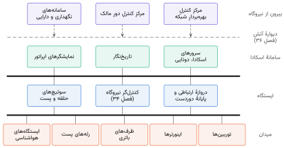
هر لایه کارِ خودش را دارد و این کارها با سرعت از هم جدا میشوند (بخش 34.3.1). حفاظت در رلهها و کنترلِ سریع در کنترلگرِ نیروگاه میماند. اسکادا سرپرستی میکند: میبیند، ثبت میکند، هشدار میدهد و فرمانهای بهرهبردار را میرساند. اسکادا هرگز جای حلقهٔ کنترلِ سریع یا حفاظت را نمیگیرد. این قاعده را در بخش 35.2.11 با یک اندازهگیری میبینیم.
35.2.2 سیگنال و داده
ایده. فصلِ ۳۴ با سیگنال کار کرد: جریانِ ۴ تا ۲۰ میلیآمپر یا کنتاکتی که همیشه یک مقدار را حمل میکند. شبکه داده جابهجا میکند: پیامهایی گسسته که هر کدام مقدار، یکا، کیفیت و زمان دارند. مرزِ میانِ این دو کارتِ ورودی یا دستگاهِ هوشمند است. سیگنال را نمونه میگیرد، به عدد تبدیل میکند، برچسبِ زمان میزند و پیام میفرستد. هر تصمیمِ این مرز (آهنگِ نمونه، وضوح، باند مرده، برچسبِ زمان) کیفیتِ همهٔ چیزهای بعدی را تعیین میکند. بخش 35.2.13 نشان میدهد باند مرده چگونه پیام را با خطا عوض میکند.
35.2.3 رسانهها و برد
media for the plant network and how far each reaches (teaching)
medium reach use at Plant P
copper Ethernet (twisted pair) 100 m inside buildings,
cabinets
multimode fibre about 0.5-2 km inside the substation
single-mode fibre 10-40 km and more turbine rings, line
radio link line of sight backup, remote met mast
serial RS-485 (copper) about 1 km legacy meters, slow
the farthest turbine is about 4.2 km of cable route away:
single-mode fibre, laid in the collector-cable trench,
immune to the fields of a 33 kV fault next to it - copper
between buildings would carry the earth-potential rise
of a fault from one earth mat to another (ch 26)ایده. هر رسانه تا جایی میرسد. اترنتِ مسی تا صد متر، فیبرِ چندحالته تا یکی دو کیلومتر و فیبرِ تکحالته تا دهها کیلومتر برد دارد. دورترین توربینِ نیروگاهِ P حدودِ 4.2 km مسیرِ کابل دورتر از پست است. پس حلقههای توربین فیبرِ تکحالتهاند و در ترانشهٔ کابلِ جمعآوری کشیده میشوند. فیبر میدانِ الکتریکیِ خطای 33 kV کنارش را حس نمیکند. کابلِ مسی میانِ دو ساختمان افزایشِ پتانسیلِ زمینِ یک خطا را از یک شبکهٔ زمین به دیگری میبرد (فصلِ ۲۶). خطِ سریالِ RS-485 برای کنتورهای قدیمی و رادیو برای پشتیبان و دکلِ دوردست میماند.
35.2.4 ترافیک و ظرفیت
ایده. هر پیام زمانی روی پیوند مینشیند و هر جریانِ پیوستهٔ پیام سهمی از ظرفیت را میگیرد:
\[ \begin{aligned} t_\text{s} &= \frac{8\,N_\text{b}}{R_\text{b}} \\ U_\text{L} &= \frac{8\,n_\text{m} N_\text{b}}{R_\text{b}} \end{aligned} \tag{35.1}\]
در این رابطه \(N_\text{b}\) اندازهٔ پیام به بایت، \(R_\text{b}\) نرخِ بیت، \(n_\text{m}\) شمارِ پیام در ثانیه، \(t_\text{s}\) تأخیرِ فرستادن و \(U_\text{L}\) بهرهوریِ پیوند است. ضریبِ ۸ بایت را به بیت تبدیل میکند و رایجترین خطای حسابِ شبکه همین ضریب است.
def serialisation_ms(bytes_: int, bit_rate: float) -> float:
"""Time to put one message of bytes_ on a link of bit_rate bit/s (ms)."""
return bytes_ * 8 / bit_rate * 1000
def utilisation(msgs_per_s: float, bytes_: int, bit_rate: float) -> float:
"""Share of a link's capacity a steady message stream uses."""
return msgs_per_s * bytes_ * 8 / bit_rate
def polling_cycle_s(devices: int, request_b: int, reply_b: int,
bit_rate: float, turnaround_ms: float) -> float:
"""Time to poll every device once on a shared serial line."""
per = (serialisation_ms(request_b, bit_rate)
+ serialisation_ms(reply_b, bit_rate) + turnaround_ms)
return devices * per / 1000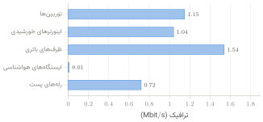
steady SCADA traffic of Plant P (teaching tag counts, 1 s cycle)
source devices tags Mbit/s
wind turbines 12 600 1.15
PV inverters 26 250 1.04
battery containers (S1) 8 1200 1.54
met stations 2 40 0.01
substation IEDs 30 150 0.72
total 4.5 Mbit/s: 4 % of a 100 Mbit/s edge link,
0.4 % of the 1 Gbit/s ring
the average is small; what loads a network is bursts -
every device answering a general interrogation at once,
or a historian back-filling a day - which is why links
are sized with headroom and bursts are rate-limitedمثال 35.1 (چهار درصد) پرسش. ۱۲ توربین هر کدام ۶۰۰ برچسب دارند و هر برچسب هر ثانیه ۲۰ بایت میفرستد. ترافیکِ توربینها چند مگابیت بر ثانیه است؟ ترافیکِ کلِ نیروگاه چند درصدِ پیوندِ 100 Mbit/s لبه و حلقهٔ 1 Gbit/s است؟ (دادهها آموزشیاند، A-393، سناریوی S1.)
پاسخ. \(12 \times 600 \times 20 \times 8 = 1\,152\,000\,\text{bit/s}\)، یعنی 1.15 Mbit/s. کلِ ترافیک 4.5 Mbit/s است: 4 % پیوندِ لبه و 0.4 % حلقه.
تفسیر. میانگین کوچک است. شبکه را فوران پر میکند: همهٔ دستگاهها با هم به یک پرسشِ همگانی پاسخ میدهند، یا تاریخنگار پس از قطعی یک روز داده را پر میکند. پیوندها با جای خالی اندازه میشوند و فورانها با محدودکنندهٔ آهنگ مهار میشوند. وارسی: باتری با ۸ ظرف و ۱۲۰۰ برچسب بیشترین سهم را دارد: 1.54 Mbit/s.
35.2.5 خطِ سریال: پرسشگری یا گزارش با تغییر
ایده. روی خطِ سریالِ مشترک، یک «پرسنده» از دستگاهها یکییکی میپرسد. چرخهٔ کاملِ پرسشگری چنین است:
\[ T_\text{poll} = N_\text{d}\left(\frac{8\,(N_\text{q} + N_\text{r})}{R_\text{b}} + t_\text{ta}\right) \tag{35.2}\]
در این رابطه \(N_\text{d}\) شمارِ دستگاهها، \(N_\text{q}\) و \(N_\text{r}\) اندازهٔ پرسش و پاسخ به بایت و \(t_\text{ta}\) زمانِ برگشت در هر دستگاه است. ضریبِ ۸ برای پیوندِ همگامی مانندِ اترنت درست است. روی خطِ سریالِ ناهمگام، مانندِ RS-485، هر بایت با بیتِ آغاز، بیتِ توازن یا بیتِ پایان ۱۰ تا ۱۱ بیت میشود و فاصلهٔ سکوتِ میانِ قابها هم افزوده میشود. با ۱۱ بیت، چرخهٔ ۳۰ کنتورِ مثال 35.2 حدودِ 2.3 s است، نه 1.77 s.
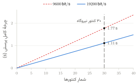
30 legacy meters on one RS-485 line at 9600 bit/s (teaching)
one poll: 8 + 45 bytes + 15 ms turnaround; full cycle 1.77 s
each value is up to 1.8 s old when read - fine for energy,
too slow for control
on Ethernet with report-by-exception (10 values a meter,
6 changes an hour each): 0.50 messages a second
polling asks everyone all the time; report-by-exception
sends only changes, with a periodic integrity scan so a
silent device is noticed (lesson C, loss of comms)مثال 35.2 (یکوهفتادوهفت صدم ثانیه) پرسش. ۳۰ کنتورِ قدیمی روی یک خطِ 9600 bit/s هستند. پرسش ۸ و پاسخ ۴۵ بایت است و هر کنتور 15 ms زمانِ برگشت دارد. چرخهٔ کامل چقدر است؟ اگر همین کنتورها روی اترنت فقط تغییرها را بفرستند، چند پیام در ثانیه میرسد؟
پاسخ. هر پرسش \(53 \times 8 / 9600 = 44.2\,\text{ms}\) بهعلاوهٔ 15 ms است. چرخه \(30 \times 59.2 = 1.77\,\text{s}\) میشود. با گزارش با تغییر، ۱۰ مقدار برای هر کنتور و ۶ تغییر در ساعت، \(30 \times 10 \times 6 / 3600 = 0.5\) پیام در ثانیه میرسد.
تفسیر. پرسشگری از همه، همیشه میپرسد. هر مقدار تا 1.8 s کهنه است، که برای انرژی خوب است و برای کنترل نه. گزارش با تغییر فقط تغییرها را میفرستد و یک پویشِ درستیِ دورهای دستگاهِ خاموش را آشکار میکند (بخش 35.4.3). وارسی: با 19200 bit/s چرخه 1.11 s است. زمانِ برگشت سهمِ بزرگتری میگیرد و دو برابر کردنِ نرخِ بیت چرخه را نصف نمیکند.
35.2.6 تأخیرِ یک پیام
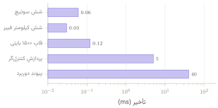
latency of a message from a turbine to the control centre (teaching)
part ms
6 switches x 10 us 0.060
6 km of fibre at 5 us/km 0.030
1500-byte frame at 100 Mbit/s 0.120
controller processing 5.000
WAN link to the control centre (2 Mbit/s) 40.000
total 45.2 ms - inside the plant the network adds well
under a millisecond; the WAN link and the processing
set the delay, which is why the plant controller sits
in the plant and the grid operator sends set points, not
loop signals (ch 34, telemetry budget)ایده. درونِ نیروگاه، شبکه کمتر از یک میلیثانیه به تأخیر میافزاید. هر سوئیچ چند میکروثانیه، هر کیلومتر فیبر پنج میکروثانیه و فرستادنِ یک قابِ بزرگ صدوبیست میکروثانیه میگیرد. پردازشِ کنترلگر و پیوندِ دوربردِ 2 Mbit/s تا مرکزِ کنترل بقیهٔ تأخیر را میسازند. برای همین کنترلگرِ نیروگاه در خودِ نیروگاه مینشیند و بهرهبردارِ شبکه نقطهٔ تنظیم میفرستد، نه سیگنالِ حلقهٔ کنترل (بخش 34.8.4). وارسی: \(0.06 + 0.03 + 0.12 + 5 + 40 = 45.2\,\text{ms}\).
35.2.7 بودجهٔ افتِ نوری
ایده. نور در فیبر کم میشود: در هر کیلومتر، در هر جوشِ فیبر و در هر اتصالدهنده. بودجهٔ افتِ نوری باید زیرِ توانِ اپتیکِ دو سر بماند، با حاشیهای برای جوشهای تعمیر و پیری:
\[ L_\text{opt} = \alpha_\text{f}\,\ell + n_\text{sp}\,a_\text{sp} + n_\text{c}\,a_\text{c} + M \le P_\text{opt} \tag{35.3}\]
در این رابطه \(\alpha_\text{f}\) افتِ فیبر در هر کیلومتر، \(\ell\) طول، \(n_\text{sp}\) و \(a_\text{sp}\) شمار و افتِ جوشها، \(n_\text{c}\) و \(a_\text{c}\) شمار و افتِ اتصالدهندهها، \(M\) حاشیه و \(P_\text{opt}\) بودجهٔ اپتیک است.
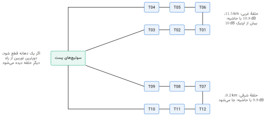
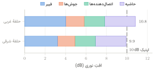
fibre loss budget of the turbine rings (teaching losses, 10 dB optics)
ring km splices loss + 3 dB margin fits?
ring W-east (T07-T12) 9.2 17 9.9 yes
ring W-west (T01-T06) 11.5 18 10.8 NO
ring W-west (T01-T06) exceeds the 10 dB optics by 0.8 dB:
longer-reach optics or a switch midway, decided before
the fibre is ordered
the budget is checked for the whole ring, because when one
span is cut the farthest turbine is reached the long way
round; the 3 dB margin covers repair splices and ageing,
and the as-built loss of each span is measured (lesson C)مثال 35.3 (هشتدهم دسیبل زیادی) پرسش. حلقهٔ غربی 11.5 km، ۱۸ جوش و ۴ اتصالدهنده دارد. با افتِ 0.35 dB/km، 0.1 dB برای هر جوش، 0.5 dB برای هر اتصالدهنده و حاشیهٔ 3 dB، آیا با اپتیکِ 10 dB جا میشود؟
پاسخ. \(11.5 \times 0.35 + 18 \times 0.1 + 4 \times 0.5 + 3 = 4.03 + 1.8 + 2.0 + 3 = 10.8\,\text{dB}\). از اپتیک 0.8 dB بیشتر است.
تفسیر. راهحل اپتیکِ با بردِ بلندتر یا یک سوئیچ در میانهٔ حلقه است. این تصمیم پیش از سفارشِ فیبر گرفته میشود. بودجه برای کلِ حلقه حساب میشود، زیرا وقتی یک دهانه قطع شود، دورترین توربین از راهِ دیگرِ حلقه دیده میشود. افتِ هر دهانه پس از نصب اندازهگیری و با بودجه مقایسه میشود (بخش 35.4.7). وارسی: حلقهٔ شرقی با 9.2 km و ۱۷ جوش 9.9 dB است و جا میشود.
35.2.8 زنجیره یا حلقه
ایده. در زنجیرهٔ پیاپی، هر توربین فقط از راهِ توربینهای پیش از خودش به پست میرسد. دسترسپذیریِ توربینِ \(k\)ام برابرِ \(A_\ell^k\) است. در توپولوژیِ حلقوی، هر توربین دو راه دارد و فقط وقتی جدا میماند که هر دو راه قطع باشند:
\[ \begin{aligned} A_\text{chain} &= A_\ell^{\,k} \\ A_\text{ring} &= 1 - \left(1 - A_\ell^{\,k_1}\right)\left(1 - A_\ell^{\,k_2}\right) \end{aligned} \tag{35.4}\]
در این رابطه \(A_\ell\) دسترسپذیریِ یک پیوند است و \(k_1\) و \(k_2\) شمارِ پیوندهای دو راهِ حلقه.
def star_availability(a_link: float, a_switch: float, n: int) -> float:
"""Availability that all n devices on a star reach the core switch."""
return a_switch * a_link ** n
def ring_device_availability(a_link: float, n: int) -> float:
"""Availability that one device on a ring of n+1 links reaches the
head: either way round must be whole (independent link failures)."""
k = n + 1
# device at the far point: two paths of about k/2 links each
half = k // 2
p1, p2 = a_link ** half, a_link ** (k - half)
return 1 - (1 - p1) * (1 - p2)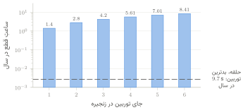
six turbines on a daisy chain or on a ring (teaching link rates)
one link (fibre span + its two ports): A = 0.999840
chain, farthest turbine (6 links in series): 8.40 h a year cut off
ring, worst-placed turbine: 9.7 s a year cut off
a ring costs one more fibre span and turns hours into
seconds; it still needs a ring protocol that reopens the
blocked port within the plant's tolerance (lesson C),
and two rings so one cut trench does not take allمثال 35.4 (ساعتها در برابرِ ثانیهها) پرسش. هر پیوند (دهانهٔ فیبر و دو درگاهش) MTBF برابرِ 150,000 h و MTTR برابرِ 24 h دارد. ششمین توربینِ زنجیره چند ساعت در سال جدا میماند؟ بدترین توربینِ حلقهٔ هفتپیوندی چطور؟
پاسخ. \(A_\ell = 150\,000/150\,024 = 0.99984\). زنجیره: \((1 - A_\ell^6) \times 8760 = 8.4\,\text{h}\). حلقه با دو راهِ ۳ و ۴ پیوندی: \((1 - A_\ell^3)(1 - A_\ell^4) \times 8760 \times 3600 = 9.7\,\text{s}\) در سال.
تفسیر. حلقه یک دهانهٔ فیبرِ بیشتر میخواهد و ساعتها را به ثانیهها تبدیل میکند. ولی پروتکلِ حلقه باید درگاهِ بسته را در زمانی که نیروگاه تحمل میکند باز کند (بخش 35.4.5). دو حلقه هم لازم است تا یک ترانشهٔ بریده همهٔ توربینها را نبرد. وارسی: فرض شده که خرابیها مستقلاند. دو دهانه در یک ترانشه این فرض را میشکنند (بخش 34.3.7).
35.2.9 همگامیِ زمان
ایده. برچسبِ زمان فقط به اندازهٔ ساعتی که آن را زده درست است. در نیروگاهِ P، یک ساعتِ اصلی زمانش را از گیرندهٔ ماهوارههای مکانیابی میگیرد. سپس آن را با پروتکلِ زمانِ دقیق (STD-150) از راهِ سوئیچهایی که زمانِ ماندنِ هر بسته را تصحیح میکنند، به دستگاهها میرساند. بدترین خطا جمعِ خطاهای هر حلقهٔ زنجیره است:
\[ \varepsilon_\text{t} = \sum_i \lvert\varepsilon_i\rvert \tag{35.5}\]
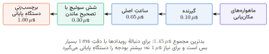
time-synchronisation error budget of the precision time protocol
contribution us
satellite receiver 0.10
grandmaster clock 0.05
6 switches, residence-time correction 0.30
end device time-stamping 1.00
worst-case sum 1.45 us
need accuracy met?
sequence of events (ch 34) 1 ms yes
synchrophasor-class measurement 1 us NO
the end device's own time-stamping takes most of the
budget: the chain as drawn serves events with room to
spare but misses a 1 us need, which would ask for better
end devices, not a better network; the network time
protocol (about a millisecond) would also serve events -
the need, not the fashion, chooses the method (STD-150)مثال 35.5 (نیاز انتخاب میکند، نه مد) پرسش. بدترین خطای زنجیرهٔ زمان چقدر است؟ برای دنبالهٔ رویدادها با دقتِ 1 ms و برای اندازهگیریِ فازوری با نیازِ 1 µs کافی است؟
پاسخ. \(0.10 + 0.05 + 0.30 + 1.00 = 1.45\,\mu\text{s}\). برای دنبالهٔ رویدادها با حاشیهٔ بسیار زیاد کافی است و برای 1 µs نه.
تفسیر. بیشترِ بودجه را برچسبزنیِ خودِ دستگاهِ پایانی میگیرد. نیازِ 1 µs دستگاههای بهتر میخواهد، نه شبکهٔ بهتر. پروتکلِ زمانِ شبکه با دقتِ حدودِ یک میلیثانیه هم برای رویدادها کافی بود. نیاز روش را انتخاب میکند. هر برچسبِ زمان پرچمِ «همگام» دارد تا ساعتِ ازدسترفته دیده شود (مثال 34.4). وارسی: سهمِ دستگاهِ پایانی \(1.00/1.45 = 69\,\%\) است.
35.2.10 زیرشبکهها بر پایهٔ کارکرد
subnets by function (teaching): smallest prefix that fits with 50 % growth
zone devices prefix addresses usable
substation IEDs 30 /26 62
turbines and ring switches 24 /26 62
PV inverters and stations 40 /26 62
battery containers 24 /26 62
control room servers and HMIs 12 /27 30
one subnet a function keeps broadcast traffic local and
lets the firewall rules of ch 36 speak in zones, not in
hundreds of single addresses; the address plan is a
controlled document like the I/O list (ch 34)ایده. هر دستگاه یک نشانی دارد و نشانیها در زیرشبکهها گروه میشوند. پیشوندِ \(/n\) یعنی \(32 - n\) بیتِ آخر برای دستگاههاست و \(2^{32-n} - 2\) نشانیِ قابلِ استفاده میماند. نیروگاهِ P یک زیرشبکه برای هر کارکرد دارد: رلههای پست، توربینها، اینورترها، باتری و اتاقِ کنترل. هر کدام کوچکترین پیشوندی را دارد که با پنجاه درصد رشد جا شود. سوئیچ قابها را درونِ یک زیرشبکه با نشانیِ سختافزاری جابهجا میکند. مسیریاب یا دیوارهٔ آتش زیرشبکهها را به هم میپیوندد و تصمیم میگیرد چه چیزی بگذرد (بخش 35.2.12). طرحِ نشانیها سندی کنترلشده مانندِ فهرستِ ورودی و خروجی است (بخش 34.4.1). وارسی: ۴۰ اینورتر با پنجاه درصد رشد ۶۰ نشانی و دو نشانیِ رزرو میخواهند: ۶۲، یعنی دقیقاً \(/26\).
- چهار لایهٔ اسکادا را با یک دستگاه در هر کدام بگویید.
- چرا اسکادا جای حلقهٔ کنترلِ سریع را نمیگیرد؟
- سیگنال و داده چه فرقی دارند و مرزِ آنها کجاست؟
- چرا حلقههای توربین فیبرِ تکحالتهاند و نه مس؟
- معادلهٔ 35.1 را توضیح دهید و بگویید ضریبِ ۸ از کجا میآید.
- چرا میانگینِ ترافیک برای اندازه کردنِ پیوند کافی نیست؟
- پرسشگری و گزارش با تغییر را با یک عدد مقایسه کنید.
- چرا دو برابر کردنِ نرخِ بیتِ خطِ سریال چرخه را نصف نمیکند؟
- کدام بخشهای تأخیر درونِ نیروگاه کوچکاند و کدام بزرگ؟
- چرا بودجهٔ افتِ نوری برای کلِ حلقه حساب میشود؟
- حلقه چه چیزی را بهتر میکند و چه فرضی پشتِ عددش هست؟
- بیشترِ بودجهٔ همگامیِ زمان را کدام حلقه میگیرد؟
- چرا یک زیرشبکه برای هر کارکرد؟
35.2.11 یک اندازهگیری از حسگر تا صفحهٔ اپراتور (مثالِ کارشده)
ایده. بخش 34.5.2 ولتاژِ نقطهٔ اتصال را تا ورودیِ کنترلگر دنبال کرد. اینجا توانِ اکتیوِ نقطهٔ اتصال را از ترانسفورماتورهای اندازهگیری تا صفحهٔ اپراتور دنبال میکنیم. در هر گام سه پرسش داریم: چقدر دیر میشود؟ برچسبِ زمان را کجا میگیرد؟ کیفیتش چه میشود؟
POC active power traced from the sensor to the operator's screen
hop worst ms adds
CT/VT and transducer (ch 34) 100.0 filter of the measurement
protection/measuring IED 20.0 sample, compute; TIME STAMP
ring and substation switches 0.1 store and forward
gateway / RTU 50.0 sends changes; new protocol
SCADA server scan 1000.0 waits for the next 1 s scan
operator screen refresh 1000.0 waits for the next refresh
worst-case age on the screen: 2.17 s; typical about 1.2 s
the value keeps the time stamp of the IED and the quality
it had there through every hop; the screen shows its age,
and the controller of ch 34 never takes this path - it
reads the transducer directlyمثال 35.6 (دو ثانیه پیر) پرسش. توانِ اکتیوِ نقطهٔ اتصال در بدترین حالت چقدر پیر به صفحهٔ اپراتور میرسد؟ کدام گامها بیشترین سهم را دارند؟ برچسبِ زمانِ آن را کجا میزنند؟ (دادهها آموزشیاند، A-393.)
پاسخ. در بدترین حالت 2.17 s و در حالتِ معمول حدودِ 1.2 s. پویشِ یکثانیهایِ سرور و تازهشدنِ یکثانیهایِ صفحه بیشترِ آن را میسازند. سوئیچها و فیبر یکدهم میلیثانیه میافزایند. برچسبِ زمان را دستگاهِ هوشمندِ اندازهگیری میزند و مقدار آن را با کیفیتش تا صفحه میبرد.
تفسیر. اپراتور مقداری را میبیند که دو ثانیه پیر است، و صفحه باید سن را نشان دهد (بخش 35.5.5). کنترلگرِ نیروگاه هرگز از این راه نمیخواند. مبدلِ اندازهگیری را مستقیم میخواند (بخش 34.3.2). برای کشیدنِ این ردیابی، نمودارِ مسیرِ ارتباط (بخش 35.4.1) و فهرستِ نقطهها کافی است. وارسی: \(100 + 20 + 0.1 + 50 + 1000 + 1000 = 2170\,\text{ms}\).
35.2.12 سوئیچ، مسیریاب و حوزهٔ پخش
broadcasts each device must read: one flat network or subnets
130 devices, each sending 0.5 broadcasts a second of 100 bytes (teaching)
flat network: every device reads 64.5 a second
five subnets: at most 19.5 a second (largest subnet 40)
a switch forwards frames inside its subnet by hardware
address; a router or firewall joins subnets and decides
what may cross. A storm or a misbehaving device then
stays inside one function, and the zone rules of ch 36
have a place to standایده. بعضی پیامها برای همه فرستاده میشوند: پرسشِ «چه کسی این نشانی را دارد؟» یا اعلامِ حضورِ یک دستگاه. در یک شبکهٔ تخت، هر دستگاه پخشِ همهٔ دستگاههای دیگر را میخواند. با ۱۳۰ دستگاه و نیم پخش در ثانیه از هر کدام، این 64.5 پیام در ثانیه است. در پنج زیرشبکه، بیشترین بارِ پخش 19.5 پیام در ثانیه است، در بزرگترین زیرشبکه. مهمتر از عدد این است که یک دستگاهِ خراب که پخش میریزد، فقط کارکردِ خودش را گرفتار میکند. ناحیههای فصلِ ۳۶ روی همین مرزها ساخته میشوند. وارسی: \(129 \times 0.5 = 64.5\) و \(39 \times 0.5 = 19.5\).
35.2.13 از سیگنال به داده: باند مرده
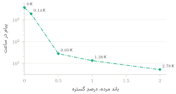
a 4-20 mA oil temperature turned into data (synthetic hour)
the loop carries one value all the time; as data it is
sampled each second and sent when it moves by a deadband
deadband % span reports an hour largest error K
0.0 3600 0.00
0.1 1844 0.14
0.5 27 0.69
1.0 13 1.38
2.0 5 2.78
a deadband trades messages for error: below the noise it
sends about half the samples, above the accuracy of the
instrument it throws away information; it is set from
the instrument's uncertainty (ch 34) and written in the
point list, never left at a gateway's defaultمثال 35.7 (پیام در برابرِ خطا) پرسش. دمای روغنِ یک ترانسفورماتور در یک ساعت ساختگی پنج درجه بالا و پایین میرود و نوفهٔ 0.15 K دارد. برد −20 تا 120 °C است. هر ثانیه نمونه گرفته میشود و فقط وقتی فرستاده میشود که از آخرین مقدارِ فرستادهشده بیش از باند مرده دور شود. شمارِ پیامها و بیشترین خطا با باند مردهٔ 0.1، 0.5 و 1 % گستره چیست؟
پاسخ. 1844، 27 و 13 پیام در ساعت، با بیشترین خطای 0.14، 0.69 و 1.38 K.
تفسیر. باند مردهٔ 0.1 %، یعنی 0.14 K، کمتر از نوفه است و حدودِ نیمی از نمونهها را میفرستد (1844 از 3600). باند مردهٔ 1 % اطلاعاتی را دور میریزد که ابزار واقعاً دارد. باند مرده از عدمِ قطعیتِ ابزار تعیین میشود (بخش 34.3.10) و در فهرستِ نقطهها نوشته میشود، نه با پیشفرضِ دروازهٔ ارتباطی. وارسی: خطا هرگز از باند مرده بیشتر نیست: \(0.5\,\% \times 140 = 0.7\,\text{K} \ge 0.69\,\text{K}\).
- توانِ نقطهٔ اتصال در بدترین حالت چقدر پیر به صفحه میرسد و چرا؟
- برچسبِ زمانِ یک اندازهگیری کجا زده میشود؟
- چرا کنترلگرِ نیروگاه از راهِ اسکادا نمیخواند؟
- سوئیچ و مسیریاب چه فرقی دارند؟
- چرا یک دستگاهِ خراب در شبکهٔ تخت همه را گرفتار میکند؟
- باند مرده چه چیزی را با چه چیزی عوض میکند؟
- باند مرده از کجا تعیین میشود؟
35.2.14 فورانها و پر کردنِ دوباره
a general interrogation and a historian back-fill (teaching)
every tag answers at once: 446 kB
on a 100 Mbit/s edge link: 35.7 ms
on the 2 Mbit/s WAN link: 1.78 s
back-fill of a day, 2,000 tags at 1 s: 3.5 GB
at the full 100 Mbit/s: 4.6 min - and nothing else gets
through meanwhile
limited to 10 % of the link: 46 min, live data unharmed
bursts are what fill links; a back-fill and a general
interrogation are rate-limited and scheduled, and the WAN
link carries only the agreed telemetry list, never a
general interrogation of the whole plantایده. مثال 35.1 گفت میانگینِ ترافیک کوچک است و فورانها پیوند را پر میکنند. اینجا دو فوران را اندازه میگیریم. پاسخِ همهٔ 22,300 برچسب به یک پرسشِ همگانی 446 kB است. روی پیوندِ لبه 36 ms و روی پیوندِ دوربرد نزدیکِ دو ثانیه طول میکشد. پر کردنِ دوبارهٔ یک روزِ تاریخنگار، یعنی 3.5 GB، پیوندِ 100 Mbit/s را پنج دقیقه کامل میگیرد و در این مدت هیچ چیزِ دیگری نمیگذرد. اگر به ده درصدِ پیوند محدود شود، ۴۶ دقیقه طول میکشد و دادهٔ زنده آسیب نمیبیند. پس پر کردنِ دوباره و پرسشِ همگانی محدودِ آهنگ و زمانبندی میشوند. پیوندِ دوربرد فقط فهرستِ دورسنجیِ توافقشده را میبرد. وارسی: \(3.456 \times 10^9 \times 8 / 10^8 = 276\,\text{s}\)، یعنی 4.6 دقیقه.
35.2.15 صفِ درگاه و بار
ایده. هر درگاهِ سوئیچ صفی دارد. با مدلِ سادهٔ صفِ تکخدمتدهنده، میانگینِ انتظار با بارِ \(\rho\) چنین رشد میکند:
\[ W = \frac{\rho}{1 - \rho}\, t_\text{s} \tag{35.6}\]
در این رابطه \(t_\text{s}\) زمانِ فرستادنِ یک قاب است.
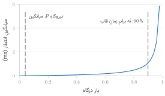
waiting time in a switch port against its load (M/M/1, teaching)
load % mean wait ms x the frame time
4 0.005 0.0
30 0.051 0.4
70 0.280 2.3
90 1.080 9.0
99 11.880 99.0
at the plant's 4 % the wait is nothing; it grows without
limit as the load nears 100 % - a link sized for the
average sits near the knee in every burst, which is why
links get headroom and control traffic gets priorityایده. در بارِ چهار درصدیِ نیروگاه، انتظار هیچ است. در نود درصد، نُه برابرِ زمانِ قاب است و نزدیکِ صد درصد بیحد رشد میکند. پیوندی که برای میانگین اندازه شده، در هر فوران نزدیکِ این زانو مینشیند. برای همین پیوندها جای خالی میگیرند و ترافیکِ کنترل اولویت. وارسی: در \(\rho = 0.9\)، \(0.9/0.1 = 9\).
35.2.16 اولویتِ ترافیک
a control message behind a back-fill burst of 1,000 frames
one queue for all: it waits up to 120 ms
control traffic in a higher priority queue: at most one frame, 0.12 ms
the switch ports carry priority classes: protection and
control first, SCADA next, back-fill and file transfer
last; a burst then fills the spare capacity, not the time
budget of the control loop (ch 34)ایده. اگر یک پیامِ کنترل پشتِ هزار قابِ پر کردنِ دوباره در یک صفِ مشترک بماند، 120 ms منتظر میماند. این بیش از کلِ بودجهٔ پاسخِ فصلِ ۳۴ است (بخش 34.3.2). اگر درگاهها ردهٔ اولویت داشته باشند، پیامِ کنترل حداکثر پشتِ یک قاب میماند، یعنی 0.12 ms. ترتیبِ ردهها چنین است: حفاظت و کنترل، اسکادا، و در پایان پر کردنِ دوباره و انتقالِ پرونده. فوران جای خالی را پر میکند، نه بودجهٔ زمانِ حلقهٔ کنترل را. ردهها در خطمبنای پیکربندیِ هر سوئیچ هستند (بخش 35.8.1).
35.2.17 سرباریِ پروتکل و بستهبندی
protocol overhead: one value a frame or many (teaching headers)
headers 66 bytes a frame; a value 20 bytes
values a frame bytes a value efficiency
1 86.0 23 %
5 33.2 60 %
20 23.3 86 %
50 21.3 94 %
sending each value alone costs 4.0 times the bytes
of sending fifty together; report-by-exception sends few
values a frame, so its saving is smaller than the count of
messages suggests - the traffic estimate of lesson A
counts bytes on the wire, headers includedایده. هر قاب سرآیندهایی دارد: اترنت، نشانی، انتقال و کاربرد، روی هم حدودِ ۶۶ بایت. یک مقدارِ ۲۰ بایتی که تنها فرستاده شود ۸۶ بایت میشود و بهرهوری ۲۳ درصد است. پنجاه مقدار در یک قاب هر کدام 21.3 بایت میشوند و بهرهوری ۹۴ درصد است. گزارش با تغییر مقدارهای کمی در هر قاب میفرستد، پس صرفهاش کمتر از کاهشِ شمارِ پیام است. برآوردِ ترافیکِ بخش 35.2.4 بایتهای روی سیم را با سرآیند میشمارد. وارسی: \(86 / 21.3 = 4.0\).
35.2.18 پیوندِ رادیوییِ پشتیبان
backup radio to a met mast 5 km away at 5.8 GHz (teaching values)
free-space loss 121.7 dB
received 20 + 2 x 23 - 121.7 - 2 = -57.7 dBm
against a sensitivity of -80 dBm: fade margin 22.3 dB
first Fresnel zone at mid-path: radius 8.0 m - kept
clear of the ground, the trees and the turbine blades
rain, dust and a mast that moves in wind eat the margin;
the link is a backup, sized with margin and tested by
switching to it, and its licence is the operator's to getمثال 35.8 (بیستودو دسیبل حاشیه) پرسش. دکلِ هواشناسیِ دوردست 5 km از پست فاصله دارد. پیوندِ رادیوییِ پشتیبان در 5.8 GHz با فرستندهٔ 20 dBm، دو آنتنِ 23 dBi، 2 dB افتِ کابل و حساسیتِ گیرندهٔ −80 dBm کار میکند. حاشیهٔ محوشدگی چقدر است؟ شعاعِ ناحیهٔ فرنل در میانهٔ مسیر چقدر است؟ (عددها آموزشیاند.)
پاسخ. افتِ فضای آزاد \(20\log_{10} 5 + 20\log_{10} 5800 + 32.44 = 121.7\,\text{dB}\) است. توانِ دریافتی \(20 + 46 - 121.7 - 2 = -57.7\,\text{dBm}\) و حاشیه 22.3 dB است. شعاعِ ناحیهٔ فرنل در میانهٔ مسیر 8.0 m است.
تفسیر. باران، گرد و دکلی که در باد تکان میخورد حاشیه را میخورند. ناحیهٔ فرنل باید از زمین، درختها و پرههای توربین خالی بماند. پیوند پشتیبان است، با حاشیه اندازه میشود و با جابهجا کردن روی آن آزموده میشود. مجوزِ بسامد را بهرهبردار میگیرد. وارسی: \(17.32\sqrt{2.5 \times 2.5/(5.8 \times 5)} = 8.0\,\text{m}\).
35.2.19 یک یا دو حامل برای دورسنجی
telemetry link to the grid operator: one or two carriers
one carrier at 0.995: 43.8 h a year without telemetry
two independent carriers: 0.22 h a year
two carriers in one duct for the last km (10 % shared): 4.6 h
a second carrier helps only if its route is different;
the routes are drawn on the physical diagram and the
grid operator's own requirement for redundancy decides
(U-115)ایده. پیوندِ دورسنجی به مرکزِ کنترلِ بهرهبردار با یک حامل و دسترسپذیریِ 0.995 حدودِ 44 ساعت در سال قطع است. دو حاملِ مستقل این را به 0.22 ساعت میرسانند. ولی اگر دو حامل در کیلومترِ آخر یک مجرا داشته باشند و ده درصدِ قطعیها از همان مجرا باشد، 4.6 ساعت میماند. حاملِ دوم فقط وقتی کمک میکند که مسیرش جدا باشد. مسیرها روی نمودارِ فیزیکی کشیده میشوند. الزامِ افزونگی را خودِ بهرهبردارِ شبکه تعیین میکند (U-115). این همان خرابیِ با علتِ مشترکِ بخش 34.3.7 است. وارسی: \(0.005^2 \times 8760 = 0.22\).
35.2.20 آهنگِ نمونه و آنچه نشان میدهد
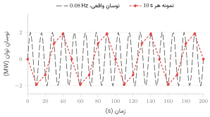
a 0.08 Hz power oscillation of 2 MW seen at three sampling intervals
interval s apparent frequency Hz largest swing seen MW
1 0.080 3.99
10 0.020 3.80
10-min avg none 0.00
at 1 s the oscillation is seen as it is; at 10 s it shows
up as a slow wave of the wrong frequency (aliasing); in a
10-minute average it is gone. The sampling of each point
is chosen from the fastest thing it must show - at least
two samples a period, better ten - and a phenomenon
faster than SCADA sampling belongs to a recorder (ch 27)مثال 35.9 (موجی که وجود ندارد) پرسش. توانِ نیروگاه با بسامدِ 0.08 Hz و دامنهٔ 2 MW نوسان میکند. اسکادا آن را با نمونهٔ یکثانیهای، با نمونهٔ دهثانیهای و با میانگینِ دهدقیقهای میبیند. در هر حالت چه دیده میشود؟ (دادهها ساختگیاند.)
پاسخ. با یک ثانیه، نوسان همانگونه که هست دیده میشود. با ده ثانیه، دگرنمایی رخ میدهد و موجی با بسامدِ 0.02 Hz دیده میشود که وجود ندارد. در میانگینِ دهدقیقهای نوسان کاملاً گم میشود.
تفسیر. آهنگِ نمونهٔ هر نقطه از تندترین چیزی که باید نشان دهد انتخاب میشود: دستکم دو نمونه در هر دوره، و بهتر ده نمونه. پدیدهای تندتر از نمونهگیریِ اسکادا جای ثبتکنندهٔ کیفیتِ توان است (فصلِ ۲۷)، نه اسکادا. همان قاعدهٔ پنجرهٔ مقدارِ مؤثرِ فصلِ ۳۴ اینجا برای شبکه به کار میرود (بخش 34.2.7). وارسی: با نمونهگیریِ 0.1 Hz، \(\lvert 0.08 - 0.1 \rvert = 0.02\,\text{Hz}\).
35.2.21 وارسیِ طرحِ نشانیها با برنامه
the address plan checked by program (synthetic extract of 9)
IED-T1-1: 10.35.1.12 already used by IED-E1-2
BES-C02: 10.35.5.42 outside its subnet 10.35.4.0/26
2 findings in 9 rows
a duplicate address makes two devices answer by turns -
intermittent faults that look like a bad cable; an
address outside its subnet cannot be reached through the
zone rules at all. The plan is checked like the tag list
(lesson B), before any device is configuredایده. طرحِ نشانیها (بخش 35.2.10) مانندِ فهرستِ برچسبها با برنامه وارسی میشود. در برشِ ساختگیِ نُهسطری دو یافته هست. یک نشانی دو بار به کار رفته است و نشانیِ یک ظرفِ باتری بیرون از زیرشبکهٔ باتری است. نشانیِ تکراری باعث میشود دو دستگاه به نوبت پاسخ دهند. خرابیِ گاهبهگاهی که میسازد شبیهِ کابلِ خراب است و پیدا کردنش روزها طول میکشد. دستگاهی که بیرون از زیرشبکهاش است از راهِ قاعدههای ناحیه اصلاً در دسترس نیست. وارسی: 10.35.5.42 در \(10.35.4.0/26\) نیست، زیرا سومین عدد ۵ است.
35.2.22 بودجهٔ پیوندِ دورسنجی به بهرهبردارِ شبکه
telemetry to the grid operator on a 64 kbit/s link (placeholder list)
60 points every 4 s, 25 bytes each: 3.0 kbit/s, 4.7 % of the link
general interrogation of 300 objects: 60 kbit, 0.9 s on the link
the grid operator's list, rates and link are theirs to set
(U-115); the budget shows the list fits with room for
the interrogation after a restart and for set pointsایده. فهرستِ جایگزینِ ۶۰ نقطه با فاصلهٔ چهار ثانیه و ۲۵ بایت برای هر نقطه، با سرآیند، 3 kbit/s است: 4.7 % پیوندِ 64 kbit/s. پرسشِ همگانیِ ۳۰۰ شیء پس از راهاندازیِ دوباره کمتر از یک ثانیه طول میکشد. فهرست، آهنگ و پیوند را بهرهبردارِ شبکه تعیین میکند (U-115). بودجه نشان میدهد که فهرست با جای کافی برای پرسشِ همگانی و نقطههای تنظیم جا میشود. وارسی: \(60 \times 0.25 \times 25 \times 8 = 3000\,\text{bit/s}\).
35.2.23 رفت و برگشتِ یک نقطهٔ تنظیم
a new export limit from the grid operator: round trip (teaching)
step s
grid operator to gateway (WAN) 0.40
gateway to plant controller 0.05
validation and next controller cycle 0.20
units start to move 0.50
ramp 20 MW at 10 MW a minute 120.00
telemetry of the new value back 0.80
total 122.0 s, of which communication and control 1.45 s
the network and the controller take under two seconds; the
ramp the plant is allowed takes two minutes. A requirement
on response time is checked against the whole chain, and
the acknowledgement (set point received) is sent at once,
long before the plant has reached the new valueمثال 35.10 (دو ثانیه و دو دقیقه) پرسش. بهرهبردارِ شبکه سقفِ صادرات را 20 MW پایین میآورد. از فرستادنِ پیام تا رسیدنِ مقدارِ تازهٔ اندازهگیریشده به او چقدر طول میکشد؟ سهمِ ارتباط و کنترل چقدر است؟ (عددها آموزشیاند.)
پاسخ. روی هم 122 s. ارتباط و کنترل 1.45 s از آن است و شیبِ مجازِ ده مگاوات در دقیقه ۱۲۰ ثانیه.
تفسیر. شبکه و کنترلگر کمتر از دو ثانیه میگیرند. شیبِ مجازِ نیروگاه دو دقیقه طول میکشد. الزامِ زمانِ پاسخ با کلِ زنجیره سنجیده میشود. تأییدِ «نقطهٔ تنظیم رسید» بیدرنگ فرستاده میشود، بسیار پیش از آنکه نیروگاه به مقدارِ تازه برسد. بهرهبردار باید بداند پیامش رسیده است، حتی اگر نیروگاه هنوز در راه باشد (بخش 34.8.2). وارسی: \(0.4 + 0.05 + 0.2 + 0.8 = 1.45\)؛ گامِ «آغازِ حرکتِ واحدها» جزوِ پاسخِ نیروگاه است.
- پاسخِ همگانیِ کلِ نیروگاه روی پیوندِ دوربرد چقدر طول میکشد؟
- چرا پر کردنِ دوباره محدودِ آهنگ میشود؟
- معادلهٔ 35.6 را توضیح دهید و بگویید زانوی منحنی کجاست.
- ردهٔ اولویت برای پیامِ کنترل چه میکند؟
- چرا گزارش با تغییر کمتر از کاهشِ شمارِ پیام صرفه دارد؟
- حاشیهٔ محوشدگیِ پیوندِ رادیویی را چه چیزهایی میخورند؟
- چرا ناحیهٔ فرنل باید خالی بماند؟
- حاملِ دوم کی کمک نمیکند؟
- دگرنمایی چیست و آهنگِ نمونه چگونه انتخاب میشود؟
- نشانیِ تکراری چه نشانهای دارد؟
- پیوندِ دورسنجی به بهرهبردار با کدام بودجه اندازه میشود؟
35.3 ب. داده و همکنشپذیری
شبکه بایت جابهجا میکند. اسکادا باید بداند هر بایت چه معنایی دارد: کدام کمیت، با چه یکایی، چقدر خوب، و کی. پروتکل قاعدهٔ رفتوآمدِ بایتهاست. مدلِ داده قاعدهٔ معنای آنهاست. این بخش نشان میدهد معنا کجا گم میشود و چگونه نگهش میداریم.
35.3.1 ثبّات یا شیء
ایده. پروتکلهای قدیمیتر، مانندِ پروتکلِ ثبّاتمحورِ کنتورها (STD-155)، عددهای خام را در ثبّاتهای شمارهدار میگذارند. معنای هر ثبّات، یعنی کمیت، ضریب، یکا و علامت، در دفترچهٔ سازنده است، نه در پیام. پروتکلهای مدلِ دادهمحور، مانندِ سری IEC 61850 (STD-093)، هر مقدار را شیءای میفرستند که یکا، کیفیت و زمانش را همراه دارد. پروتکلهای دورکنترلِ بهرهبردارانِ شبکه، مانندِ IEC 60870-5-104 (STD-092) یا DNP3 (STD-154)، کیفیت و زمان را دارند ولی معنای هر نقطه را از فهرستِ توافقشده میگیرند.
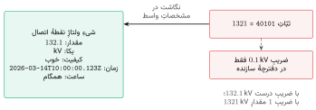
the same POC voltage as a bare register and as an object
register 40101 = 1321 (the scale 0.1 kV lives only in a manual)
read with the right scale: 132.1 kV; with scale 1: 1321 kV
scaling check on 0-150 kV flags the second: True
as an object: value 132.1, unit kV, quality good,
time 2026-03-14T10:00:00.123Z, clock synchronised
a register is a number whose meaning sits elsewhere; an
object carries its unit, quality and time with it - the
register map is then a controlled document, checked
value by value in the point-to-point test (lesson C)مثال 35.11 (هزاروسیصدوبیستویک کیلوولت) پرسش. ثبّاتِ 40101 عددِ 1321 را دارد. ضریبِ 0.1 kV فقط در دفترچه نوشته شده است. اگر مهندسِ پیکربندی ضریب را ۱ بگذارد چه میشود و چگونه آشکار میشود؟
پاسخ. با ضریبِ درست 132.1 kV و با ضریبِ ۱ مقدارِ 1321 kV خوانده میشود. وارسیِ مقیاس آن را آشکار میکند: مقدار بیرون از بردِ 0 تا 150 kV است، ولی اگر بر ۱۰ تقسیم شود درونِ برد میافتد.
تفسیر. ثبّات عددی است که معنایش جای دیگری است. نقشهٔ ثبّاتها سندی کنترلشده است و مقدار به مقدار در آزمونِ نقطهبهنقطه وارسی میشود (بخش 35.4.7). وارسیِ خودکارِ مقیاس هم پیش از ثبت اجرا میشود (بخش 35.5.3). وارسی: \(1321 \times 0.1 = 132.1\).
35.3.2 پرچمهای کیفیت از دروازهٔ ارتباطی میگذرند؟
ایده. هر مقدار با پرچمِ کیفیت میآید: نامعتبر، مشکوک، جایگزینشده (دستی)، کهنه یا آزمونی (بخش 34.2.1). وقتی مقدار از یک دروازهٔ ارتباطی میگذرد، پروتکلِ مقصد ممکن است همهٔ این پرچمها را نداشته باشد. جدولِ نگاشتِ دروازه تصمیم میگیرد کدام پرچم چه میشود.
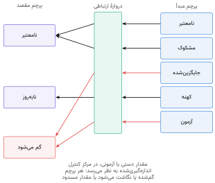
quality through a gateway: source flags and what survives (teaching)
source flag target flag kept?
invalid invalid yes
questionable invalid yes
substituted - LOST
old data not topical yes
test - LOST
lost in the gateway: ['substituted', 'test']
a substituted value (typed in by hand) or a test value
arrives at the control centre looking measured - the
mapping table is part of the interface specification
and each lost flag is either mapped or the value blockedایده. در این دروازه، «جایگزینشده» و «آزمونی» گم میشوند. مقداری که کسی دستی وارد کرده، یا مقداری از آزمون، در مرکزِ کنترل اندازهگیریشده به نظر میرسد. جدولِ نگاشت بخشی از مشخصاتِ واسط است. هر پرچمِ گمشده یا نگاشت میشود یا مقدار مسدود میشود. آزمونِ کیفیتِ داده در پذیرش همین را با مقدارهای کاشته وارسی میکند (بخش 35.4.7).
35.3.3 چه کسی زمان را میزند؟
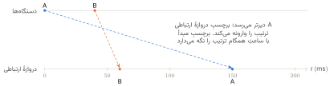
who stamps the time: the device or the gateway? (synthetic)
two events up to 100 ms apart on two devices; 5-200 ms to the gateway
stamped at the source (synchronised clocks): order wrong 0.0 %
stamped by the gateway on arrival: order wrong 28.6 %
a time stamp added on arrival measures the network, not
the event; the sequence of events is stamped where it
happens and the stamp travels unchanged with the valueمثال 35.12 (بیستوهشت درصد وارونه) پرسش. دو رخداد روی دو دستگاه تا 100 ms از هم فاصله دارند. پیامِ هر دستگاه 5 تا 200 ms طول میکشد تا به دروازهٔ ارتباطی برسد. اگر دروازه هنگامِ رسیدن زمان بزند، در چند درصد جفتها ترتیب وارونه میشود؟ (۵۰ هزار جفتِ ساختگی.)
پاسخ. 28.6 %. با برچسبِ مبدأ و ساعتهای همگام، هیچ جفتی وارونه نمیشود.
تفسیر. برچسبی که هنگامِ رسیدن زده شود شبکه را میسنجد، نه رخداد را. دنبالهٔ رویدادها جایی برچسب میخورد که رخ میدهد و برچسب بیتغییر همراهِ مقدار سفر میکند (مثال 34.15). وارسی: جفت وقتی وارونه میشود که فاصلهٔ رخدادها کمتر از اختلافِ دو تأخیر باشد. با بازهٔ تأخیرِ 195 ms و فاصلهٔ تا 100 ms، این برای بخشِ بزرگی از جفتها رخ میدهد.
35.3.4 گونهٔ داده: شمارندهای که سرریز میکند
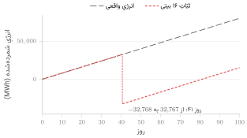
an energy counter in MWh through a 16-bit signed register
plant energy 808 MWh a day (ch 15)
16-bit counter: wraps after 41 days
32-bit counter: wraps after 7,277 years
a counter that wraps in six weeks looks like a sudden
loss of energy in every report that does not expect it;
the data type of each point is chosen from its range over
the plant's life, not from what the gateway offersایده. هر نقطه گونهٔ دادهای دارد: صحیحِ ۱۶ یا ۳۲ بیتی، با یا بیعلامت، یا اعشاری. ثبّاتِ ۱۶ بیتیِ علامتدار تا 32,767 را نگه میدارد. شمارندهٔ انرژی به مگاواتساعت با 808 MWh در روز پس از ۴۱ روز سرریز میکند و به −32,768 میپرد. در هر گزارشی که منتظرش نباشد، مانندِ افتِ ناگهانیِ انرژی دیده میشود. ثبّاتِ ۳۲ بیتی هزاران سال کار میکند. گونهٔ دادهٔ هر نقطه از بردِ آن در عمرِ نیروگاه انتخاب میشود، نه از آنچه دروازه پیشنهاد میکند. وارسی: \(32\,767 / 808 = 40.6\) روز.
35.3.5 «همان پروتکل» یعنی همکنشپذیر؟
two devices that both 'support the same protocol' (teaching)
needed by the plant controller: 10 items
device A offers 9, device B offers 7
missing from A: ['Q set']
missing from B: ['P set', 'alarm', 'time sync']
common to both: 6 of 10
a protocol name says how bytes travel, not which data and
services a device has; interoperability is shown by a
profile of the needed items, checked against each
device's declaration and proved in an interface testمثال 35.13 (دو دستگاه، یک نام) پرسش. کنترلگرِ نیروگاه ده قلمِ داده و خدمت از هر اینورتر یا مبدلِ باتری لازم دارد. هر دو دستگاهِ پیشنهادی «همان پروتکل» را پشتیبانی میکنند. دستگاهِ A ۹ قلم و دستگاهِ B ۷ قلم را دارد. چه چیزی کم است؟
پاسخ. از A نقطهٔ تنظیمِ توانِ واکنشی کم است. از B نقطهٔ تنظیمِ توانِ اکتیو، هشدار و همگامیِ زمان کم است. هر دو با هم فقط ۶ قلمِ مشترک دارند.
تفسیر. نامِ پروتکل میگوید بایتها چگونه سفر میکنند، نه اینکه دستگاه کدام دادهها و خدمتها را دارد. همکنشپذیری با یک پروفایل نشان داده میشود: فهرستِ قلمهای لازم که با اعلامیهٔ هر دستگاه سنجیده و در آزمونِ واسط ثابت میشود. این پروفایل در اسنادِ خرید میآید (فصلِ ۳۹)، نه پس از تحویل. پروفایلِ واسطِ بهرهبردارِ شبکه را خودِ بهرهبردار تعیین میکند (U-115). وارسی: \(10 - 1 = 9\) و \(10 - 3 = 7\).
35.3.7 شمارندهٔ اعشاری که گامهای کوچکش را گم میکند
an energy counter in kWh held as a 32-bit float (teaching)
year counter kWh resolution kWh one-minute step kWh
1 295,100,000 32 1,667
5 1,475,500,000 128 1,667
25 7,377,500,000 512 1,667
ten hours at 100 MW added in year 25: true 1,000,000 kWh, counted 921,760
error -7.8 %
a float keeps about seven digits: a growing counter
loses its small steps first; energy counters are 32- or
64-bit integers in Wh or kWh, and floats are kept for
measurements, not for sums that grow for 25 yearsمثال 35.14 (هفتوهشت دهم درصد کمتر) پرسش. انرژیِ نیروگاه به کیلوواتساعت در یک عددِ اعشاریِ ۳۲ بیتی جمع میشود. این گونه حدودِ هفت رقمِ معنادار دارد. وضوحِ شمارنده در سالهای ۱، ۵ و ۲۵ چقدر است؟ اگر در سالِ ۲۵ ده ساعت تولیدِ 100 MW دقیقهبهدقیقه به آن افزوده شود، چه چیزی شمرده میشود؟
پاسخ. وضوح در سالِ اول 32، در سالِ پنجم 128 و در سالِ ۲۵ 512 kWh است. گامِ دقیقهای 1,667 kWh است. در سالِ ۲۵، از یک میلیون کیلوواتساعتِ واقعی فقط 921,760 شمرده میشود: 7.8 % کمتر.
تفسیر. عددِ اعشاری با بزرگ شدن گامهای کوچکش را گم میکند، زیرا هر جمع به نزدیکترین مقدارِ قابلِ نمایش گرد میشود. شمارندههای انرژی عددِ صحیحِ ۳۲ یا ۶۴ بیتی به واتساعت یا کیلوواتساعتاند (بخش 35.3.4). اعشاری برای اندازهگیریهاست، نه برای جمعی که ۲۵ سال بزرگ میشود. وارسی: \(\log_2(7.38 \times 10^9) = 32.8\)، پس وضوح \(2^{32-23} = 512\).
35.3.8 ترتیبِ کلمهها در دو ثبّات
a 32-bit value carried in two 16-bit registers (teaching)
energy 295,100 MWh: high word 4, low word 32,956
read with the words swapped: 2,159,804,420 MWh
the float 132.1 kV read with the words swapped: 1.595e-23
(true 132.1)
a protocol moves words; which word comes first is a
device setting the register map must state. Both errors
here are absurd and a range check catches them, but a
counter below 65,536 has a high word of 0 and reads
right until the day it passes it - so the point-to-point
test uses a known value with both words non-zeroایده. یک مقدارِ ۳۲ بیتی در دو ثبّاتِ ۱۶ بیتی جا میشود. کدام ثبّات کلمهٔ بالا را دارد، تنظیمِ دستگاه است و نقشهٔ ثبّاتها باید آن را بگوید. انرژیِ 295,100 MWh کلمهٔ بالای ۴ و کلمهٔ پایینِ 32,956 دارد. اگر جابهجا خوانده شود، 2,159,804,420 MWh میشود. عددِ اعشاریِ 132.1 جابهجا خوانده شود 1.6e-23 میشود. هر دو بیمعنا هستند و وارسیِ برد آنها را میگیرد. ولی شمارندهای که زیرِ 65,536 است کلمهٔ بالایش صفر است و درست خوانده میشود، تا روزی که از آن بگذرد. پس آزمونِ نقطهبهنقطه مقداری شناخته را به کار میبرد که هر دو کلمهاش ناصفر باشند. وارسی: \(4 \times 65\,536 + 32\,956 = 295\,100\).
35.3.9 وارسیِ فهرستِ نقطهها با برنامه
the point list checked by program (synthetic extract of 5)
PLP-WTG-T01.ActivePower: unit kW, the signal is in MW
PLP-BES-C03.Soc: deadband 0 - every sample sent
PLP-MET-M1.Ghi: range 0-150 cannot hold a clear-sky value
3 findings in 5 rows
each check is one line of code and runs on every revision
of the list: units against the signal, a deadband near
the instrument's uncertainty, a range that holds the
largest real value - the kW/MW error of lab D is caught
here, before the gateway is configuredایده. هر سطرِ فهرستِ نقطهها چند وارسیِ یکخطی دارد: یکا با نامِ سیگنال بخواند، باند مرده نزدیکِ عدمِ قطعیتِ ابزار باشد، و برد بزرگترین مقدارِ واقعی را نگه دارد. در برشِ ساختگیِ پنجسطری سه یافته هست. توانِ توربین با یکای کیلووات آمده، در حالی که نامِ سیگنال مگاوات میخواهد. این همان خطای آزمایشگاهِ ت است (مثال 35.25). باند مردهٔ صفر هر نمونه را میفرستد. بردِ 0 تا 150 W/m² تابشِ آسمانِ صاف را جا نمیدهد. وارسیها روی هر بازنگریِ فهرست اجرا میشوند، پیش از پیکربندیِ دروازهٔ ارتباطی. وارسی: تابشِ آسمانِ صاف حدودِ 1000 W/m² است (فصلِ ۱۲).
35.3.10 رخدادهای تکراری از دو دروازهٔ افزونه
one day of events through a redundant pair of gateways (synthetic)
events at the source: 500; received at SCADA: 969
kept when duplicates are recognised by source, point and
source time stamp: 500
kept if the stamp were taken on arrival: up to 969 - the copies
arrive milliseconds apart and look like two events
the source stamp of lesson B is also what lets redundancy
work without doubling the event list and the work requestsایده. دو دروازهٔ ارتباطیِ افزونه هر رخداد را دو بار میرسانند. در یک روزِ ساختگی، ۵۰۰ رخدادِ مبدأ به ۹۶۹ پیام در اسکادا تبدیل میشوند. اگر تکرارها با مبدأ، نقطه و برچسبِ زمانِ مبدأ شناخته شوند، همان ۵۰۰ رخداد میماند. اگر برچسب هنگامِ رسیدن زده میشد، دو نسخه با چند میلیثانیه فاصله مانندِ دو رخداد دیده میشدند. همان برچسبِ مبدأِ بخش 35.3.3 است که افزونگی را بیدو برابر شدنِ فهرستِ رخدادها و درخواستهای کار ممکن میکند. وارسی: \(500 + 469 = 969\)؛ ۴۶۹ رخداد از هر دو راه رسیدهاند.
- چرا شمارندهٔ اعشاری با گذشتِ سالها گامهای کوچکش را گم میکند؟
- شمارندهٔ انرژی با چه گونهای نگه داشته میشود؟
- ترتیبِ کلمهها چیست و کجا نوشته میشود؟
- چرا شمارندهٔ کوچک ترتیبِ نادرستِ کلمهها را پنهان میکند؟
- آزمونِ نقطهبهنقطه برای ترتیبِ کلمهها چه مقداری به کار میبرد؟
- سه وارسیِ یکخطیِ فهرستِ نقطهها را بگویید.
35.4 پ. بهرهبرداری و طراحیِ اسکادا
اسکادایی که داده را درست جابهجا کند، هنوز باید به آدمها کمک کند: نمودارهایی که پرسشهای درست را پاسخ دهند، هشدارهایی که اپراتور را غرق نکنند، دادهای که در قطعی گم نشود، نقشهایی که هر کس فقط کارِ خودش را بکند، و پذیرشی که همهٔ اینها را ثابت کند.
35.4.1 گونههای نمودار
the diagram types of a SCADA design and the question each answers
diagram answers
physical topology where are the boxes and cables?
logical topology who can talk to whom, in which subnet?
communication path which hops does one message take?
interface / data flow which data cross which boundary?
point-to-point wiring which terminal goes to which?
zones and conduits where are the security boundaries? (ch 36)
redundancy / failover what happens when this link fails?
time synchronisation where does each clock get its time?
no single drawing answers all of these; each is a
controlled document with an owner, and the same device
carries the same tag on every one of them (lesson F)ایده. هیچ نقشهٔ تنهایی به همهٔ پرسشها پاسخ نمیدهد. توپولوژیِ فیزیکی میگوید جعبهها و کابلها کجا هستند (شکل 35.5). توپولوژیِ منطقی میگوید چه کسی در کدام زیرشبکه با چه کسی حرف میزند (بخش 35.4.8). نمودارِ مسیرِ ارتباط گامهای یک پیام را نشان میدهد (بخش 35.2.11). نمودارِ واسط و جریانِ داده میگوید کدام داده از کدام مرز میگذرد (شکل 35.25). نقشهٔ سیمکشیِ نقطهبهنقطه هر پایانه را به پایانهٔ دیگر میبرد. ناحیهها و مجراها مرزهای امنیتی را نشان میدهند (فصلِ ۳۶). نمای افزونگی میگوید وقتی یک پیوند میافتد چه میشود (شکل 35.17). نمودارِ همگامیِ زمان میگوید هر ساعت زمانش را از کجا میگیرد (شکل 35.8). هر کدام سندی کنترلشده با مالکِ خودش است و یک دستگاه روی همهٔ آنها یک برچسب دارد (بخش 35.3.6).
35.4.2 هشدارِ لرزان
ایده. هشداری که روی نوفهٔ کنارِ حد بالا و پایین میرود، هشدارِ لرزان است و اپراتور را در سیلِ هشدار غرق میکند. دو ابزار جلویش را میگیرند. تأخیر هشدار را فقط وقتی بالا میبرد که مقدار چند نمونهٔ پیاپی بالای حد بماند. باند مرده هشدار را فقط وقتی پاک میکند که مقدار به اندازهٔ باند زیرِ حد برگردد. قاعدهٔ آموزشیِ نیروگاهِ P چنین است:
def alarm_states(values, high: float, deadband: float, delay_n: int):
"""Benign high-alarm rule on a series: raise after delay_n samples
above high, clear only below high - deadband (no chattering)."""
out, active, count = [], False, 0
for v in values:
if not active:
count = count + 1 if v > high else 0
if count >= delay_n:
active, count = True, 0
elif v < high - deadband:
active = False
out.append(active)
return out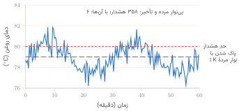
a transformer oil-temperature alarm at 80 C, one hour (synthetic)
no deadband, no delay: 358 alarms in the hour
1 K deadband and 10 s delay: 6 alarm(s)
the raw rule chatters on noise around the limit and buries
the operator; a delay before raising and a deadband before
clearing turn the same hour into what really happened -
both are written in the alarm philosophy and testedمثال 35.15 (سیصدوپنجاهوهشت در برابرِ شش) پرسش. دمای روغن یک ساعت کنارِ 80 °C بالا و پایین میرود و نوفهٔ 0.6 K دارد. قاعدهٔ خام، بیتأخیر و بیباند مرده، چند هشدار میدهد؟ با تأخیرِ 10 s و باند مردهٔ 1 K چطور؟ (دادهها ساختگیاند.)
پاسخ. قاعدهٔ خام 358 هشدار در ساعت میدهد. با تأخیر و باند مرده 6 هشدار میماند، یعنی همان بارهایی که دما واقعاً از حد گذشت.
تفسیر. هر دو ابزار در فلسفهٔ هشدار نوشته و آزموده میشوند. مدیریتِ هشدارها چرخهٔ عمرِ خودش را دارد (STD-153): فلسفه، بازنگریِ هشدارها (هر هشدار یک علت، یک اقدام و یک اولویت دارد) و پایشِ آمار. هشدارِ لرزان همانقدر برای سامانهٔ نگهداری خطرناک است که برای اپراتور (بخش 35.7.4). وارسی: با تأخیرِ ۱۰ نمونه، تکههای کوتاهِ نوفه بالای حد دیگر هشدار نمیسازند.
35.4.3 میانگیر در مبدأ
buffer a device needs when the historian is away (teaching)
2,000 tags at 1 s, 20 bytes each, 24 h outage: 3.5 GB
data buffered at the source and sent when the link returns
keeps the record whole; without a buffer the hours of an
outage - often the interesting ones - are a hole in every
trend and in the availability evidence (ch 37)ایده. وقتی پیوند یا تاریخنگار در دسترس نیست، داده باید جایی بماند. میانگیر در دستگاهِ مبدأ داده را نگه میدارد و پس از برگشتِ پیوند میفرستد. اندازهاش از رابطهٔ سادهای به دست میآید:
\[ S = N_\text{tag}\,\frac{T}{\Delta t}\,b \tag{35.7}\]
در این رابطه \(N_\text{tag}\) شمارِ برچسبها، \(T\) مدتِ نگهداری، \(\Delta t\) فاصلهٔ نمونهها و \(b\) بایت برای هر مقدار است. برای ۲۰۰۰ برچسب، یک ثانیه، ۲۰ بایت و یک روز قطعی، \(2000 \times 86\,400 \times 20 = 3.5\,\text{GB}\) لازم است. بیمیانگیر، ساعتهای قطعی، که اغلب جالبترین ساعتها هستند، در هر روند و در شاهدِ دسترسپذیری خالی میمانند (فصلِ ۳۷). پویشِ درستیِ دورهای هم پس از برگشتِ پیوند همهٔ مقدارها را یک بار تازه میکند.
35.4.4 دورهٔ نگهداریِ داده
retention plan of the historian (teaching; 12 bytes a value)
data years kept GB
raw values, 1 s, 22,300 tags 2 10 % 1,688
1-min aggregates (min, mean, max) 25 100 % 10,549
events and alarms 25 100 % 5
total about 12,242 GB
raw seconds for two years serve fault and dispute
analysis; aggregates for the plant's life serve trends,
warranties and the repowering study (ch 53) - the plan
is set with the owner, lenders and grid operator's rulesمثال 35.16 (دوازده ترابایت) پرسش. تاریخنگار 22,300 برچسب را هر ثانیه میگیرد و هر مقدار ۱۲ بایت است. پس از فشردهسازی با باند مرده، حدودِ یکدهمِ ثانیهها ذخیره میشوند. ثانیهها دو سال و خلاصههای دقیقهای (کمینه، میانگین، بیشینه) ۲۵ سال نگه داشته میشوند. چقدر جا لازم است؟
پاسخ. ثانیهها 1,688 GB، خلاصهها 10,549 GB و رویدادها 5 GB. روی هم حدودِ 12 TB.
تفسیر. ثانیههای دو سال برای بررسیِ خطاها و اختلافها به کار میروند. خلاصههای عمرِ نیروگاه برای روندها، ضمانتنامهها و مطالعهٔ نوسازی (فصلِ ۵۳). دورهٔ نگهداریِ داده با مالک، وامدهندگان و قاعدههای بهرهبردارِ شبکه تعیین میشود. خلاصهها، نه ثانیهها، بیشترِ جا را میگیرند، چون ۲۵ سال و سه مقدار دارند. وارسی: \(22\,300 \times 3 \times (25 \times 525\,600) \times 12 = 1.05 \times 10^{13}\,\text{B}\).
35.4.5 جابهجایی به پشتیبان پس از بریدنِ فیبر
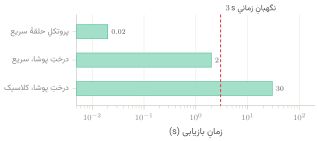
network recovery after a fibre cut against the 3 s watchdog of ch 34
recovery method recovery s fallback triggered?
redundant parallel networks 0.00 no
ring protocol (fast) 0.02 no
rapid spanning tree (typical) 2.00 no
classic spanning tree 30.00 YES
a network that heals in seconds is close to the watchdog;
one that heals in half a minute throws every battery PCS
into its fallback at each cut - recovery time and
watchdog are specified together, and the failover is
tested by pulling a fibre in the site acceptance testایده. حلقه فقط وقتی کمک میکند که پس از بریدنِ فیبر، درگاهِ بسته زود باز شود. دو شبکهٔ موازی (PRP) یا حلقهٔ بیوقفه (HSR) (STD-151) هر پیام را دو بار میفرستند و زمانِ بازیابیِ صفر دارند. پروتکلِ حلقهٔ سریع (STD-152) در چند ده میلیثانیه باز میکند. درختِ پوشای سریع حدودِ دو ثانیه میگیرد و درختِ پوشای کلاسیک حدودِ نیم دقیقه. نگهبانِ زمانیِ مبدلِ باتری پس از سه ضربانِ گمشده، یعنی سه ثانیه، به حالتِ پشتیبان میرود (بخش 34.3.5). شبکهای که در نیم دقیقه بازیابی شود، در هر بریدگی همهٔ مبدلها را به حالتِ پشتیبان میفرستد. زمانِ بازیابی و نگهبانِ زمانی با هم مشخص میشوند و جابهجایی به پشتیبان در آزمونِ پذیرشِ ساختگاه با کشیدنِ یک فیبر آزموده میشود. عددهای این جدول نمونههای رایجاند. زمانِ واقعی را اعلامیهٔ سازنده و آزمون تعیین میکنند.
35.4.6 نقشها و کمترین دسترسی
roles and rights on the SCADA (teaching; least privilege)
role view ack operate settings software
viewer x - - - -
operator x x x - -
maintenance x x x - -
control engineer x x x x x
vendor (remote, escorted) x - - - -
each person gets the smallest set of rights the job needs;
changing settings and loading software stay with named
engineers under management of change, and remote vendor
access is view-only unless a permit says otherwise (ch 36)ایده. هر کس کوچکترین مجموعهٔ حقهایی را میگیرد که کارش لازم دارد. این قاعدهٔ کمترین دسترسی است. بیننده فقط میبیند. اپراتور هشدار را تأیید میکند و فرمان میدهد. تغییرِ تنظیمها و بارگذاریِ نرمافزار با مهندسانِ نامدار و زیرِ مدیریتِ تغییر میماند (بخش 34.4.5). دسترسیِ دورِ سازنده فقط دیدن است، مگر آنکه مجوز چیز دیگری بگوید. ابزارهای این قاعده، مانندِ هویت، ثبتِ ورود و دسترسیِ دور، در فصلِ ۳۶ ساخته میشوند. وارسی: در جدول فقط مهندسِ کنترل ستونهای تنظیم و نرمافزار را دارد.
35.4.7 پذیرشِ اسکادا
acceptance of the SCADA (teaching counts)
test what it proves
point-to-point, all 300 hard-wired points field to HMI and back
network points, 2,200 of 22,000 by sample mapping, scaling
time alignment, events on two IEDs clocks agree
alarms: raise, clear, priority the alarm philosophy
failover: fibre pulled, server stopped recovery, buffers
data quality: stale, bad, substituted flags survive
every result is kept with the configuration fingerprint
and the test plan of IEC 62381 (STD-148): factory test,
site test, then the integration test with the grid
operator's control centreایده. پذیرش هر ادعای این فصل را با شاهد ثابت میکند. آزمونِ نقطهبهنقطه هر نقطهٔ سیمکشیشده را از میدان تا نمایشگر و برعکس وارسی میکند. نقطههای شبکهای، که دهها هزارند، با نمونه وارسی میشوند: نقشه و مقیاس روی یک نمونهٔ آماری، و نقطههای مهم همه. همترازیِ زمان با یک رخداد روی دو دستگاه سنجیده میشود. هشدارها با بالا رفتن، پاک شدن و اولویت آزموده میشوند. جابهجایی به پشتیبان با کشیدنِ فیبر و ایستاندنِ سرور. کیفیتِ داده با مقدارهای کهنه، نامعتبر و جایگزینشدهٔ کاشته. هر نتیجه با اثرانگشتِ پیکربندی نگه داشته میشود. ترتیب آزمونِ کارخانه، آزمونِ ساختگاه و آزمونِ یکپارچگی با مرکزِ کنترلِ بهرهبردار است (STD-148، فصلهای ۴۸ و ۵۰).
- هشت گونهٔ نمودار و پرسشِ هر کدام را بگویید.
- چرا یک دستگاه روی همهٔ نمودارها یک برچسب دارد؟
- تأخیر و باند مرده در قاعدهٔ هشدار هر کدام چه میکنند؟
- سه گامِ چرخهٔ مدیریتِ هشدار را نام ببرید.
- معادلهٔ 35.7 را توضیح دهید.
- چرا میانگیر در مبدأ است، نه در تاریخنگار؟
- در طرحِ نگهداری، کدام بخش بیشترین جا را میگیرد و چرا؟
- چرا زمانِ بازیابیِ شبکه و نگهبانِ زمانی با هم مشخص میشوند؟
- کمترین دسترسی را با دو نقش توضیح دهید.
- نقطههای سیمکشیشده و نقطههای شبکهای در پذیرش چگونه وارسی میشوند؟
- ترتیبِ آزمونهای کارخانه، ساختگاه و یکپارچگی چیست؟
35.4.8 نمودارِ منطقیِ نیروگاهِ P (مثالِ کارشده)
ایده. نمودارِ فیزیکی (شکل 35.5) میگوید کابلها کجا میروند. نمودارِ منطقی میگوید چه کسی با چه کسی حرف میزند. سادهترین شکلِ آن جدولی از مسیرهای مجاز است. هر مسیری که در جدول نیست بسته است.
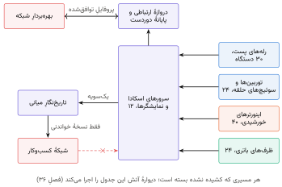
the logical diagram as a table of allowed paths (teaching)
from to allowed
substation IEDs SCADA servers yes: telecontrol
turbines SCADA servers yes: turbine data
PV inverters SCADA servers yes: inverter data
battery containers SCADA servers yes: battery data
SCADA servers historian yes: one way
historian business network yes: read copy only
business network SCADA servers NO
turbines PV inverters NO (no need)
grid operator gateway / RTU yes: agreed profile
7 of 9 listed paths allowed; every path not
listed is denied. The physical diagram says where cables
run; the logical one says who may talk to whom - and it
is the logical one the firewall rules of ch 36 implementمثال 35.17 (هفت از نُه) پرسش. نمودارِ منطقیِ نیروگاهِ P را از زیرشبکههای بخش 35.2.10 بکشید. کدام مسیرها مجازند و کدام نه؟
پاسخ. چهار ناحیهٔ میدانی (رلهها، توربینها، اینورترها، باتری) فقط با سرورهای اسکادا حرف میزنند. سرورها به تاریخنگارِ میانی یکسویه مینویسند. شبکهٔ کسبوکار فقط نسخهٔ خواندنیِ تاریخنگار را میبیند. بهرهبردارِ شبکه فقط با دروازهٔ ارتباطی و پروفایلِ توافقشده حرف میزند. از نُه مسیرِ فهرستشده هفت مجازند. شبکهٔ کسبوکار به سرورهای اسکادا راه ندارد و توربینها با اینورترها کاری ندارند.
تفسیر. همین جدول را دیوارهٔ آتشِ فصلِ ۳۶ اجرا میکند. هر سطرِ تازه درخواستِ تغییری با دلیل است. مسیری که دلیل ندارد، مانندِ توربین به اینورتر، بسته میماند حتی اگر «ضرری ندارد». وارسی: در جدولِ خروجی ۷ سطر با yes آغاز میشوند.
35.4.9 روند روی صفحه
a day of 1 s data on an 800-pixel trend (synthetic spikes of 5 s)
108 samples per pixel
every 108th sample drawn: spike visible in 4.5 % of cases
min and max of each pixel drawn: visible in 100 % of cases
a trend that decimates hides the short events an operator
most needs to see; the historian serves min/max (or every
point) for the screen's resolution, and the trend says
which it showsایده. صفحهٔ روند حدودِ ۸۰۰ نقطهٔ افقی دارد و یک روزِ دادهٔ یکثانیهای 86,400 مقدار. هر نقطهٔ صفحه ۱۰۸ مقدار را نشان میدهد. اگر روند فقط هر ۱۰۸امین مقدار را بکشد، جهشی پنجثانیهای فقط در 4.5 % موارد دیده میشود. اگر کمینه و بیشینهٔ هر نقطه را بکشد، همیشه دیده میشود. اپراتور بیش از همه به همین رخدادهای کوتاه نیاز دارد. پس تاریخنگار برای وضوحِ صفحه کمینه و بیشینه یا همهٔ نقطهها را میفرستد و روند میگوید کدام را نشان میدهد. صفحههای نمایشگرِ اپراتور هم با همین منطق طراحی میشوند: خاکستری برای عادی، رنگ فقط برای ناهنجاری، و کیفیت و سن کنارِ هر عدد (بخش 35.5.5). وارسی: \(5/108 = 4.6\,\%\).
35.4.10 سلسلهمراتبِ صفحههای اپراتور
the hierarchy of operator displays (teaching)
level displays
1 plant overview 1
2 areas: substation, wind, PV, battery, auxiliaries, met 6
3 equipment: 12 turbines, 10 PV blocks, 8 containers,
2 transformers, 8 feeders 40
4 diagnostics: one per equipment type 8
55 displays, each reached from the one above in one click
the overview shows the plant's state and what needs action;
detail is one level down, never crowded onto the overview,
and every value shows its quality and age (lab D)ایده. صفحههای اپراتور چهار تراز دارند. ترازِ یک نمای کلیِ نیروگاه است: وضعیت و آنچه اقدام میخواهد. ترازِ دو شش ناحیه است: پست، باد، خورشید، باتری، بارهای کمکی و هواشناسی. ترازِ سه هر تجهیز را نشان میدهد، یعنی ۴۰ صفحه برای توربینها، بلوکهای خورشیدی، ظرفها، ترانسفورماتورها و فیدرها. ترازِ چهار برای عیبیابیِ هر گونه تجهیز است. روی هم ۵۵ صفحه، و هر کدام با یک کلیک از ترازِ بالاتر در دسترس است. جزئیات یک تراز پایینترند و هرگز روی نمای کلی انباشته نمیشوند. هر مقدار کیفیت و سنش را نشان میدهد (بخش 35.5.5). وارسی: \(1 + 6 + 40 + 8 = 55\).
35.4.11 گزارشِ روزانه از تاریخنگارِ ناقص
daily energy of a partly cloudy day from a historian with gaps
(synthetic minutes)
true energy 674.8 MWh
gap skipped MWh interpolated MWh
2 % of minutes at random 663.8 674.8
30 minutes at midday 653.3 680.6
skipping a gap understates energy by the share missing;
interpolating repairs short random gaps almost exactly
but draws a straight line across the cloud hidden in the
long gap and overstates by 5.7 MWh - a report states its
data completeness and how each gap was filled, and
settlement uses the meter, not the historian (ch 37)مثال 35.18 (ابری که دیده نشد) پرسش. انرژیِ یک روزِ نیمهابری 674.8 MWh است. دو گونه کمبودِ داده داریم: دو درصد از دقیقهها تصادفی، و سی دقیقه در میانهٔ روز که درونش ابری گذشته است. انرژیِ گزارششده در هر حالت با نادیده گرفتنِ کمبود و با درونیابیِ خطی چقدر است؟ (دادهها ساختگیاند.)
پاسخ. کمبودِ تصادفی: نادیده 663.8 و درونیابی 674.8 MWh. کمبودِ سیدقیقهای: نادیده 653.3 و درونیابی 680.6 MWh.
تفسیر. نادیده گرفتن به اندازهٔ سهمِ کمبود کمبرآورد میکند. درونیابی کمبودهای کوتاهِ تصادفی را تقریباً دقیق پر میکند. ولی روی کمبودِ بلند خطی راست از روی ابرِ پنهان میکشد و 5.7 MWh بیشبرآورد میکند. هر گزارش کامل بودنِ داده و روشِ پر کردنِ هر کمبود را میگوید. تسویهٔ مالی با کنتور است، نه با تاریخنگار (فصلِ ۳۷). وارسی: \(680.6 - 674.8 = 5.8\)؛ اختلاف با 5.7 از گرد کردن است.
- نمودارِ فیزیکی و منطقی هر کدام به کدام پرسش پاسخ میدهند؟
- چرا مسیری که «ضرری ندارد» بسته میماند؟
- چرا روندِ کاهشیافته جهشهای کوتاه را پنهان میکند؟
- نمایشگرِ اپراتور کنارِ هر عدد چه نشان میدهد؟
- نادیده گرفتن و درونیابیِ کمبودِ داده هر کدام چه خطایی دارند؟
- چرا تسویه با کنتور است، نه با تاریخنگار؟
35.4.12 سیلِ هشدار پس از قطعِ یک فیدر
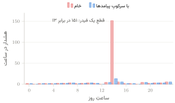
an alarm flood after a feeder trip (synthetic day)
normal hours: 2.0 alarms an hour on average
hour of the trip, raw: 151 alarms
with consequence alarms suppressed by the feeder state: 13
the trip of one feeder raises every inverter, transformer
and communication alarm behind it; suppressing what follows
from a known state leaves the first cause and what needs
action - each suppression is designed, documented and
tested like an alarm, and shelved alarms are listedمثال 35.19 (صدوپنجاهویک در برابرِ سیزده) پرسش. در روزی عادی حدودِ دو هشدار در ساعت میآید. ساعتِ ۱۴ یک فیدرِ 33 kV قطع میشود و هر اینورتر، ترانسفورماتور و پیوندِ ارتباطیِ پشتِ آن هشدار میدهد. در آن ساعت چند هشدار میآید؟ اگر هشدارهایی که از وضعیتِ «فیدر باز» نتیجه میشوند سرکوب شوند چطور؟ (دادهها ساختگیاند.)
پاسخ. 151 هشدار بیسرکوب و 13 هشدار با سرکوبِ هشدار بر پایهٔ وضعیت.
تفسیر. سرکوب علتِ نخست و آنچه را اقدام میخواهد نگه میدارد و پیامدهای شناخته را پنهان میکند. هر سرکوب مانندِ یک هشدار طراحی، مستند و آزموده میشود. هشدارهای کنارگذاشته فهرست میشوند و مهلت دارند، تا هشداری برای همیشه خاموش نماند. وارسی: \(151 - 138 = 13\).
35.4.13 ردهٔ اولویت و وقتِ اپراتور
the priority mix of the alarm list, before and after review
priority draft reviewed
high 800 120
medium 700 380
low 500 1100
draft: 40 % high; reviewed: 8 % high
operator's time for the flood of 151 alarms at 30 s each: 76 min
for the 13 left after suppression: 6.5 min
when most alarms are 'high', priority tells the operator
nothing; the review gives each alarm a consequence and a
time to act, from which its priority follows (teaching
targets are set in the alarm philosophy, not here)ایده. فهرستِ پیشنویسِ هشدارها چهل درصد «بالا» دارد. وقتی بیشترِ هشدارها «بالا» باشند، اولویت چیزی به اپراتور نمیگوید. بازنگری برای هر هشدار پیامد و زمانِ اقدام را تعیین میکند و اولویت از آنها نتیجه میشود. پس از بازنگری، هشت درصد «بالا» هستند. وقتِ اپراتور هم محدود است. با سی ثانیه برای هر هشدار، سیلِ ۱۵۱ هشداری ۷۶ دقیقه میگیرد و ۱۳ هشدارِ پس از سرکوب 6.5 دقیقه. هدفهای آموزشی در فلسفهٔ هشدار تعیین میشوند، نه در این کتاب (STD-153). وارسی: \(151 \times 30 / 60 = 75.5\) دقیقه.
35.4.14 نقطه و زمانِ بازیابیِ سرورها
what a server loss costs in data (teaching)
method data lost a time restore h
daily backup 12.0 h 8.0
hourly snapshots 0.5 h 4.0
replicated pair 0.0 h 0.1
with 0.5 losses a year, a daily backup loses about 6 h
of data a year on average
the recovery point (how much data may be lost) and the
recovery time (how long the restore takes) are set as
requirements; buffers at the source (lesson C) refill
most of the gap, and a restore is tested, not assumedایده. دو عدد خواستههای بازیابیِ سرورهای اسکادا را میگویند. نقطهٔ بازیابی این است که چقدر داده ممکن است گم شود. زمانِ بازیابی این است که برگرداندن چقدر طول میکشد. نسخهٔ پشتیبانِ روزانه بهطورِ میانگین نیم روز داده را در هر بار گم میکند. با نیم بار در سال، این حدودِ شش ساعت در سال است. جفتِ همانندسازیشده تقریباً هیچ دادهای گم نمیکند. میانگیرهای مبدأ (بخش 35.4.3) بیشترِ شکاف را پر میکنند. برگرداندن آزموده میشود، فرض نمیشود (بخش 34.4.13). وارسی: \(0.5 \times 12 = 6\) ساعت.
35.4.15 جابهجاییِ سرورِ اصلی و پشتیبان
the main SCADA server fails: the standby takes over (teaching)
failure detected after 3 s, take-over 2 s: 5 s without
a live screen
data in that gap: kept in the devices' and gateways'
buffers and sent when the standby asks
commands in that gap: refused, not queued - an old
command must not run five seconds late
switch-over is tested in the site test by stopping the
main server, with a recorded event before, during and
after; the alarm list, shelving and operator logins
must come across, not only the valuesایده. اگر سرورِ اصلی بیفتد، سه ثانیه طول میکشد تا خرابی آشکار شود و دو ثانیه تا پشتیبان کار را بگیرد. پنج ثانیه صفحهٔ زنده نیست. دادههای این پنج ثانیه در میانگیرِ دستگاهها و دروازهها میمانند و وقتی پشتیبان بخواهد فرستاده میشوند. فرمانهای این پنج ثانیه رد میشوند، نه صف. فرمانی کهنه نباید پنج ثانیه دیرتر اجرا شود. این آزمون در آزمونِ ساختگاه با ایستاندنِ سرورِ اصلی اجرا میشود. فهرستِ هشدارها، هشدارهای کنارگذاشته و ورودِ اپراتورها هم باید منتقل شوند، نه فقط مقدارها.
35.4.16 نگهداشتِ زمان وقتی ماهواره گم میشود
the grandmaster loses its satellite fix: holdover (teaching)
oscillator drift time to drift 1 ms
temperature-compensated 1000 ppb 0.3 h
oven-controlled 10 ppb 27.8 h
rubidium 0.1 ppb 2777.8 h
a lost fix is an alarm; the holdover time of the chosen
oscillator must cover the repair of the receiver or its
antenna, and the time stamps carry the 'synchronised'
flag until the drift could exceed the needایده. اگر گیرندهٔ ساعتِ اصلی ماهواره را گم کند، ساعت با نوسانسازِ خودش ادامه میدهد. این نگهداشتِ زمان است. با رانشِ 1000 ppb، در کمتر از نیم ساعت یک میلیثانیه دور میشود. با 10 ppb حدودِ یک روز و با 0.1 ppb حدودِ چهار ماه دوام میآورد. گم شدنِ ماهواره خودش یک هشدار است. مدتِ نگهداشتِ نوسانساز باید تعمیرِ گیرنده یا آنتن را بپوشاند. برچسبهای زمان پرچمِ «همگام» را فقط تا وقتی دارند که رانش هنوز از نیاز نگذشته است (بخش 35.2.9). وارسی: \(10^{-3} / (10 \times 10^{-9}) = 10^5\,\text{s} = 27.8\,\text{h}\).
35.4.17 کامل بودنِ داده برای هر برچسب
data completeness of every tag over a month (synthetic)
median completeness 99.96 %
tags below 99 %: 235
tags below 90 %: 91
a plant-wide average hides the few tags that are nearly
empty - the dead devices; completeness is reported per
tag and per device, and the worst list goes to
maintenance every week (ch 37 uses it to judge data)ایده. میانهٔ کامل بودنِ داده در یک ماهِ ساختگی 99.96 % است. این عدد خوب به نظر میرسد، ولی 235 برچسب زیرِ ۹۹ درصد و 91 برچسب زیرِ ۹۰ درصد هستند. اینها دستگاههای مردهاند. میانگینِ کلِ نیروگاه همین چند برچسبِ تقریباً خالی را پنهان میکند. پس کامل بودن برای هر برچسب و هر دستگاه گزارش میشود و فهرستِ بدترینها هر هفته به نگهداری میرود. فصلِ ۳۷ با همین عدد داوری میکند که کدام داده برای تحلیل خوب است.
35.4.18 فشردهسازیِ تاریخنگار
historian compression of a slowly moving signal (synthetic hour)
method stored points largest error K
deadband 0.1 K (as stored) 619 0.22
swinging door 0.1 K 563 0.10
deadband 0.3 K (as stored) 63 0.26
swinging door 0.3 K 75 0.30
deadband 0.7 K (as stored) 27 1.03
swinging door 0.7 K 30 0.70
the door keeps the points where the trend bends and draws
straight lines between them, and its error never leaves
the band it is given; a deadband read back with straight
lines can miss by half again its setting (1.03 K for
0.7 K). Method and setting are chosen together from the
instrument's uncertainty and recorded with the tagایده. باند مرده (بخش 35.2.13) مقداری را نگه میدارد که به اندازهٔ باند از آخرین مقدارِ نگهداشته دور شود. روشِ خطِ راست (خانوادهٔ «درِ گردان») نقطههایی را نگه میدارد که روند در آنها خم میشود و میانشان خطِ راست میکشد. خطایش هرگز از نوارِ دادهشده بیرون نمیرود. باند مردهای که با خطِ راست بازخوانی شود، میتواند تا یکونیم برابرِ تنظیمش خطا کند: 1.03 K برای 0.7 K. روش و تنظیمِ فشردهسازی با هم و از عدمِ قطعیتِ ابزار انتخاب و با برچسب ثبت میشوند. وارسی: خطای خطِ راست در هر سه تنظیم برابرِ تنظیم است: 0.10، 0.30 و 0.70 K.
35.4.19 کهنگیِ نقطههایی که فقط با تغییر میفرستند
staleness of points that send only on change (synthetic, 1,000 points)
integrity scan every 15 min; stale limit points flagged stale
10 min 792
20 min 0
60 min 0
with report-by-exception a quiet value is old but true;
the integrity scan refreshes it, so the stale limit is
set above the scan period - a limit below it flags
hundreds of healthy points (lab D used 10 s because its
synthetic points were sent every second)ایده. نقطهای که فقط با تغییر گزارش میشود، اگر آرام باشد، مقدارش پیر ولی درست است. پویشِ درستیِ پانزدهدقیقهای آن را تازه میکند. پس حدِ کهنگیِ این نقطهها باید بالاتر از دورهٔ پویش باشد. با حدِ ده دقیقه، 792 نقطهٔ سالم از هزار نقطه «کهنه» علامت میخورند. با حدِ بیست دقیقه هیچکدام. آزمایشگاهِ ت حدِ ده ثانیه داشت، زیرا نقطههای ساختگیاش هر ثانیه فرستاده میشدند (بخش 35.5.3). حدِ کهنگی ویژگیِ هر نقطه است و در فهرستِ نقطهها میآید. وارسی: هیچ نقطهای بیش از پانزده دقیقه بیتازهشدن نمیماند، پس حدِ بیست دقیقه هیچکدام را نمیگیرد.
35.4.20 دیسکهای تاریخنگار
historian disks for the plant's life (teaching)
data over 25 years: 12.2 TB (lesson C)
mirrored, with 30 % free space kept: 34.9 TB raw
plus an off-site copy of the aggregates, refreshed weekly
disks fail and age faster than the plant: the plan buys
for five years at a time and migrates the archive - a
migration is tested by reading old data backایده. دوازده ترابایتِ مثال 35.16 با آینه شدن و سی درصد جای خالی 34.9 TB دیسکِ خام میخواهد. یک نسخهٔ بیرون از ساختگاه هم از خلاصهها هر هفته تازه میشود. دیسکها زودتر از نیروگاه خراب و کهنه میشوند. طرح برای پنج سال خرید میکند و بایگانی را جابهجا میکند. هر جابهجایی با بازخواندنِ دادهٔ کهنه آزموده میشود. وارسی: \(12.2 \times 2 / 0.7 = 34.9\).
35.4.21 چند نقطهٔ شبکهای آزموده شود
how many network points to test, accepting on zero faults (95 %)
fault rate to detect sample size
1.0 % 299
0.5 % 598
0.1 % 2,995
a sample of about 300 shows, with 95 % confidence, that
fewer than 1 % of the 22,000 network points are wrong if
it finds none; lesson C's 2,200 detects 0.14 %. Every
hard-wired point and every point used by control,
protection or the grid operator is tested in fullایده. اگر \(n\) نقطه بیخطا آزموده شوند، با اطمینانِ 95 % میگوییم سهمِ خطا کمتر از \(p\) است، به شرطِ آنکه \((1 - p)^n \le 0.05\) باشد. برای یک درصد 299 نقطه کافی است و برای یکدهم درصد 2,995 نقطه. نمونهٔ 2,200 نقطهایِ بخش 35.4.7 سهمِ 0.14 % را آشکار میکند. نمونهگیری فقط برای نقطههای عادیِ شبکه است. هر نقطهٔ سیمکشیشده و هر نقطهای که کنترل، حفاظت یا بهرهبردارِ شبکه به کار میبرد، کامل آزموده میشود. وارسی: \(\ln 0.05 / \ln 0.99 = 298.1\)، پس 299.
35.4.22 دفترِ رخدادها در عمرِ نیروگاه
the sequence-of-events and alarm log over the plant's life
2,000 events a day of 200 bytes for 25 years: 3.6 GB
small next to the 12 TB of measurements (lesson C): the
event log is kept for the plant's life, with operator
actions and acknowledgements, because it answers 'what
happened in what order, and who did what' long afterایده. دفترِ دنبالهٔ رویدادها و هشدارها، با دو هزار رخدادِ ۲۰۰ بایتی در روز، در ۲۵ سال فقط 3.6 GB میشود. این در برابرِ دوازده ترابایتِ اندازهگیریها ناچیز است. پس دفترِ رخدادها، با کارهای اپراتور و تأییدهایش، برای کلِ عمرِ نیروگاه نگه داشته میشود. این دفتر سالها بعد هم پاسخ میدهد که چه چیزی به چه ترتیبی رخ داد و چه کسی چه کرد. وارسی: \(2000 \times 200 \times 365 \times 25 = 3.65 \times 10^9\,\text{B}\).
- سرکوبِ هشدار بر پایهٔ وضعیت چه چیزی را نگه میدارد و چه چیزی را پنهان میکند؟
- چرا هشدارِ کنارگذاشته مهلت دارد؟
- وقتی بیشترِ هشدارها «بالا» هستند چه مشکلی پیش میآید؟
- نقطه و زمانِ بازیابی چه فرقی دارند؟
- چرا فرمانهای زمانِ جابهجاییِ سرور رد میشوند و صف نمیشوند؟
- نگهداشتِ زمان چیست و مدتش باید چه چیزی را بپوشاند؟
- چرا کامل بودنِ داده برای هر برچسب گزارش میشود؟
- روشِ خطِ راست و باند مرده چه فرقی دارند؟
- چرا حدِ کهنگیِ نقطههای با تغییر از دورهٔ پویشِ درستی بالاتر است؟
- دیسکِ خامِ تاریخنگار چگونه از دادهٔ لازم به دست میآید؟
- برای آشکار کردنِ یک درصد خطا چند نقطه بیخطا آزموده میشود و کدام نقطهها همه آزموده میشوند؟
35.4.23 شبکه، داده و پذیرش در عدد: دورِ دیگر
این درسها چند تصمیمِ طراحیِ دیگر را با عدد میسنجند: حلقهای که ترمیم میشود، پروندههای بزرگی که روی همان حلقه میروند، ضربانِ پیوندِ اعلامِ حریق، ثباتهای ۱۶ بیتیِ دروازهٔ ارتباطی، کیفیتِ یک جمع، طولِ آزمونهای نقطهبهنقطه، رفتارِ کنترلگر هنگامِ قطعِ ارتباط، پرسشهای گزارش، و آزمونهای همکنشپذیری. همه با داده و مقدارهای آموزشیاند و به هیچ سامانهٔ زندهای وصل نمیشوند.
پرونده: companion/ch35/examples_s.py
35.4.24 ترمیمِ حلقه و آنچه هر کارکرد از دست میدهد
ایده. وقتی یک پیوندِ حلقه میشکند، سوئیچها راهِ دیگر را باز میکنند (بخش 35.2.8). این کار زمان میبرد، و در آن زمان پیامها گم میشوند. هر کارکرد شکافِ مجازِ خودش را دارد:
what a ring break costs while the ring heals (teaching rates)
recovery time messages lost: protection telecontrol historian
20 ms 20 0 2
200 ms 200 2 20
2000 ms 2000 20 200
tolerable gap: protection 4 ms, telecontrol 1 s, historian
60 s (buffered)
no ring recovery is fast enough for protection messages,
which therefore run on paths that need no recovery
(duplicated, both sent at once - ch 34, ch 35 lesson A);
telecontrol rides through a 200 ms heal, not a 2 s one;
the historian rides through all of them from its bufferمثال 35.20 (۲۰ میلیثانیه برای حفاظت بسیار است) پرسش. حلقهای در ۲۰، ۲۰۰ یا ۲۰۰۰ میلیثانیه ترمیم میشود. برای پیامهای حفاظتی (هزار در ثانیه، شکافِ مجازِ ۴ میلیثانیه)، فرمانهای کنترلِ دور (ده در ثانیه، شکافِ مجازِ یک ثانیه) و نمونههای تاریخنگار (صد در ثانیه، با بافر) کدام بس است؟ (نرخهای آموزشی.)
پاسخ. برای حفاظت هیچکدام: حتی ۲۰ میلیثانیه ۲۰ پیام را میبرد. برای کنترلِ دور، ۲۰ و ۲۰۰ میلیثانیه بس است و ۲ ثانیه نه. برای تاریخنگار همه، چون بافرش شکاف را پر میکند.
تفسیر. پیامهای حفاظتی روی راهی میروند که اصلاً ترمیم لازم ندارد: هر پیام همزمان از دو راه فرستاده میشود و گیرنده اولی را برمیدارد (بخش 35.2.8). کارکردهای دیگر با ترمیمِ حلقه کنار میآیند، به شرطی که زمانِ ترمیم از شکافِ مجازشان کمتر باشد. پس زمانِ ترمیم یک عددِ طراحی است و در آزمونِ پذیرشِ شبکه با بریدنِ عمدیِ یک پیوند اندازهگیری میشود (بخش 35.8.3). وارسی: \(10 \times 2 = 20\) فرمانِ گمشده در ۲ ثانیه.
35.4.25 پروندههای پایشِ وضعیت روی حلقهٔ توربینها
condition-monitoring files on the 100 Mbit/s turbine ring
live data of 12 turbines: 0.19 Mbit/s (0.2 % of the ring)
all 12 files at once, 60 % of the ring 1.3 min
one file at a time, 20 % of the ring 4.0 min
either way the live data keeps its share if the files go
in a lower priority class (lesson P, priority); without
priorities, 12 files at once fill the ring and the 1 s
telemetry queues behind them. Bulk files are scheduled
at night and limited in rate - a setting written in the
network design, not left to the maker's defaultایده. دادهٔ زندهٔ دوازده توربین کمتر از یکدهم درصدِ حلقه است. پروندههای لرزشسنجیِ سامانهٔ پایشِ وضعیت، هر کدام ۵۰ مگابایت، با هم حلقه را پر میکنند. اگر اولویتی نباشد، دادهٔ یکثانیهای پشتِ آنها صف میبندد. دو تنظیمِ ساده کافی است: پروندهها در ردهٔ اولویتِ پایینتر (بخش 35.2.16) و فرستادنشان در شب با سقفِ نرخ. این تنظیم در طرحِ شبکه نوشته میشود و به پیشفرضِ سازنده واگذار نمیشود.
35.4.26 ضربانِ پیوندِ اعلامِ حریق
ایده. اسکادا وضعیتهای تأییدشدهٔ تابلوی اعلامِ حریق را نشان میدهد (بخش 35.6.1). برای آنکه بداند هنوز دیدِ تابلو را دارد، ضربان (به انگلیسی heartbeat) میفرستد. اگر چند ضربانِ پیاپی نرسد، «پیوند قطع است» اعلام میشود. احتمالِ گم شدنِ یک پیام هرگز صفر نیست:
\[ N_\text{false} = \frac{T_\text{year}}{T_\text{hb}}\, p^{\,m} \tag{35.8}\]
در اینجا \(T_\text{hb}\) دورهٔ ضربان، \(m\) شمارِ ضربانهای گمشدهٔ پیاپی و \(p\) احتمالِ گم شدنِ یک پیام است.
loss of the fire-alarm link found by a heartbeat (teaching)
period s missed detection s false 'link lost' a year
10 1 10 3.15e+03
10 3 30 0.00315
2 3 6 0.0158
2 5 10 1.58e-08
with one loss in a thousand, declaring the link lost on a
single missed heartbeat gives thousands of false alarms a
year; three in a row gives almost none and still finds a
real break in 6-30 s. The fire panel keeps its own alarms
and authority either way; SCADA only shows that its view
of the panel is lost (lesson E)مثال 35.21 (یک ضربانِ گمشده، هزاران هشدار) پرسش. با احتمالِ گم شدنِ یک در هزار، ضربانِ ۱۰ ثانیهای و اعلامِ قطع پس از یک یا سه ضربانِ گمشده: زمانِ آشکارسازی و هشدارهای نادرستِ سالانه را بیابید.
پاسخ. با یک ضربان: ۱۰ ثانیه و حدودِ ۳٬۱۵۰ هشدارِ نادرست در سال. با سه ضربان: ۳۰ ثانیه و ۰٫۰۰۳ هشدار در سال، یعنی هیچ.
تفسیر. سه ضربانِ پیاپی هشدارهای نادرست را عملاً صفر میکند و قطعِ واقعی را در نیم دقیقه نشان میدهد. ضربانِ دوثانیهای همان را در ۶ ثانیه میدهد. تابلوی حریق در همهٔ این حالتها هشدارها و اختیارِ خودش را نگه میدارد. اسکادا فقط نشان میدهد که دیدش از تابلو قطع شده است. آنچه پس از آن رخ میدهد، مثلاً بازدیدِ تابلو، در روشِ اتاقِ کنترل نوشته میشود (بخش 35.6.4). وارسی: \(3\,153\,600 \times 10^{-3} = 3\,154\) و \(\times 10^{-9} = 0.003\).
35.4.27 ثباتهای ۱۶ بیتی در دروازهٔ ارتباطی
ایده. بسیاری از دروازهها مقدارها را در ثباتهای ۱۶ بیتیِ علامتدار میفرستند، با یک ضریبِ مقیاس (بخش 35.3.1). بزرگترین مقدار \(32\,767\) ضربدر ضریب است:
signed 16-bit registers in a gateway: scale against range (teaching)
signal unit scale largest value fits? step
active power MW 0.010 327.67 yes 0.01 MW
reactive power Mvar 0.010 327.67 yes 0.01 Mvar
frequency Hz 0.001 32.77 NO 0.001 Hz
voltage at POC kV 0.001 32.77 NO 0.001 kV
energy today MWh 0.100 3276.70 yes 0.1 MWh
frequency at 0.001 Hz and voltage at POC at 0.001 kV do not fit:
50.000 Hz would wrap to a negative number. The fix is a
scale that fits (0.01 Hz, 0.1 kV), an offset agreed by
both ends, or a 32-bit value - and the choice is written
in the interface list, with a test value at each end of
the range in the acceptance test (lesson B, registers)مثال 35.22 (۵۰ هرتزی که منفی میشود) پرسش. فرکانس با ضریبِ \(0.001\,\text{Hz}\) و ولتاژِ نقطهٔ اتصال با ضریبِ \(0.001\,\text{kV}\) در ثباتهای ۱۶ بیتی نوشته شدهاند. چه رخ میدهد؟
پاسخ. بزرگترین مقدار \(32.767\) است. هیچکدام جا نمیشوند.
تفسیر. \(50\,000\) شمارش از \(32\,767\) بیشتر است و در ثباتِ علامتدار به عددی منفی میپیچد. گیرنده «فرکانسِ منفی» میبیند، یا اگر نوع را بیعلامت بخوانَد، عددی درست ولی تصادفی. چاره یکی از سه کار است: ضریبی که جا شود (\(0.01\,\text{Hz}\)، \(0.1\,\text{kV}\))، یک جابهجاییِ مورد توافقِ دو طرف (مثلاً فرکانس منهای ۴۵ هرتز)، یا یک مقدارِ ۳۲ بیتی. انتخاب در فهرستِ واسط نوشته میشود و در آزمونِ پذیرش با یک مقدارِ آزمون در هر سرِ بازه وارسی میشود. وارسی: \(32\,767 \times 0.001 = 32.77 < 50\).
35.4.28 کیفیتِ یک جمع
plant wind total when 2 of 12 turbine values are invalid
sum of the 10 good values: 40.8 MW quality BAD
with the 2 replaced by the mean of 10: 49.0 MW quality SUBSTITUTED
true total (known here, synthetic): 49.2 MW
a total that silently drops two turbines is 17 % low and
looks good; a substituted total is within 0.2 MW and says
so. The rule - substitute or flag, and which quality the
total carries - is part of the data model, written once
and used by the HMI, the historian and the PPC alikeایده. توانِ کلِ مزرعه جمعِ دوازده توربین است. اگر مقدارِ دو توربین نامعتبر باشد، سه راه هست: جمعِ ده مقدارِ خوب، که ۱۷٪ کم است و خوب به نظر میرسد؛ جایگزینیِ دو مقدار با میانگینِ ده توربینِ دیگر، که حدودِ ۰٫۲ مگاوات خطا دارد و برچسبِ «جایگزینشده» میگیرد؛ یا اعلامِ کلِ جمع بهعنوانِ «بد». قاعده بخشی از مدلِ داده است (بخش 35.3.2). یک بار نوشته میشود و نمایشگر، تاریخنگار و کنترلگرِ نیروگاه همه آن را به کار میبرند. جمعی که بیصدا دو توربین را جا میاندازد، بدترین گزینه است.
35.4.29 طولِ آزمونهای نقطهبهنقطه
point-to-point checks of 3,200 points at site acceptance (teaching)
4 min a point, 2 teams of two, 8-hour days: 13.3 days
8 % fail, found, fixed and retested at 14 min each: 3.7 days
total 17.1 days on site, plus waiting for fixes
the factory test (lesson P) already checked the logic; at
site each point is checked from its terminal to the
operator's display and to the grid operator, with the
test values and results recorded per pointایده. ۳٬۲۰۰ نقطه با چهار دقیقه برای هر کدام و دو تیم، ۱۳٫۳ روزِ کاری است. ۸٪ رد میشوند و با پیدا کردن و درست کردن و آزمونِ دوباره ۳٫۷ روزِ دیگر میبرند. آزمونِ کارخانه منطق را پیشتر وارسی کرده است (بخش 35.8.3). در ساختگاه هر نقطه از ترمینالش تا نمایشگرِ اپراتور و تا بهرهبردارِ شبکه آزموده میشود. مقدارِ آزمون و نتیجه برای هر نقطه ثبت میشود (بخش 35.4.7). برنامهٔ راهاندازی (فصل 50) این روزها را با انتظار برای چارهها در خود دارد.
35.4.30 رفتارِ کنترلگر هنگامِ قطعِ ارتباط
the grid operator's set point is ramping down at 0.5 MW/s when
the link fails (teaching values)
behaviour of the PPC deviation after 60 s after 5 min
hold the last set point +30.0 MW +40.0 MW
hold 60 s, then fall back to the schedule +30.0 MW +20.0 MW
go to zero output -50.0 MW -40.0 MW
no behaviour is right for every case: holding keeps the
plant steady but misses the ramp, zero output is safe for
the plant and a large disturbance for the grid. The
behaviour and its timers are agreed with the grid
operator (U-115) and tested at acceptance (ch 20, ch 34)مثال 35.23 (نگه داشتن، برگشتن یا صفر؟) پرسش. بهرهبردارِ شبکه نقطهٔ تنظیم را با شیبِ ۰٫۵ مگاوات بر ثانیه از ۸۰ به ۴۰ مگاوات پایین میآورد که پیوند قطع میشود. سه رفتارِ کنترلگرِ نیروگاه را پس از ۶۰ ثانیه و پنج دقیقه مقایسه کنید. (مقدارهای آموزشی.)
پاسخ. نگه داشتنِ آخرین نقطه: ۳۰+ و ۴۰+ مگاوات. نگه داشتن ۶۰ ثانیه و سپس برگشت به برنامه: ۳۰+ و ۲۰+. صفر کردن: ۵۰- و ۴۰- مگاوات.
تفسیر. هیچ رفتاری برای همهٔ حالتها درست نیست. نگه داشتن نیروگاه را آرام نگه میدارد اما شیب را از دست میدهد. صفر کردن برای نیروگاه امن است و برای شبکه یک آشفتگیِ بزرگ. رفتار و زمانسنجهایش با بهرهبردارِ شبکه توافق میشوند (U-115) و در پذیرش آزموده میشوند (فصل 20). وارسی: \(80 - 0.5 \times 60 = 50\) و \(80 - 50 = 30\).
35.4.31 پرسشهای گزارش روی دادهٔ خام و تجمیعی
rows read for one monthly report of 500 tags
from 1-second raw data: 1,339,200,000 rows
from 10-minute aggregates: 2,232,000 rows
the aggregates read 600 times fewer rows; reports and
dashboards read aggregates made by the historian, and
raw data is read only for an event investigation. The
aggregates keep min, max, mean and a quality count, so
nothing the report needs is lost (lesson M, trend)ایده. گزارشِ ماهانهٔ ۵۰۰ برچسب از دادهٔ یکثانیهای بیش از یک میلیارد سطر میخوانَد. از تجمیعهای دهدقیقهای ۶۰۰ برابر کمتر. گزارشها و داشبوردها تجمیعهایی را میخوانند که تاریخنگار میسازد. دادهٔ خام فقط برای بررسیِ یک رویداد خوانده میشود. تجمیع کمینه، بیشینه، میانگین و شمارِ کیفیت را نگه میدارد، پس چیزی که گزارش لازم دارد گم نمیشود (بخش 35.4.9). فصلِ ۳۷ همین تجمیعها را برای شاخصهای عملکرد به کار میبرد.
35.4.32 همکنشپذیری با و بیپروفایل
interoperability tests for 6 device makers and 12 functions
every pair of makers tested together: 180 test cases
each maker tested once against an agreed profile: 72
the protocol's name says how bytes travel, not which data
objects, options and timings a device uses; a profile
fixes those choices, each device is tested against it,
and a short integration test then confirms the plant -
instead of testing every pair (lesson B, profiles)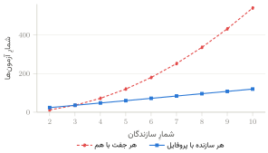
ایده. نامِ پروتکل میگوید بایتها چگونه میروند، نه اینکه دستگاه کدام شیءهای داده، گزینهها و زمانبندیها را به کار میبرد. با شش سازنده، آزمودنِ هر جفت ۱۸۰ آزمون میخواهد و با ده سازنده ۵۴۰. یک پروفایلِ توافقشده آن انتخابها را ثابت میکند. هر دستگاه یک بار با پروفایل آزموده میشود، و یک آزمونِ کوتاهِ یکپارچهسازی نیروگاه را تأیید میکند (بخش 35.3.5). شمارِ آزمونها با شمارِ سازندگان خطی رشد میکند، نه با مربعشان.
35.4.33 ترتیبِ رویدادها و دقتِ ساعتها
ایده. دو رله، یا یک رله و کلیدی که قطع کرد، چند میلیثانیه با هم فاصله دارند. هر کدام رویدادش را با ساعتِ خودش مهر میزند (بخش 35.2.9). اگر خطای ساعتها با فاصلهٔ رویدادها هماندازه باشد، ترتیبِ ثبتشده ممکن است وارونه باشد. با دو خطای مستقلِ نرمال با انحرافِ معیارِ \(\sigma\)، احتمالِ وارونگی برای فاصلهٔ \(\Delta t\) چنین است:
\[ P_\text{rev} = \Phi\!\left(-\frac{\Delta t}{\sqrt{2}\,\sigma}\right) \tag{35.9}\]
chance two events from two relays are logged in the wrong order
(each clock with an independent normal error; teaching values)
(standard error: NTP over the WAN 1 ms, in the plant LAN
0.2 ms, PTP to the relays 1 us)
true gap ms NTP, WAN NTP, LAN PTP
0.5 0.3618 0.0385 0.0000
1.0 0.2398 0.0002 0.0000
2.0 0.0786 0.0000 0.0000
5.0 0.0002 0.0000 0.0000
10.0 0.0000 0.0000 0.0000
a breaker and the relay that tripped it act a few ms apart;
with WAN time their order is wrong 36 % of the time at
0.5 ms and once in 13 at 2 ms; with PTP it is never wrong.
The sequence of events that a fault investigation needs
is a design requirement on the time chain (lesson A)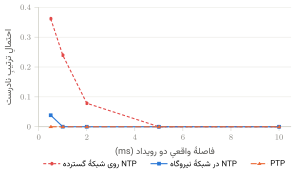
مثال 35.24 (رلهای که پس از کلید قطع کرد) پرسش. رله و کلید دو میلیثانیه فاصله دارند. با ساعتِ همگامشده روی شبکهٔ گسترده (\(\sigma = 1\,\text{ms}\))، در شبکهٔ نیروگاه (\(0.2\,\text{ms}\)) و با پروتکلِ زمانِ دقیق (\(1\,\mu\text{s}\))، احتمالِ ثبتِ وارونه چقدر است؟
پاسخ. ۷٫۹٪، عملاً صفر، و صفر.
تفسیر. با زمانِ شبکهٔ گسترده، از هر سیزده رویدادِ دوتایی یکی وارونه ثبت میشود. در بررسیِ یک خطا، «رله پس از کلید قطع کرد» یک نتیجهگیریِ غلط است که از ساعت آمده، نه از حفاظت. توالیِ رویدادهایی که بررسیِ خطا لازم دارد یک خواستهٔ طراحی روی زنجیرهٔ زمان است. بودجهٔ زمانِ بخش 35.2.9 از همین خواسته میآید. وارسی: \(2/(\sqrt{2} \times 1) = 1.41\) و \(\Phi(-1.41) = 0.079\).
35.4.34 خطای ساعت میانِ دو پرسشِ زمان
a device clock that drifts 20 ppm, corrected at each time poll
poll every largest error just before the poll
16 s 0.32 ms
64 s 1.28 ms
1024 s 20.48 ms
3600 s 72.00 ms
the error between polls grows with the interval; a
device that time-stamps its own events needs a poll short
enough for its accuracy class, and its holdover (lesson
N) covers the time server's loss, not the poll gapایده. ساعتِ کوارتزی که ۲۰ میلیونیم در ثانیه رانش دارد، در فاصلهٔ دو پرسشِ زمان خطا جمع میکند. پرسشِ هر ۶۴ ثانیه خطا را زیرِ ۱٫۳ میلیثانیه نگه میدارد. پرسشِ هر ساعت ۷۲ میلیثانیه خطا میسازد. دستگاهی که رویدادهای خودش را مهر میزند، فاصلهٔ پرسشی کوتاهتر از ردهٔ دقتش لازم دارد. نگهداشتِ زمان (بخش 35.4.16) برای قطعِ سرورِ زمان است، نه برای فاصلهٔ پرسشها.
35.4.35 صدکها، نه میانگین
10,000 round trips of a set point to the PPC and back (synthetic)
mean 65 ms 95th percentile 93 ms 99th percentile 291 ms
a requirement of 'under 200 ms' is met on average and by 98.2 %
of the round trips
the rare slow trips come from queues behind bulk traffic;
a latency requirement names its percentile and its
window, and the acceptance test measures that percentile
over enough trips to see the tail (lesson A, latency)ایده. میانگینِ رفتوبرگشتِ نقطهٔ تنظیم ۶۵ میلیثانیه است و صدکِ نودوپنجم ۹۳. اما صدکِ نودونهم ۲۹۱ میلیثانیه است: ۲٪ رفتوبرگشتها پشتِ ترافیکِ انبوه صف بستهاند. خواستهٔ «زیرِ ۲۰۰ میلیثانیه» بهطورِ میانگین برآورده است و در ۹۸٫۲٪ رفتوبرگشتها. خواستهٔ تأخیر صدک و پنجرهاش را میگوید، و آزمونِ پذیرش آن صدک را روی شمارِ کافی از رفتوبرگشتها میسنجد تا دمِ توزیع دیده شود (بخش 35.2.6). چارهٔ دم هم معمولاً در اولویتهاست، نه در پهنای باندِ بیشتر (بخش 35.2.16).
- چرا پیامهای حفاظتی روی راهی بیترمیم میروند؟
- فرمانهای کنترلِ دور ۵ در ثانیهاند و حلقه در ۴۰۰ میلیثانیه ترمیم میشود. چند فرمان گم میشود؟
- دو تنظیمی که پروندههای پایشِ وضعیت را بیخطر میکنند کداماند؟
- ضربانِ ۵ ثانیهای، اعلامِ قطع پس از ۴ ضربانِ گمشده. زمانِ آشکارسازی؟
- بزرگترین مقدارِ ثباتِ ۱۶ بیتیِ علامتدار با ضریبِ ۰٫۰۱ چیست؟
- سه چارهٔ مقداری که در ثبات جا نمیشود را بگویید.
- چرا جمعی که بیصدا دو توربین را جا میاندازد بدترین گزینه است؟
- ۲٬۰۰۰ نقطه با ۳ دقیقه و یک تیم و روزهای ۸ ساعته. چند روز؟
- رفتارِ کنترلگر هنگامِ قطعِ ارتباط را چه کسی تعیین میکند؟
- با هشت سازنده و ده کارکرد، آزمونِ جفتها و آزمونِ پروفایل چند آزمون است؟
- با \(\sigma = 0.5\,\text{ms}\) برای هر ساعت، احتمالِ وارونگیِ دو رویدادِ یک میلیثانیهای چقدر است؟
- رانشِ ۵۰ میلیونیم در ثانیه و پرسشِ هر ۱۰۰ ثانیه. بیشترین خطا؟
- چرا خواستهٔ تأخیر با صدک نوشته میشود؟
پاسخها: (۱) هیچ زمانِ ترمیمی به اندازهٔ کافی کوتاه نیست؛ (۲) ۲؛ (۳) ردهٔ اولویتِ پایینتر و فرستادن در شب با سقفِ نرخ؛ (۴) ۲۰ ثانیه؛ (۵) ۳۲۷٫۶۷؛ (۶) ضریبِ مناسب، جابهجاییِ توافقشده، مقدارِ ۳۲ بیتی؛ (۷) کم است و خوب به نظر میرسد؛ (۸) \(2\,000 \times 3/60/8 = 12.5\) روز؛ (۹) توافق با بهرهبردارِ شبکه؛ (۱۰) ۲۸۰ و ۸۰؛ (۱۱) \(\Phi(-1.41) = 0.079\)؛ (۱۲) 5 ms؛ (۱۳) میانگین دمِ کندِ توزیع را پنهان میکند.
35.5 ت. آزمایشگاهِ نرمافزار با دادهٔ ساختگی
این آزمایشگاه یک جریانِ دورسنجیِ کامل را در یک برنامهٔ پایتون میسازد. یک تولیدکنندهٔ ساختگی داده میسازد و خطاهای کاشته در آن هست. یک مصرفکننده آن را اعتبارسنجی و ثبت میکند. قاعدههای هشدار، داشبوردی متنی و تشخیصِ خطاهای کاشته هم ساخته میشوند.
همهچیز در یک فرایند و روی دادهٔ ساختگی اجرا میشود. هیچ شبکه، دستگاه یا کنترلِ نیروگاهی در کار نیست و برنامه به هیچ سامانهٔ واقعی وصل نمیشود. هدف یاد گرفتنِ اعتبارسنجی، ثبت و تشخیص است. هر کاری روی سامانهٔ واقعی با مجوز، روی نسخهٔ آزمون و زیرِ مدیریتِ تغییرِ فصلهای ۳۴ و ۳۶ انجام میشود.
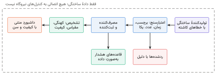
35.5.1 طرحِ برچسبها و اعتبارسنج
ایده. مصرفکننده پیش از ثبت هر رکورد را میسنجد. پنج فیلد باید باشند: برچسب، مقدار، یکا، کیفیت و زمان. برچسب باید از قاعدهٔ بخش 35.3.6 پیروی کند و در طرحِ برچسبها باشد. یکا باید همان یکای طرح باشد. مقدار باید عدد باشد. کیفیت باید یکی از چهار مقدارِ مجاز باشد. زمانِ هر برچسب باید جلو برود. رکوردِ ردشده با دلیلهایش برمیگردد و هرگز بیصدا «تعمیر» نمیشود:
def validate(rec: dict, last_t: dict) -> list[str]:
"""Reasons a record is refused (empty list = accepted). Checks the
fields, the tag rule, the unit, the quality and that time moves on."""
errs = []
for key in ("tag", "value", "unit", "quality", "t"):
if key not in rec:
errs.append(f"missing {key}")
if errs:
return errs
tag = rec["tag"]
if not sc.tag_ok(tag) or tag not in TAGS:
errs.append("unknown or malformed tag")
elif rec["unit"] != TAGS[tag][0]:
errs.append("wrong unit")
if not isinstance(rec["value"], (int, float)):
errs.append("value not a number")
if rec["quality"] not in QUALITY:
errs.append("unknown quality")
if tag in last_t and rec["t"] <= last_t[tag]:
errs.append("time not increasing")
return errs35.5.2 جریان و ردشدهها
synthetic telemetry: produced, accepted and refused records
produced 2,824; accepted 2,821; refused 3
refusals by reason:
time not increasing 1
unknown or malformed tag 1
value not a number 1
the consumer refuses what it cannot trust and says why;
it never repairs a record silently, and the refusal
counts are themselves a health signal of the interfaceایده. تولیدکننده ده دقیقه دادهٔ یکثانیهای از پنج برچسب میسازد: 2,824 رکورد. سه رکوردِ خراب در آن کاشته شده است: برچسبی با حروفِ کوچک، زمانی که به عقب برمیگردد و متنِ «hot» به جای عدد. اعتبارسنج هر سه را با دلیلِ درست رد میکند. شمارِ ردشدهها خودش یک سیگنالِ سلامتِ واسط است. اگر ناگهان بالا برود، چیزی در مبدأ یا در دروازهٔ ارتباطی تغییر کرده است. وارسی: \(2824 - 3 = 2821\).
35.5.3 تشخیصِ مقدارِ کهنه و مقیاسِ اشتباه (مثالِ کارشده)
diagnosis of the accepted data at t = 599 s
tag last value quality stale scaling?
PLP-E1-VT.Voltage 132.0 0 no no
PLP-WTG-T01.ActivePower 3018.6 0 no YES
PLP-TRF-T1.OilTemp 90.2 0 no no
PLP-BES-C03.Soc 50.0 30 no no
PLP-MET-M1.Ghi 848.3 0 YES no
the met station went silent at 420 s and is flagged stale;
turbine T01's power jumped a thousandfold at 300 s and
fits its range only divided by 1000 - kW labelled MW;
the 30 bad-quality battery values are kept, marked, and
never used for control or reports as if goodمثال 35.25 (کیلووات با برچسبِ مگاوات) پرسش. در دادهٔ پذیرفتهشده در t = 599 s، کدام برچسبها مشکوکاند و چرا؟ (دادهٔ ساختگی، A-398.)
پاسخ. سه چیز:
- ایستگاهِ هواشناسی پس از 420 s خاموش شده است. آخرین مقدارش بیش از 10 s پیر است و کهنه علامت میخورد.
- توانِ توربینِ T01 در 300 s هزار برابر شده و 3018.6 MW خوانده میشود. این عدد فقط اگر بر ۱۰۰۰ تقسیم شود در بردِ −0.5 تا 5.5 MW مینشیند. پس مقدار به کیلووات فرستاده شده و برچسبِ مگاوات خورده است.
- ۳۰ مقدارِ باتری کیفیتِ «بد» دارند. نگه داشته و علامتگذاری میشوند، ولی هرگز برای کنترل یا گزارش «خوب» حساب نمیشوند.
تفسیر. هیچکدام از این خطاها اعتبارسنج را نشکستند. هر رکورد شکلِ درستی داشت. تشخیص به دادهای بیش از رکورد نیاز دارد: سنِ آخرین مقدار و بردِ مورد انتظار. همان وارسیِ مقیاسِ مثال 35.11 و همان قاعدهٔ کهنگیِ بخش 34.8.3 اینجا با هم کار میکنند. وارسی: \(3018.6/1000 = 3.02\,\text{MW}\)، درونِ برد.
35.5.4 قاعدههای هشدار بهصورتِ داده
alarm rule on the oil temperature: above 85 C for 5 s, clear below 84
alarm raised at sample 454 (85.7 C); transitions: 1
the rule is data, not code: limit, delay and deadband sit
in a reviewed table, and a test feeds it a known series and
checks the expected raise and clearایده. قاعدهٔ هشدار کد نیست، داده است. حد، تأخیر و باند مرده در جدولی بازبینیشده مینشینند و همان تابعِ بخش 35.4.2 آنها را اجرا میکند. آزمونِ قاعده یک سریِ شناخته را به آن میدهد و بالا رفتن و پاک شدنِ موردِ انتظار را وارسی میکند. دمای روغنِ ساختگی آرام بالا میرود. هشدارِ «بالای 85 °C برای پنج ثانیه» در نمونهٔ ۴۵۴ با 85.7 °C بالا میرود، یک بار.
35.5.5 داشبوردِ متنی
dashboard mock-up (text) at t = 599 s
+------------------------------------------------------------+
| Plant P - SCADA overview (SYNTHETIC, NOT A LIVE PLANT) |
+------------------------------------------------------------+
| PLP-E1-VT.Voltage 132.0 kV ok |
| PLP-WTG-T01.ActivePower 3018.6 MW CHECK SCALE |
| PLP-TRF-T1.OilTemp 90.2 C ok |
| PLP-BES-C03.Soc 50.0 % ok |
| PLP-MET-M1.Ghi 848.3 W/m2 STALE |
+------------------------------------------------------------+
interface refusals in the window: 3
a dashboard shows quality and age next to every value;
a number without them invites the operator to trust itایده. داشبورد کنارِ هر مقدار کیفیت و سن را نشان میدهد. عددی بیاین دو اپراتور را به اعتماد دعوت میکند. سرِ داشبورد با حروفِ بزرگ میگوید داده ساختگی است و نیروگاهِ زنده نیست. شمارِ ردشدههای پنجره هم پایینش آمده است. وارسی: دو برچسبِ مشکوکِ مثال 35.25 اینجا «CHECK SCALE» و «STALE» دارند.
35.5.6 آزمونها و مستندات
ایده. برنامه آزمونهای خودش را دارد (test_ch35_lab). اعتبارسنج یک رکوردِ خوب را میپذیرد و هر شش دلیلِ رد را با یک رکوردِ نمونه نشان میدهد: فیلدِ گمشده، برچسبِ نادرست، یکای نادرست، مقدارِ غیرعددی، کیفیتِ ناشناخته و زمانِ برگشتی. شمارِ ردشدهها هم با سه خطای کاشته برابر است. پنج آزمون هم ابزارهای scada را با حسابِ دستی میسنجند. مستنداتِ آزمایشگاه چهار قلم دارد: طرحِ برچسبها (همان جدولِ TAGS)، فهرستِ خطاهای کاشته با رفتارِ مورد انتظار، جدولِ قاعدههای هشدار، و همین فصل بهعنوانِ راهنما. هر رفتارِ خرابی (رکوردِ خراب، دستگاهِ خاموش، مقیاسِ اشتباه) یک آزمون دارد.
- اعتبارسنج کدام شش وارسی را انجام میدهد؟
- چرا رکوردِ خراب «تعمیر» نمیشود؟
- چرا شمارِ ردشدهها یک سیگنالِ سلامت است؟
- کدام خطاها از اعتبارسنج گذشتند و با چه چیزی پیدا شدند؟
- مقدارِ کیلووات با برچسبِ مگاوات چگونه آشکار میشود؟
- با مقدارهای کیفیتِ «بد» چه میشود؟
- چرا قاعدهٔ هشدار داده است، نه کد؟
- داشبورد کنارِ هر عدد چه نشان میدهد و سرش چه میگوید؟
- مستنداتِ آزمایشگاه چه قلمهایی دارد؟
35.6 ث. مرزِ هشدارِ حریق و اسکادا
فصلِ ۳۲ راهبردِ حریق را ساخت و بخش 34.7 واسطِ حریق را از نگاهِ کنترل تعریف کرد: کنتاکتهای بسته در حالتِ عادی، فرمانهای سیمکشیشده و بازنشانی فقط در تابلوی حریق. این بخش همان مرز را از نگاهِ اسکادا میبیند. اسکادا چه چیزهایی را میبیند، هشدار را به چه کسی میرساند، زمان را چگونه نگه میدارد و وقتی پیوند میافتد چه میکند.
این بخش هیچ سامانهٔ آشکارسازی، اعلام یا اطفای حریق تجویز نمیکند. فهرستِ وضعیتهای مجاز، مسیرهای اعلام و زمانها را راهبردِ حریق، طراحِ سامانهٔ حریق و مقامِ مسئول تعیین میکنند. عددهای این بخش آموزشیاند (A-400). تابلوی حریق اختیارِ کامل را نگه میدارد. ایمنیِ جانی هرگز تابعِ اسکادا یا تولید نیست.
35.6.1 وضعیتهایی که اسکادا میبیند
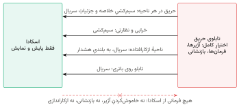
fire-system statuses at the SCADA boundary (teaching, approved list)
status SCADA path
zone in alarm (per zone) monitored hard-wired summary +
serial detail
fault / supervisory monitored hard-wired
zone disabled or isolated monitored serial
panel on battery monitored serial
silence, reset, disable NEVER from SCADA fire panel only
output test, walk test NEVER from SCADA fire panel, permit
SCADA sees what the fire strategy approves it to see and
sends nothing back; a disabled zone is shown as loudly as
an alarm, because a fire there would not be seenایده. اسکادا فقط وضعیتهایی را میبیند که راهبردِ حریق مجاز کرده است. حریق در هر ناحیه دو راه دارد: خلاصهٔ سیمکشیشده و جزئیاتِ سریال. خرابی و نظارت سیمکشیشده است. ناحیهٔ ازکارافتاده و تابلوی روی باتری از راهِ سریال میآیند. اسکادا هیچ چیز برنمیگرداند. نه آژیر را خاموش میکند، نه بازنشانی میکند، نه ناحیهای را از کار میاندازد، نه آزمونِ خروجی میدهد. اینها فقط در تابلوی حریق و با مجوز انجام میشوند. ناحیهٔ ازکارافتاده به بلندیِ یک هشدار نشان داده میشود، چون حریق در آن دیده نمیشود. وارسی: در جدول دو سطرِ پایانی «NEVER from SCADA» هستند.
35.6.2 رساندنِ هشدار وقتی اتاقِ کنترل خالی است
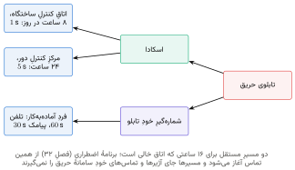
routing a fire alarm from an often unmanned site (teaching times)
path seconds to a person
control room on site (manned 8 h a day) 1
remote control centre (24 h) 5
on-call phone call 60
text message 30
the site room is manned 8 h a day: for 16 h the alarm
must reach the remote centre and the on-call person by two
independent paths; the emergency plan (ch 32) starts from
that call - SCADA routing tells people, it does not
replace the fire system's own alarm devices and callsمثال 35.26 (شانزده ساعتِ خالی) پرسش. اتاقِ کنترلِ ساختگاه هشت ساعت در روز اپراتور دارد. در بقیهٔ روز هشدارِ حریق چگونه به یک آدم میرسد؟ اولویتش چیست؟
پاسخ. در ۱۶ ساعتِ دیگر، هشدار از دو مسیرِ مستقل میرود: از اسکادا به مرکزِ کنترلِ دور که شبانهروز کار میکند (حدودِ 5 s)، و از شمارهگیرِ خودِ تابلو به فردِ آمادهبهکار (تلفن حدودِ 60 s و پیامک حدودِ 30 s). هشدارِ حریق بالاترین اولویتِ اسکادا را دارد و با هیچ تنظیمی سرکوب نمیشود.
تفسیر. برنامهٔ اضطراریِ فصلِ ۳۲ از همین تماس آغاز میشود. مسیرهای اسکادا به آدمها خبر میدهند. جای آژیرها و تماسهای خودِ سامانهٔ حریق را نمیگیرند و استقلالشان را هم نمیشکنند. هر مسیر در مانورها آزموده و زمانش ثبت میشود (بخش 32.6.4). وارسی: \(24 - 8 = 16\) ساعت.
35.6.3 دو ساعت، دو برچسب
the fire panel's own clock against the synchronised SCADA clock
fire panel drift (teaching): 30 s a month, never set
months offset s
1 30
6 180
12 360
after a year the panel's log says the detector went off
six minutes before the SCADA saw the alarm; for the
investigation both stamps are kept - the panel's own and
SCADA's on arrival - and the offset is checked at every
maintenance visit, or the panel synchronised if its maker
and the fire-system designer allow itایده. تابلوی حریق ساعتِ خودش را دارد و اغلب همگام نمیشود. با رانشِ آموزشیِ ۳۰ ثانیه در ماه، پس از یک سال گزارشِ تابلو میگوید آشکارساز شش دقیقه پیش از رسیدنِ هشدار به اسکادا فعال شده است. برای بررسی، هر دو برچسب نگه داشته میشود: برچسبِ خودِ تابلو و برچسبِ اسکادا هنگامِ رسیدن. اختلافِ دو ساعت در هر بازدیدِ نگهداری وارسی و ثبت میشود. اگر سازنده و طراحِ سامانهٔ حریق اجازه دهند، تابلو همگام میشود. برچسبِ رسیدن در اسکادا بهتنهایی برای دنبالهٔ رویدادها کافی نیست (بخش 35.3.3). وارسی: \(12 \times 30 = 360\,\text{s}\)، یعنی شش دقیقه.
35.6.4 وقتی پیوندِ حریق میافتد
loss of the fire link, seen from SCADA (teaching design intent)
serial detail link lost:
alarm 'fire detail lost', priority 1;
hard-wired summary still works
hard-wired summary cut:
alarm at once (normally closed);
treated as a possible fire until checked
SCADA server down:
fire panel unaffected; local alarms;
the remote centre loses sight - phone path
every loss is visible and none of them changes what the
fire system does by itselfایده. سه خرابی و پاسخِ هر کدام از پیش نوشته شده است. اگر پیوندِ سریالِ جزئیات بیفتد، هشدارِ «جزئیاتِ حریق از دست رفت» با اولویتِ ۱ میآید و خلاصهٔ سیمکشیشده هنوز کار میکند. اگر سیمِ خلاصه بریده شود، چون کنتاکت در حالتِ عادی بسته است، هشدار بیدرنگ میآید و تا وارسی مانندِ حریقِ احتمالی رفتار میشود. اگر سرورِ اسکادا بیفتد، تابلوی حریق اثر نمیپذیرد و هشدارهای محلی کار میکنند. مرکزِ دور دیدش را از دست میدهد و مسیرِ تلفنی میماند. هر خرابی دیده میشود و هیچکدام کاری را که سامانهٔ حریق خودش انجام میدهد تغییر نمیدهد. این همان قاعدهٔ بخش 34.7.5 است، از نگاهِ اسکادا.
35.7 ج. مرزِ دادهٔ بهرهبرداری و دادهٔ دارایی
دادهٔ زمانواقعیِ اسکادا و تاریخنگار فقط برای اپراتور نیست. سامانهٔ مدیریتِ نگهداری درخواستِ کار و ساعتِ کارکرد میخواهد. ثبتِ داراییها و سامانهٔ مدیریتِ داراییهای سازمان شناسهها و ویژگیهای هر دارایی را نگه میدارند. گزارشها خلاصهها را میخواهند. این بخش مرزِ میانِ سمتِ بهرهبرداری و سمتِ کسبوکار را تعریف میکند: شناسههای پایدار، مبدأِ معتبرِ هر داده، جریانهای کنترلشده، معنای زمان و کیفیت، رفتار در خرابی، و پذیرش. قاعدهٔ اصلی ساده است: کسبوکار از سمتِ بهرهبرداری میخواند و هرگز در آن نمینویسد.
35.7.1 شناسههایی که با هم نمیخوانند (مثالِ کارشده)
asset register against SCADA tag prefixes (synthetic extract)
asset ID SCADA prefix result
PLP-WTG-T01 PLP-WTG-T01 ok
PLP-WTG-T02 PLP-WTG-T02 ok
PLP-PVI-B01-I1 PLP-PVI-B01-I1 ok
PLP-BES-C01 PLP-BES-C1 ID MISMATCH
PLP-TRF-T1 PLP-TRF-T1 ok
PLP-TRF-T2 - NO SCADA POINTS
PLP-MET-M1 PLP-MET-M1 ok
2 of 7 assets do not line up
'C1' against 'C01' breaks every automatic link: the
battery's alarms never reach its work orders, and its
running hours never reach its maintenance plan; T2 has
no points at all - a missing interface, not a typo. The
asset ID is set once, in the register, and copied, never
retypedمثال 35.27 (یک صفرِ گمشده) پرسش. برشی از ثبتِ داراییها را با پیشوندِ برچسبهای اسکادا مقایسه کنید. کدام داراییها با هم نمیخوانند و پیامدِ هر کدام چیست؟ (دادهٔ ساختگی، A-399.)
پاسخ. دو از هفت. ظرفِ باتری در ثبت PLP-BES-C01 است و در اسکادا PLP-BES-C1. ترانسفورماتورِ T2 در اسکادا هیچ نقطهای ندارد.
تفسیر. «C1» در برابرِ «C01» هر پیوندِ خودکار را میشکند. هشدارهای این ظرف هرگز به دستورهای کارش نمیرسند و ساعتِ کارش هرگز به برنامهٔ نگهداریاش. نبودنِ T2 اشتباهِ تایپی نیست، واسطی گمشده است. شناسهٔ دارایی یک بار در ثبت ساخته و از آن رونوشت میشود، هرگز دوباره تایپ نمیشود. همان برنامهٔ قاعدهٔ برچسب (بخش 35.3.6) هر دو فهرست را پیش از راهاندازی مقایسه میکند. وارسی: پنج سطر «ok» و دو سطرِ دیگر.
35.7.2 مبدأِ معتبرِ هر داده
source of truth of each kind of data (teaching)
data authoritative source owner
asset identity and attributes asset register (EAM) asset engineer
measurements and states SCADA / historian control engineer
topology (what feeds what) one-line (ch 23) electrical lead
work orders and history CMMS maintenance lead
settings and configurations settings register protection/control
every other copy is a copy: it is refreshed from the
source, carries the source's time stamp, and is never
edited where it is readایده. هر گونه داده یک مبدأِ معتبر و یک مالک دارد. هویت و ویژگیهای دارایی در ثبتِ داراییهاست و مالکش مهندسِ دارایی است. اندازهگیریها و وضعیتها در اسکادا و تاریخنگارند و مالکش مهندسِ کنترل است. اینکه چه چیزی چه چیزی را تغذیه میکند در نمودارِ تکخطی است (فصلِ ۲۳). دستورهای کار و سابقه در سامانهٔ مدیریتِ نگهداریاند. تنظیمها و پیکربندیها در دفترِ تنظیمها هستند. هر نسخهٔ دیگر فقط رونوشت است. از مبدأ تازه میشود، برچسبِ زمانِ مبدأ را دارد و هرگز جایی که خوانده میشود ویرایش نمیشود. این جدول نقشهٔ مبدأ و مالکیتی است که ارزیابیِ فصل میخواهد.
35.7.3 جریانهای کنترلشده
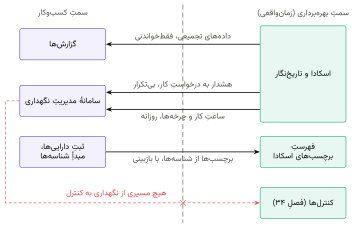
governed data flows across the boundary (teaching)
flow update direction
historian aggregates -> reports daily read only
alarms -> CMMS work requests on event, deduplicated one way
running hours, cycles -> CMMS daily one way
asset register -> SCADA tag list on change, reviewed one way
CMMS -> SCADA control never no path
business systems read from the control side and never
write into it; the one flow into SCADA - tag names from
the register - passes a review, not an automatic syncایده. خلاصههای تاریخنگار روزانه و فقطخواندنی به گزارشها میروند. هشدارها بیتکرار به درخواستِ کار تبدیل میشوند. ساعتِ کارکرد و چرخهها روزانه و یکسویه به سامانهٔ نگهداری میروند. تنها جریانِ رو به اسکادا نامِ برچسبها از ثبتِ داراییهاست. این جریان از بازبینی میگذرد، نه از همگامسازیِ خودکار. از سامانهٔ نگهداری به کنترل هیچ مسیری نیست. دستورِ کار کلیدی را باز نمیکند. این کار را بهرهبردار و روالِ جداسازیِ فصلِ ۳۲ انجام میدهند. وارسی: در جدول فقط یک سطر «no path» دارد و آن از سامانهٔ نگهداری به کنترل است.
35.7.4 هشدار به درخواستِ کار، بیتکرار
alarms turned into work requests (synthetic hour of ch 35 lesson C)
one work request per alarm: 358 requests in an hour
one open request per asset and alarm type, updated while
open: 1 request
a maintenance system flooded by chattering alarms is
ignored like an alarm list; the rule lives in the
interface specification and is tested with a chattering
seriesمثال 35.28 (سیصدوپنجاهوهشت درخواست) پرسش. همان ساعتِ دمای روغنِ مثال 35.15 را در نظر بگیرید. اگر واسط برای هر هشدار یک درخواستِ کار بسازد، چند درخواست در ساعت ساخته میشود؟ قاعدهٔ بهتر چیست؟
پاسخ. 358 درخواست در ساعت. با قاعدهٔ «یک درخواستِ باز برای هر دارایی و هر گونه هشدار، که تا وقتی باز است بهروز میشود»، فقط یک درخواست ساخته میشود.
تفسیر. سامانهٔ نگهداریای که با هشدارهای لرزان غرق شود، مانندِ فهرستِ هشدارِ غرقشده نادیده گرفته میشود. قاعدهٔ حذفِ تکرار در مشخصاتِ واسط نوشته و با یک سریِ لرزان آزموده میشود (بخش 35.7.7). بهترین درمان هنوز درمانِ خودِ هشدار است (مثال 35.15). وارسی: شمار همان شمارِ هشدارهای خامِ مثال 35.15 است.
35.7.5 زمان به وقتِ هماهنگِ جهانی
time in UTC or local time: the day the clocks go back (teaching)
local-time day with a repeated hour: 25 hours of data
a daily report summing local hours: 25/24 = 4.2 % more energy
that day, and two values for every minute of one hour
stored in UTC and shown in local time: 25 distinct hours,
each once
every interface states its time base and every value
carries it; reports convert at the edge, never in storageایده. هر واسط پایهٔ زمانیِ خودش را میگوید و هر مقدار آن را همراه دارد. در روزی که ساعتها یک ساعت عقب کشیده میشوند، روزِ محلی ۲۵ ساعت دارد. گزارشی که ساعتهای محلی را جمع بزند، آن روز 4.2 % انرژیِ بیشتر نشان میدهد و برای هر دقیقهٔ یک ساعت دو مقدار دارد. اگر ذخیره به وقتِ هماهنگِ جهانی باشد و نمایش به وقتِ محلی، ۲۵ ساعتِ متمایز داریم که هر کدام یک بار آمدهاند. گزارشها در لبه تبدیل میکنند، هرگز در ذخیره. معنای کیفیت هم همینطور در مرز حفظ میشود: مقدارِ «بد» در سامانهٔ نگهداری هم «بد» است (بخش 35.3.2). وارسی: \(25/24 - 1 = 4.2\,\%\).
35.7.6 صفِ پیام وقتی واسط میافتد
the CMMS interface is down for three days: the queue (teaching)
40 messages an hour x 72 h = 2,880 messages, 5.6 MB
the sender queues and replays in order when the link
returns; each message has an ID so a replayed one is
recognised and not booked twice - and the queue's age is
an alarm, so three days of silence are noticed in hoursایده. اگر واسطِ سامانهٔ نگهداری سه روز بیفتد، با ۴۰ پیام در ساعت 2,880 پیام جمع میشود، حدودِ 5.6 MB. فرستنده آنها را در صفِ پیام نگه میدارد و پس از برگشتِ پیوند به ترتیب میفرستد. هر پیام شناسه دارد تا پیامِ دوبارهفرستاده شناخته شود و دو بار ثبت نشود. سنِ صف هم خودش یک هشدار است، تا سه روز سکوت در چند ساعت دیده شود. همان منطقِ میانگیرِ بخش 35.4.3 اینجا برای پیامهای کسبوکار به کار میرود. وارسی: \(40 \times 72 = 2880\).
35.7.7 پذیرشِ واسطِ اسکادا و سامانهٔ نگهداری
acceptance of the SCADA - CMMS/EAM interface (teaching)
test with
every asset with points has a matching ID register vs tag list
a test alarm creates one request, not many chattering series
running hours arrive and add up known counter steps
a dropped link queues and replays once link pulled for 1 h
times arrive in UTC with their source DST change in test data
no write path into SCADA exists network and rights check
the interface has an owner on each side and a written
specification; its tests run on a test copy with
synthetic data before production data flowsایده. واسط شش آزمون دارد. هر داراییای که نقطه دارد شناسهٔ همخوان دارد. یک هشدارِ آزمونی یک درخواست میسازد، نه چند تا. ساعتهای کار میرسند و جمعشان درست است. پیوندِ قطعشده صف میکند و یک بار بازپخش میکند. زمانها به وقتِ هماهنگِ جهانی و با مبدأشان میرسند. هیچ مسیرِ نوشتنی به اسکادا وجود ندارد. واسط در هر سو یک مالک و یک مشخصاتِ نوشتهشده دارد. آزمونها روی نسخهٔ آزمون و با دادهٔ ساختگی اجرا میشوند، پیش از آنکه دادهٔ واقعی جاری شود. دسترسی، دورهٔ نگهداری و کنترلِ این واسط در فصلِ ۳۶ ادامه پیدا میکند.
- دو ناهمخوانیِ شناسه در برش کداماند و پیامدِ هر کدام چیست؟
- چرا شناسهٔ دارایی هرگز دوباره تایپ نمیشود؟
- مبدأِ معتبرِ اندازهگیریها، هویتِ دارایی و دستورهای کار چیست؟
- چرا هیچ مسیری از سامانهٔ نگهداری به کنترل نیست؟
- قاعدهٔ حذفِ تکرار چیست و چگونه آزموده میشود؟
- چرا ذخیره به وقتِ هماهنگِ جهانی است؟
- صفِ پیام چگونه از ثبتِ دوبارهٔ پیام جلوگیری میکند؟
- شش آزمونِ پذیرشِ واسط را بگویید.
35.7.8 پخشِ دوبارهٔ صف با شناسهٔ پیام
a queue replayed after a 3-day outage (synthetic)
messages queued: 2,880; acknowledgements lost: 78
without message IDs: 78 work requests booked twice
with message IDs: 0 - the receiver recognises the repeat
and acknowledges it again without booking it
'at least once' delivery needs an idempotent receiver;
the ID is set at the source and never changes on the wayایده. پس از سه روز قطعی، 2,880 پیام از صف دوباره فرستاده میشود. تأییدِ ۷۸ پیام در راه گم میشود و فرستنده آنها را دوباره میفرستد. بیشناسهٔ پیام، ۷۸ درخواستِ کار دو بار ثبت میشوند. با شناسه، گیرنده پیامِ تکراری را میشناسد، دوباره تأیید میکند و ثبت نمیکند. تحویلِ «دستکم یک بار» گیرندهای میخواهد که دریافتِ دوباره در آن بیاثر باشد. شناسه در مبدأ ساخته میشود و در راه هرگز تغییر نمیکند (بخش 35.7.6). وارسی: سه درصد از 2,880 حدودِ ۸۶ است. شبیهسازی ۷۸ را داد که در پراکندگیِ آماری است.
35.7.9 جایگاهِ کارکردی و تجهیز
functional location against equipment (synthetic history)
turbine T07 has run 42,000 h; at 27,000 h its gearbox was
replaced by G-4471, which had run 20,000 h in turbine T03
location 'T07 gearbox': 42,000 h of turbine operation
equipment G-4471: 35,000 h of its own (20,000 in T03
+ 15,000 in T07)
the gearbox removed from T07 took its 27,000 h with it
to the workshop
SCADA counts hours at a LOCATION (the turbine); the
maintenance plan and the warranty need hours of the
EQUIPMENT (the serial number); the asset register links
the two with dates of installation and removal, and the
interface sends location hours that the register turns
into equipment hoursمثال 35.29 (گیربکسی که جا عوض کرد) پرسش. توربینِ T07 42,000 ساعت کار کرده است. در ساعتِ 27,000، گیربکسش با گیربکسِ G-4471 عوض شد که 20,000 ساعت در T03 کار کرده و بازسازی شده بود. ساعتهای «جایگاهِ گیربکسِ T07» و ساعتهای تجهیزِ G-4471 چقدرند؟
پاسخ. جایگاه 42,000 ساعت دارد. تجهیزِ G-4471 35,000 ساعت دارد: 20,000 در T03 و 15,000 در T07. گیربکسِ پیشین 27,000 ساعتش را به کارگاه برد.
تفسیر. اسکادا ساعتها را در جایگاهِ کارکردی (توربین) میشمارد. برنامهٔ نگهداری و ضمانتنامه ساعتهای تجهیز (شمارهٔ سریال) را میخواهند. ثبتِ داراییها این دو را با تاریخِ نصب و برداشتن پیوند میدهد. واسط ساعتهای جایگاه را میفرستد و ثبت آنها را به ساعتهای تجهیز تبدیل میکند. این بخشی از نقشهٔ مبدأ و مالکیت است (بخش 35.7.2). وارسی: \(20\,000 + (42\,000 - 27\,000) = 35\,000\).
- چرا پیامهایی که تأییدشان گم شده دوباره فرستاده میشوند؟
- گیرنده با شناسهٔ پیام چه میکند؟
- جایگاهِ کارکردی و تجهیز چه فرقی دارند؟
- ساعتهای تجهیز از کجا و چگونه به دست میآیند؟
35.8 ساخت و تولیدِ صنعتی: شبکه و اسکادا از کارخانه
سختافزارِ شبکه و اسکادا، یعنی سوئیچها، دیوارهٔ آتش، پایانهٔ دوردست، سرورها، تاریخنگار و ساعتها، در کارخانهٔ سازندگان ساخته و آزموده میشود. فرایندِ کارخانه، طرحِ کنترلِ کیفیت و پروندهٔ آزمونِ هر قلم در فصلهای ۴۰ و ۴۸ میآیند. این بخش آنچه را از کارخانه به اسکادای نیروگاه میرسد تعریف میکند: یک پیکربندیِ شناختهشده برای هر دستگاه، و یدکیهایی که مدتِ انتظار برای سازنده را بپوشانند.
35.8.1 خطمبنای پیکربندیِ دستگاههای شبکه
configuration baseline of the networked devices (teaching)
device count
ring switch 14
substation switch 6
firewall 2
RTU 1
SCADA server 2
historian 1
time server 2
28 devices, each with firmware version, configuration file
and fingerprint (e.g. 1cd57e7e8d84) recorded at the factory test,
re-read after installation and compared, and re-read
after every change - the same rule as the controller's
configuration in ch 34, applied to the networkایده. ۲۸ دستگاهِ شبکهایِ نیروگاه هر کدام یک خطمبنای پیکربندی دارند: نسخهٔ میانافزار، پروندهٔ پیکربندی و اثرانگشتی که در آزمونِ کارخانه ثبت میشود. پس از نصب، پیکربندی دوباره خوانده و با خطمبنا مقایسه میشود. پس از هر تغییر هم همین کار تکرار میشود. این همان قاعدهٔ پیکربندیِ کنترلگرِ فصلِ ۳۴ است (بخش 34.4.5) که برای شبکه به کار رفته است. سوئیچی که در انبار با میانافزارِ دیگری مانده، اگر بیوارسی نصب شود، حلقهای را با پروتکلِ دیگری میسازد. وارسی: \(14 + 6 + 2 + 1 + 2 + 1 + 2 = 28\).
35.8.2 یدکیها در برابرِ مدتِ انتظار برای سازنده
spares to cover the maker's lead time with 95 % confidence (teaching)
item installed MTBF h failures in lead spares
ring switch 14 300,000 0.05 1
SCADA server 2 50,000 0.04 1
RTU 1 150,000 0.01 1
fibre transceiver 40 500,000 0.08 1
a minimum of one spare of every type is kept even when the
expected failures are small: a ring with a dead switch
waits six weeks otherwise; spares carry the same firmware
baseline as the installed devicesمثال 35.30 (یکی از هر گونه) پرسش. ۱۴ سوئیچِ حلقه با MTBF برابرِ 300,000 h نصب شدهاند و سازنده در شش هفته یدکی میفرستد. برای پوشاندنِ این مدت با اطمینانِ 95 % چند یدکی لازم است؟
پاسخ. خرابیهای موردِ انتظار در شش هفته \(14 \times 1008 / 300\,000 = 0.05\) است. چندکِ 95 % توزیعِ پواسون صفر است، ولی کمینهٔ یک یدکی از هر گونه نگه داشته میشود.
تفسیر. حساب صفر میگوید، ولی حلقهای با سوئیچِ مرده بییدکی شش هفته منتظر میماند و در این مدت به جای ثانیهها ساعتها از دست میدهد (مثال 35.4). یدکیها همان خطمبنای میانافزارِ دستگاههای نصبشده را دارند. وارسی: شش هفته \(6 \times 7 \times 24 = 1008\) ساعت است.
- خطمبنای پیکربندیِ یک سوئیچ چه چیزهایی دارد و کی وارسی میشود؟
- چرا یدکی با میانافزارِ دیگر خطرناک است؟
- چرا حساب صفر یدکی میگوید و نیروگاه یکی نگه میدارد؟
- فرایندِ کارخانه و پروندهٔ آزمونِ این دستگاهها در کدام فصلها میآیند؟
35.8.3 آزمونِ کارخانهٔ شبکه
factory test of the network (teaching durations)
per device (x 28):
firmware and configuration fingerprint 0.25 h
port settings, priority classes, address 0.50 h
time synchronisation and its alarm 0.25 h
whole system:
ring broken at each span (14 spans) 3.50 h
server switch-over 1.00 h
back-fill rate limit 0.50 h
general interrogation burst 0.50 h
total 33.5 h of testing, about 5 working days
the network is assembled once in the factory as it will
stand on site; what is not tested there is found by the
commissioning team at the turbine base (ch 48, ch 50)ایده. شبکه یک بار در کارخانه همانگونه سرهم میشود که در ساختگاه خواهد بود. هر یک از ۲۸ دستگاه سه آزمون دارد: اثرانگشتِ میانافزار و پیکربندی، تنظیمِ درگاهها و ردههای اولویت و نشانی، و همگامیِ زمان با هشدارش. کلِ سامانه هم آزمونهای خودش را دارد: بریدنِ حلقه در هر یک از ۱۴ دهانه، جابهجاییِ سرور، محدودکنندهٔ آهنگِ پر کردنِ دوباره و فورانِ پرسشِ همگانی. روی هم 33.5 ساعت، حدودِ پنج روزِ کاری. آنچه اینجا آزموده نشود، گروهِ راهاندازی پای توربین پیدا میکند و آنجا بسیار گرانتر است (فصلهای ۴۸ و ۵۰). وارسی: \(28 \times 1 + 3.5 + 1 + 0.5 + 0.5 = 33.5\).
- آزمونهای هر دستگاه و آزمونهای کلِ سامانه در کارخانه کداماند؟
- چرا حلقه در هر دهانه بریده میشود؟
- چرا شبکه در کارخانه همانگونه سرهم میشود که در ساختگاه؟
35.9 نیروگاهِ P: سه مثالِ یکپارچه
برنامه:
python -m companion.ch35.integratedمثال 35.31 (مقدماتی: دو نتیجه با دست) پرسش. چرخهٔ پرسشگریِ ۳۰ کنتور و ترافیکِ توربینها را با دست حساب و با کد مقایسه کنید.
two SCADA results checked by hand
30 meters, 53 bytes at 9600 bit/s + 15 ms each: 1.77 s; code 1.77
12 turbines x 600 tags x 20 bytes x 8 bits a second: 1.15 Mbit/s
a hand check of bits against bytes catches the commonest
error in a network calculation - a factor of eightپاسخ. 1.77 s و 1.15 Mbit/s، هر دو برابر با کد.
تفسیر. وارسیِ دستیِ بیت در برابرِ بایت رایجترین خطای حسابِ شبکه را پیدا میکند: ضریبِ هشت. عددی که هشت برابر کوچک باشد پیوندی میخرد که در فورانها کم میآورد. وارسی: \(53 \times 8 = 424\) بیت در هر پرسش.
مثال 35.32 (میانی: بستهٔ اسکادا و ارتباطات در عدد) پرسش. بستهٔ اسکادا و ارتباطاتِ نیروگاهِ P را در عدد خلاصه کنید.
the SCADA and communications package of Plant P in numbers
two single-mode fibre rings for the turbines; the west ring
needs longer-reach optics (10.8 dB against 10 dB)
steady traffic 4.5 Mbit/s: 4 % of an edge link
time synchronisation 1.45 us worst case: events yes, 1 us no
five functional subnets; 22,300 tags; 6 diagram types kept
historian about 12 TB over the plant's life
fire boundary: monitor only, two routes to a person when
the room is empty, both clocks kept
asset IDs: 2 of 7 in the extract do not line upتفسیر. ارزشِ بسته در عددهایش نیست، که بیشترشان آموزشیاند. ارزشش در نمودارها، فهرستِ نقطهها، مشخصاتِ واسطها، نقشهٔ مبدأ و مالکیت و آزمونهایی است که هر عدد را به شاهد میرسانند. وارسی: شش گونهٔ نمودار که این فصل کشید: لایهها، فیزیکی، منطقی، مسیرِ ارتباط، جریانِ داده و همگامیِ زمان.
مثال 35.33 (یکپارچه: مبنای اسکادا و ارتباطاتِ نیروگاهِ P) پرسش. مبنای اسکادا و ارتباطات را با یافتهها و موردهای باز بنویسید.
D-039 SCADA and communications basis of Plant P (teaching)
1 network: single-mode fibre in the collector trenches, two
turbine rings with a fast ring protocol (recovery well
under the 3 s watchdog of ch 34), functional subnets
2 time: precision time protocol for events; a 1 us need
would need better end devices
3 data: values as objects with unit, quality and time; tag
rule checked by program; 32-bit counters; quality map of
every gateway in the interface specification
4 operations: alarm philosophy with delays and deadbands,
buffers at the source, retention 2 years raw and the
plant's life for aggregates, least-privilege roles
5 fire boundary: approved statuses only, no commands,
independent alarm routes, panel and SCADA stamps kept
6 asset data: register as the source of asset IDs, one-way
flows to CMMS, deduplicated work requests, UTC, queues
7 later findings: priority classes on every switch port (a
control message waits 0.12 ms, not 120 ms, behind a
back-fill); back-fill rate-limited; a second carrier only
on a separate route; counters as integers (a float32 kWh
counter loses 7.8 % in year 25); word order tested with a
known value; state-based alarm suppression (151 -> 13);
commands refused during server switch-over; stale limits
above the integrity-scan period; sampling from the
fastest phenomenon; acceptance samples of about 300
points for 1 %, full tests for control and grid points
open: grid operator's protocol profile and telemetry list
(U-115), makers' data and device declarations (U-116)تفسیر. این تصمیمِ D-039 است. یافتههایی که به فصلهای دیگر برمیگردند:
- حلقهٔ غربیِ توربینها با اپتیکِ 10 dB جا نمیشود: 10.8 dB. اپتیکِ با بردِ بلندتر یا سوئیچی در میانه، پیش از سفارشِ فیبر (فصلهای ۲۴ و ۳۹).
- همگامیِ زمان با 1.45 µs برای رویدادها کافی است و برای نیازِ 1 µs نه. چنین نیازی دستگاههای بهتر میخواهد، نه شبکهٔ بهتر.
- شمارندهٔ انرژیِ ۱۶ بیتی پس از ۴۱ روز سرریز میکند. شمارندهها ۳۲ بیتیاند و گونهٔ داده در فهرستِ نقطهها نوشته میشود.
- دروازهٔ ارتباطی «جایگزینشده» و «آزمونی» را گم میکند، مگر آنکه مشخصاتِ واسط نگاشتشان کند.
- دو از هفت دارایی در برش با برچسبهای اسکادا نمیخوانند. ثبتِ داراییها مبدأِ شناسههاست و دو فهرست با برنامه مقایسه میشوند.
- هشدارِ لرزان بیقاعدهٔ حذفِ تکرار ۳۵۸ درخواستِ کار در ساعت میسازد.
- پیامِ کنترل بیردهٔ اولویت تا 120 ms پشتِ پر کردنِ دوبارهٔ تاریخنگار میماند. درگاهها رده میگیرند و پر کردنِ دوباره محدودِ آهنگ میشود (بخش 35.2.16).
- شمارندهٔ اعشاریِ انرژی در سالِ ۲۵ هفتوهشت دهم درصد کم میشمارد. شمارندهها عددِ صحیحاند (مثال 35.14).
- قطعِ یک فیدر ۱۵۱ هشدار میسازد. سرکوبِ پیامدها بر پایهٔ وضعیت ۱۳ هشدار باقی میگذارد (مثال 35.19).
35.10 عددهای کلیدیِ اسکادا و ارتباطاتِ نیروگاهِ P
| کمیت | مقدار | مثال |
|---|---|---|
| ترافیکِ پایدار / سهمِ پیوندِ لبه | 4.5 Mbit/s / 4 % | مثال 35.1 |
| چرخهٔ پرسشگریِ ۳۰ کنتور | 1.77 s | مثال 35.2 |
| تأخیرِ توربین تا مرکزِ کنترل | 45.2 ms | بخش 35.2.6 |
| افتِ حلقهٔ غربی / شرقی | 10.8 / 9.9 dB | مثال 35.3 |
| قطعِ توربینِ ششم: زنجیره / حلقه | 8.4 h / 9.7 s در سال | مثال 35.4 |
| بدترین خطای زمان | 1.45 µs | مثال 35.5 |
| سنِ توانِ نقطهٔ اتصال روی صفحه | تا 2.17 s | مثال 35.6 |
| ترتیبِ وارونه با برچسبِ دروازه | 28.6 % | مثال 35.12 |
| هشدارها: خام / با تأخیر و باند مرده | 358 / 6 در ساعت | مثال 35.15 |
| جای تاریخنگار در عمرِ نیروگاه | حدودِ 12 TB | مثال 35.16 |
| شناسههای ناهمخوان | ۲ از ۷ | مثال 35.27 |
35.11 گردشِ کارِ اسکادا و ارتباطات
- لایهها و نمودارها: فیزیکی، منطقی، مسیرِ ارتباط، جریانِ داده، افزونگی، همگامیِ زمان (بخش 35.2.1، بخش 35.4.1).
- شبکه: رسانه و برد، بودجهٔ افتِ نوری، ترافیک و فوران، تأخیر، زنجیره یا حلقه، زیرشبکهها (بخش 35.2).
- زمان: منبع، زنجیره و بودجهٔ خطا در برابرِ نیاز؛ برچسب در مبدأ (بخش 35.2.9، بخش 35.3.3).
- داده: قاعدهٔ برچسب، گونهٔ داده، مقیاس، باند مرده، نگاشتِ کیفیت، پروفایلِ واسط (بخش 35.3).
- بهرهبرداری: فلسفهٔ هشدار، میانگیر، دورهٔ نگهداری، جابهجایی به پشتیبان، نقشها (بخش 35.4).
- مرزها: حریق فقط پایش؛ دادهٔ دارایی با مبدأِ معتبر، جریانهای یکسویه، حذفِ تکرار، وقتِ هماهنگِ جهانی و صف (بخش 35.6، بخش 35.7).
- پذیرش: نقطهبهنقطه، زمان، هشدار، جابهجایی، کیفیت، واسطِ نگهداری؛ همه با اثرانگشتِ پیکربندی (بخش 35.4.7، بخش 35.7.7).
35.12 آزمایشگاههای پایتونِ این فصل
| آزمایشگاه | برنامه | آنچه میسازد |
|---|---|---|
| داده | sources | توربینها، پست، حلقهها، ترافیک، پیوندها، دسترسپذیری، زمان، برشِ داراییها |
| شبکه | examples_a | رسانه، فیبر، ترافیک، سریال، تأخیر، توپولوژی، زمان، زیرشبکهها |
| داده و همکنشپذیری | examples_b | ثبّات، کیفیت، برچسبِ زمان، سرریز، پروفایل، برچسبها |
| بهرهبرداری | examples_c | نمودارها، هشدارِ لرزان، میانگیر، نگهداری، جابهجایی، نقشها، پذیرش |
| آزمایشگاهِ ت | lab_d | اعتبارسنج، جریان، تشخیص، هشدار، داشبورد |
| مرزِ حریق | examples_e | وضعیتها، مسیرها، ساعتها، از دست رفتنِ پیوند |
| مرزِ دارایی | examples_f | شناسهها، مبدأ، جریانها، حذفِ تکرار، زمان، صف، پذیرش |
| ساخت | examples_k | خطمبنای پیکربندی، یدکیها |
| ژرفتر | examples_m | ردیابی، زیرشبکه، باند مرده، روند، گزارش، نمودارِ منطقی |
| ژرفترِ دوم | examples_n | فوران، رادیو، سرآیند، صف، شمارندهٔ اعشاری، ترتیبِ کلمهها، سیلِ هشدار، بازیابی، نگهداشتِ زمان، جایگاه و تجهیز |
| تکمیلی | examples_r | رخدادهای تکراری، رفت و برگشتِ نقطهٔ تنظیم، دفترِ رخدادها، صفحهها |
| دورِ دیگر | examples_s | ترمیمِ حلقه، پروندههای پایشِ وضعیت، ضربان، ثباتهای ۱۶ بیتی، کیفیتِ جمع، آزمونِ نقطهبهنقطه، قطعِ ارتباط، پرسشهای گزارش، همکنشپذیری |
| وارسیها | examples_q | دگرنمایی، طرحِ نشانی، فهرستِ نقطهها، کهنگی، پیوندِ دورسنجی، دیسکها، نمونهٔ پذیرش |
| ژرفترِ سوم | examples_p | اولویت، حاملها، کامل بودن، ردهٔ هشدارها، پخشِ دوباره، فشردهسازی، جابهجاییِ سرور، آزمونِ کارخانهٔ شبکه |
| نیروگاهِ P | integrated | با دست، بسته، مبنای D-039 |
| مثالها و پاسخها | worked | سطرهای E01 و P01 به بعد |
ماژولِ تازهٔ scada با پنج آزمون و آزمایشگاه با سه آزمون در برابرِ حسابِ دستی پایهٔ این برنامههاست. جای توربینها و پست از فصلهای ۱۴ و ۳۳، نقطهها و لایههای کنترل از فصلِ ۳۴، و انرژیِ روزانه از فصلِ ۱۵ میآیند.
35.13 جعبهٔ استاندارد و انطباق
- ارتباطاتِ پست و مدلِ دادهٔ آن: سری IEC 61850 (STD-093)؛ دورکنترل: IEC 60870-5-104 (STD-092) و DNP3 (STD-154، ویرایش باید وارسی شود)؛ پروتکلِ ثبّاتمحور: STD-155.
- افزونگیِ شبکه: IEC 62439-3:2021 برای PRP و HSR (STD-151) و IEC 62439-2:2021 برای حلقه (STD-152).
- همگامیِ دقیقِ ساعت: IEEE 1588-2019 با اصلاحیههایش (STD-150).
- مدیریتِ هشدار: IEC 62682:2022 (STD-153).
- آزمونهای پذیرشِ کارخانه، ساختگاه و یکپارچگی: IEC 62381:2024 (STD-148).
- نامِ پروتکل همکنشپذیری را تضمین نمیکند. پروفایلِ واسط و آزمون آن را نشان میدهند. پروتکل، پروفایل و فهرستِ دورسنجیِ بهرهبردارِ شبکه از خودِ او میآیند (U-115). مرزِ حریق تابعِ راهبردِ حریق و مقامِ مسئول است (U-110).
- هیچ عددی در این فصل الزام نیست. (وارسیشده 2026-11-17.)
35.14 تحویلدادنیِ نیروگاهِ P
| سند | محتوا | معیارِ پذیرش |
|---|---|---|
| PLP-CTL-DWG-0001 | نمودارهای فیزیکی، منطقی، مسیرِ ارتباط، افزونگی و همگامیِ زمان | یک برچسب برای هر دستگاه در همهٔ نمودارها |
| PLP-CTL-LST-0002 | فهرستِ نقطههای اسکادا | هر نقطه با برچسب، یکا، گونهٔ داده، مقیاس، باند مرده و کیفیت؛ قاعدهٔ برچسب بییافته |
| PLP-CTL-SPC-0003 | مشخصاتِ اسکادا و واسطها | پروفایلها، نگاشتِ کیفیت، فلسفهٔ هشدار، مرزِ حریق، رفتار در خرابی |
| PLP-CTL-REG-0005 | نقشهٔ مبدأ و مالکیتِ داده و ثبتِ واسطهای نگهداری | هر داده با مبدأ، مالک، جریان، بهروزرسانی و رفتار در خرابی |
| PLP-CTL-CAL-0003 | محاسبههای شبکه | ترافیک، افتِ نوری، دسترسپذیری، بودجهٔ زمان، نگهداری و میانگیر |
| PLP-CTL-PRO-0003 | روشهای پذیرشِ اسکادا و واسطِ نگهداری | هر آزمون با شاهد و اثرانگشتِ پیکربندی؛ فقط دادهٔ ساختگی پیش از راهاندازی |
این فصل اینها را به پروندهٔ نیروگاهِ P میافزاید:
- تصمیمِ D-039: مبنای اسکادا و ارتباطات (مثال 35.33).
- فرضهای A-393 تا A-400:
- A-393: شمارِ برچسبها، اندازهٔ هر مقدار و ترافیک.
- A-394: نرخِ پیوندها و خطِ سریال.
- A-395: نرخهای خرابی و تعمیرِ پیوندها و سوئیچها.
- A-396: سهمهای بودجهٔ زمان.
- A-397: نقشهٔ ثبّاتها، نگاشتِ کیفیت، تأخیرهای تا دروازه و پروفایلها.
- A-398: سریهای ساختگیِ هشدار و دورسنجی، میانگیر، نگهداری، زمانهای بازیابی و نقشها.
- A-399: برشِ ثبتِ داراییها، جریانهای نگهداری و خطاهای کاشته.
- A-400: زمانها و رانشِ مرزِ حریق، خطمبنا و یدکیها.
- مجهولها: پروتکل، پروفایل و فهرستِ دورسنجیِ بهرهبردارِ شبکه (U-115)؛ دادهها و اعلامیههای دستگاههای سازندگان (U-116).
- یافتهها: حلقهٔ غربی، بودجهٔ زمان، شمارندههای ۳۲ بیتی، نگاشتِ کیفیتِ دروازه، شناسههای ناهمخوان و حذفِ تکرار.
- کتابخانهٔ همراه: ماژولِ
scadaبا آزمونها و برنامههای فصلِ ۳۵.
35.15 جمعبندی
- شبکه: اسکادا سرپرستی میکند و جای حلقهٔ کنترل و حفاظت را نمیگیرد؛ فیبرِ تکحالته برای فاصلهها و جداییِ زمین؛ ضریبِ هشتِ بایت و بیت؛ فورانها، نه میانگین، پیوند را پر میکنند؛ پرسشگری در برابرِ گزارش با تغییر؛ تأخیرِ درونِ نیروگاه کوچک است و پیوندِ دوربرد بزرگ؛ بودجهٔ افتِ نوری برای کلِ حلقه؛ حلقه ساعتها را به ثانیهها میبرد؛ نیاز روشِ همگامیِ زمان را انتخاب میکند؛ یک زیرشبکه برای هر کارکرد؛ فورانها محدودِ آهنگ میشوند و کنترل ردهٔ اولویت میگیرد؛ انتظار نزدیکِ بارِ کامل بیحد رشد میکند؛ حاملِ دوم فقط با مسیرِ جدا (بخش 35.2).
- داده و همکنشپذیری: ثبّات معنایش را جای دیگری دارد و شیء همراهش؛ نگاشتِ کیفیتِ هر دروازهٔ ارتباطی؛ برچسبِ زمان در مبدأ؛ گونهٔ داده از بردِ عمرِ نیروگاه؛ نامِ پروتکل همکنشپذیری نیست، پروفایل و آزمون است؛ قاعدهٔ برچسب با برنامه؛ شمارندهها عددِ صحیحاند، نه اعشاری؛ ترتیبِ کلمهها با مقداری که هر دو کلمهاش ناصفر است آزموده میشود (بخش 35.3).
- بهرهبرداری: هر نمودار یک پرسش؛ تأخیر و باند مرده در فلسفهٔ هشدار؛ میانگیر در مبدأ؛ دورهٔ نگهداری با مالک؛ زمانِ بازیابیِ شبکه با نگهبانِ زمانی؛ کمترین دسترسی؛ پذیرش با شاهد؛ روند با کمینه و بیشینه؛ گزارش با کامل بودنِ داده؛ نمودارِ منطقی جدولِ مسیرهای مجاز؛ سرکوبِ پیامدها در سیلِ هشدار؛ نقطه و زمانِ بازیابی؛ فرمان در جابهجاییِ سرور رد میشود؛ نگهداشتِ زمان؛ کامل بودنِ داده برای هر برچسب؛ فشردهسازی با خطای تضمینشده (بخش 35.4).
- آزمایشگاه: اعتبارسنج رد میکند و میگوید چرا؛ تشخیص با سن و برد؛ قاعدهٔ هشدار داده است؛ داشبورد کیفیت و سن را نشان میدهد؛ فقط دادهٔ ساختگی (بخش 35.5).
- مرزِ حریق: فقط وضعیتهای مجاز، هیچ فرمانی؛ دو مسیرِ مستقل وقتی اتاق خالی است؛ هر دو برچسبِ زمان؛ هر خرابی دیده میشود و هیچکدام سامانهٔ حریق را تغییر نمیدهد؛ بازنشانی فقط در تابلوی حریق (بخش 35.6).
- مرزِ دارایی: شناسه یک بار ساخته و رونوشت میشود؛ مبدأِ معتبر و مالک برای هر داده؛ کسبوکار میخواند و نمینویسد؛ حذفِ تکرار؛ وقتِ هماهنگِ جهانی؛ صف با شناسهٔ پیام و گیرندهای که تکرار را ثبت نمیکند؛ ساعتهای جایگاه به ساعتهای تجهیز؛ پذیرش روی نسخهٔ آزمون (بخش 35.7).
- کارخانه: خطمبنای پیکربندیِ هر دستگاهِ شبکه؛ دستکم یک یدکی از هر گونه (بخش 35.8).
35.15.1 واژگانِ فصلِ ۳۵
| فارسی | انگلیسی | یادداشت |
|---|---|---|
| اسکادا | supervisory control and data acquisition | SCADA |
| واسط | interface | |
| دروازهٔ ارتباطی | gateway | |
| پروتکل | protocol | |
| مدلِ داده | data model | |
| همکنشپذیری | interoperability | |
| نرخِ بیت | bit rate | |
| تأخیرِ فرستادن | serialisation delay | |
| فیبرِ تکحالته | single-mode fibre | |
| فیبرِ چندحالته | multimode fibre | |
| جوشِ فیبر | fusion splice | |
| بودجهٔ افتِ نوری | optical loss budget | |
| زنجیرهٔ پیاپی | daisy chain | |
| توپولوژیِ حلقوی | ring topology | |
| زیرشبکه | subnet | |
| پرسشگری | polling | |
| گزارش با تغییر | report by exception | |
| پویشِ درستی | integrity scan | |
| پرسشِ همگانی | general interrogation | |
| پروتکلِ زمانِ دقیق | precision time protocol | PTP |
| ساعتِ اصلی | grandmaster clock | |
| برچسبِ نقطه | tag | |
| ثبّات | register | |
| پرچمِ کیفیت | quality flag | |
| برچسبِ زمانی | timestamp | |
| ثبتِ داراییها | asset register | |
| سامانهٔ مدیریتِ نگهداری | computerised maintenance management system | CMMS |
| مدیریتِ داراییهای سازمان | enterprise asset management | EAM |
| درخواستِ کار | work request | |
| دستورِ کار | work order | |
| مبدأِ معتبر | source of truth | |
| سیلِ هشدار | alarm flood | |
| هشدارِ لرزان | chattering alarm | |
| فلسفهٔ هشدار | alarm philosophy | |
| بازنگریِ هشدارها | alarm rationalisation | |
| دورهٔ نگهداریِ داده | data retention | |
| میانگیر | buffer | |
| جابهجایی به پشتیبان | failover | |
| کمترین دسترسی | least privilege | |
| دیوارهٔ آتش | firewall | |
| آزمونِ نقطهبهنقطه | point-to-point test | |
| حذفِ تکرار | deduplication | |
| پایهٔ زمانی | time base | UTC |
| صفِ پیام | message queue | |
| خطمبنای پیکربندی | configuration baseline | |
| ردهٔ اولویت | priority class | QoS |
| سرباریِ پروتکل | protocol overhead | |
| حاشیهٔ محوشدگی | fade margin | |
| ناحیهٔ فرنل | Fresnel zone | |
| سرکوبِ هشدار | alarm suppression | |
| هشدارِ کنارگذاشته | shelved alarm | |
| نقطهٔ بازیابی | recovery point | |
| زمانِ بازیابی | recovery time | |
| نگهداشتِ زمان | holdover | |
| کامل بودنِ داده | data completeness | |
| ترتیبِ کلمهها | word order | |
| جایگاهِ کارکردی | functional location |
35.16 ارزیابیِ پلکانی
معیارِ تسلطِ این فصل: خواننده میتواند شبکهٔ نیروگاه را با عدد بسنجد: ترافیک، تأخیر، افتِ نوری، دسترسپذیری، بودجهٔ زمان و نگهداری. میتواند معنای هر مقدار را از مبدأ تا صفحه و تا سامانهٔ نگهداری نگه دارد: یکا، مقیاس، کیفیت و زمان. میتواند یک جریانِ دورسنجیِ ساختگی را اعتبارسنجی و خطاهای کاشته را تشخیص دهد. میتواند مرزهای حریق و دادهٔ دارایی را با مبدأ، مالک و رفتار در خرابی تعریف کند. همهٔ اینها بیاتصال به کنترلهای زنده و بیدور زدنِ سامانههای ایمنیِ جانی. پاسخها در بخش 35.17 آمدهاند.
35.16.1 پلهٔ ۱: مبانی
تمرین 35.1 چهار لایهٔ اسکادا را با یک دستگاه در هر کدام نام ببرید.
تمرین 35.2 چرا اسکادا جای حلقهٔ کنترلِ سریع یا حفاظت را نمیگیرد؟
تمرین 35.3 سیگنال و داده چه فرقی دارند؟
تمرین 35.4 سه رسانه را با بردشان بگویید.
تمرین 35.5 چرا میانِ دو ساختمانِ نیروگاه کابلِ مسیِ ارتباطی کشیده نمیشود؟
تمرین 35.6 معادلهٔ 35.1 را توضیح دهید.
تمرین 35.7 فوران چیست و چرا پیوند را پر میکند؟
تمرین 35.8 معادلهٔ 35.2 را توضیح دهید.
تمرین 35.9 پرسشگری و گزارش با تغییر چه فرقی دارند؟
تمرین 35.10 پویشِ درستی برای چیست؟
تمرین 35.11 کدام بخشهای تأخیرِ پیام بزرگاند؟
تمرین 35.12 معادلهٔ 35.3 را توضیح دهید.
تمرین 35.13 چرا بودجهٔ افتِ نوری برای کلِ حلقه حساب میشود؟
تمرین 35.14 معادلهٔ 35.4 را توضیح دهید.
تمرین 35.15 کدام فرض پشتِ عددِ دسترسپذیریِ حلقه است؟
تمرین 35.16 معادلهٔ 35.5 را توضیح دهید.
تمرین 35.17 کدام حلقهٔ زنجیرهٔ زمان بیشترِ بودجه را میگیرد؟
تمرین 35.18 پیشوندِ \(/26\) چند نشانیِ قابلِ استفاده دارد؟
تمرین 35.19 سوئیچ و مسیریاب چه فرقی دارند؟
تمرین 35.20 باند مرده چه چیزی را با چه چیزی عوض میکند؟
تمرین 35.21 پروتکل و مدلِ داده چه فرقی دارند؟
تمرین 35.22 ثبّات و شیء چه فرقی دارند؟
تمرین 35.23 وارسیِ مقیاس چگونه کار میکند؟
تمرین 35.24 کدام پرچمهای کیفیت در دروازهٔ نمونه گم میشوند؟
تمرین 35.25 چرا برچسبِ زمانِ هنگامِ رسیدن رخداد را نمیسنجد؟
تمرین 35.26 گونهٔ دادهٔ یک نقطه چگونه انتخاب میشود؟
تمرین 35.27 پروفایلِ واسط چیست؟
تمرین 35.28 قاعدهٔ برچسبِ نیروگاهِ P چیست؟
تمرین 35.29 هشت گونهٔ نمودار را با پرسشِ هر کدام بگویید.
تمرین 35.30 هشدارِ لرزان چیست؟
تمرین 35.31 سه گامِ چرخهٔ مدیریتِ هشدار کداماند؟
تمرین 35.32 معادلهٔ 35.7 را توضیح دهید.
تمرین 35.33 چرا میانگیر در مبدأ است؟
تمرین 35.34 چرا زمانِ بازیابیِ شبکه با نگهبانِ زمانی سنجیده میشود؟
تمرین 35.35 کمترین دسترسی چیست؟
تمرین 35.36 آزمونِ نقطهبهنقطه چه چیزی را ثابت میکند؟
تمرین 35.37 چرا روندِ کاهشیافته جهشهای کوتاه را پنهان میکند؟
تمرین 35.38 گزارشِ روزانه کنارِ انرژی چه چیزی میگوید؟
تمرین 35.39 اعتبارسنجِ آزمایشگاه کدام شش وارسی را دارد؟
تمرین 35.40 چرا رکوردِ خراب «تعمیر» نمیشود؟
تمرین 35.41 کدام خطاهای کاشته از اعتبارسنج گذشتند؟
تمرین 35.42 اسکادا کدام وضعیتهای حریق را میبیند؟
تمرین 35.43 کدام کارها هرگز از اسکادا انجام نمیشوند؟
تمرین 35.44 تأیید و بازنشانی چه فرقی دارند؟
تمرین 35.45 چرا هر دو برچسبِ زمانِ رخدادِ حریق نگه داشته میشود؟
تمرین 35.46 مبدأِ معتبر چیست؟
تمرین 35.47 چرا شناسهٔ دارایی دوباره تایپ نمیشود؟
تمرین 35.48 چرا از سامانهٔ نگهداری به کنترل مسیری نیست؟
تمرین 35.49 قاعدهٔ حذفِ تکرار چیست؟
تمرین 35.50 چرا ذخیره به وقتِ هماهنگِ جهانی است؟
تمرین 35.51 خطمبنای پیکربندیِ یک سوئیچ چه دارد؟
تمرین 35.52 چرا پر کردنِ دوبارهٔ تاریخنگار محدودِ آهنگ میشود؟
تمرین 35.53 معادلهٔ 35.6 را توضیح دهید.
تمرین 35.54 ردهٔ اولویت در درگاهِ سوئیچ چه میکند؟
تمرین 35.55 سرباریِ پروتکل چیست؟
تمرین 35.56 حاشیهٔ محوشدگی و ناحیهٔ فرنل را توضیح دهید.
تمرین 35.57 حاملِ دوم کی کمکی نمیکند؟
تمرین 35.58 چرا شمارندهٔ اعشاری برای انرژی مناسب نیست؟
تمرین 35.59 ترتیبِ کلمهها چیست؟
تمرین 35.60 سرکوبِ هشدار بر پایهٔ وضعیت چیست؟
تمرین 35.61 نقطه و زمانِ بازیابی چه فرقی دارند؟
تمرین 35.62 نگهداشتِ زمان چیست؟
تمرین 35.63 چرا فرمانها در جابهجاییِ سرور صف نمیشوند؟
تمرین 35.64 چرا کامل بودنِ داده برای هر برچسب گزارش میشود؟
تمرین 35.65 روشِ خطِ راست در فشردهسازی چه تضمینی دارد؟
تمرین 35.66 گیرندهای که دریافتِ دوباره در آن بیاثر است چیست؟
تمرین 35.67 جایگاهِ کارکردی و تجهیز چه فرقی دارند؟
تمرین 35.68 دگرنمایی در اسکادا چگونه رخ میدهد؟
تمرین 35.69 دو خطای رایجِ طرحِ نشانیها کداماند؟
تمرین 35.70 حدِ کهنگیِ نقطههای با تغییر چگونه انتخاب میشود؟
تمرین 35.71 دو دروازهٔ افزونه چگونه فهرستِ رخدادها را دو برابر نمیکنند؟
تمرین 35.72 در رفت و برگشتِ یک نقطهٔ تنظیم کدام بخش بزرگترین است؟
تمرین 35.73 چرا دفترِ رخدادها برای کلِ عمرِ نیروگاه نگه داشته میشود؟
تمرین 35.74 چهار ترازِ صفحههای اپراتور کداماند؟
35.16.2 پلهٔ ۲: تحلیل
تمرین 35.75 قابِ 1500 بایتی روی 100 Mbit/s: تأخیرِ فرستادن؟
تمرین 35.76 ۲۰۰ پیام در ثانیه از ۱۰۰ بایت روی 1 Mbit/s: بهرهوری؟
تمرین 35.77 ۱۰ کنتور، ۸ و ۲۵ بایت، 9600 bit/s و 10 ms: چرخه؟
تمرین 35.78 فیبرِ 5 km با ۴ جوش و ۲ اتصالدهنده: افت؟
تمرین 35.79 3600 نقطه با دو تغییر در ساعت: پیام در ثانیه؟
تمرین 35.80 دسترسپذیریِ 0.9999 چند «نُه» است؟
تمرین 35.81 ۶۴ بایت روی 9600 bit/s؟
تمرین 35.82 9000 بایت روی 1 Gbit/s؟
تمرین 35.83 ترافیکِ ۱۲ توربین با ۶۰۰ برچسب و ۲۰ بایت در ثانیه؟
تمرین 35.84 همان بار روی 100 Mbit/s؟
تمرین 35.85 ۳۰ کنتور، ۸ و ۴۵ بایت، 9600 bit/s و 15 ms؟
تمرین 35.86 همان با 19200 bit/s؟
تمرین 35.87 افتِ حلقهٔ غربی؟
تمرین 35.88 افتِ حلقهٔ شرقی؟
تمرین 35.89 زنجیرهٔ ۶ پیوندی با 0.99984: ساعتِ قطع در سال؟
تمرین 35.90 بدترین دستگاهِ حلقهٔ ۷ پیوندی؟
تمرین 35.91 بودجهٔ زمانِ 0.1 + 0.05 + 0.3 + 1.0 µs؟
تمرین 35.92 کوچکترین پیشوند برای ۴۰ دستگاه با پنجاه درصد رشد؟
تمرین 35.93 شمارندهٔ ۱۶ بیتی با 808 MWh در روز؟
تمرین 35.94 1000 نقطهٔ یکثانیهای، دو سال، ۱۲ بایت؟
تمرین 35.95 میانگیرِ 2000 برچسب، ۲۰ بایت، ۲۴ ساعت؟
تمرین 35.96 صفِ ۴۰ پیام در ساعت برای ۷۲ ساعت؟
تمرین 35.97 برچسبِ PLP-MET-M1-Ghi درست است؟
تمرین 35.98 1321 روی بردِ 0–150 مشکوک است؟
تمرین 35.99 آخرین بهروزرسانی 5 s، اکنون 20 s، حد 10 s: کهنه؟
تمرین 35.100 روزِ محلیِ ۲۵ ساعته چند درصد انرژیِ بیشتر نشان میدهد؟
تمرین 35.101 بدترین سنِ مقدار با گامهای 100, 20, 0.1, 50, 1000, 1000 ms؟
تمرین 35.102 ۲۰۰ دستگاه در شبکهٔ تخت با نیم پخش در ثانیه؟
تمرین 35.103 باند مردهٔ 0.5 % گسترهٔ 0–150 kV: بیشترین خطا؟
تمرین 35.104 روزِ یکثانیهای روی 1200 نقطه، جهشِ 10 s، کاهشیافته؟
تمرین 35.105 674.8 MWh با سه درصد دقیقههای نادیده؟
تمرین 35.106 نشانیهای قابلِ استفادهٔ \(/27\)؟
تمرین 35.107 فیبرِ 25 km با ۱۰ جوش و ۲ اتصالدهنده؟
تمرین 35.108 بدترین دستگاهِ حلقهٔ ۹ پیوندی؟
تمرین 35.109 ترافیکِ 4.5 Mbit/s روی دو شبکهٔ موازی؟
تمرین 35.110 ۳۰ کنتور با 38400 bit/s؟
تمرین 35.111 1000 برچسب، یک سال، یکدهم ذخیره؟
تمرین 35.112 شمارندهٔ ۳۲ بیتیِ بیعلامت با 808 MWh در روز؟
تمرین 35.113 صفِ ۴۰ پیام در ساعت برای پنج روز، ۲ کیلوبایت؟
تمرین 35.114 روزِ محلیِ ۲۳ ساعته؟
تمرین 35.115 بودجهٔ زمان با ده سوئیچ و دستگاهِ 0.5 µs؟
تمرین 35.116 9000 بایت روی 100 Mbit/s؟
تمرین 35.117 توربینِ چهارمِ زنجیره؟
تمرین 35.118 خلاصههای 1000 برچسب، سه مقدار در دقیقه، ۲۵ سال؟
تمرین 35.119 «نُه»های بدترین دستگاهِ حلقهٔ ۷ پیوندی؟
تمرین 35.120 ساعتِ تابلوی حریق با 20 s رانش در ماه پس از ۹ ماه؟
تمرین 35.121 پاسخِ همگانیِ 22,300 برچسبِ ۲۰ بایتی روی 2 Mbit/s؟
تمرین 35.122 پر کردنِ دوبارهٔ یک روز با بیست درصدِ 100 Mbit/s؟
تمرین 35.123 میانگینِ انتظار با بارِ 80 % و قابِ 0.12 ms؟
تمرین 35.124 پیامِ کنترل پشتِ هزار قاب در صفِ مشترک؟
تمرین 35.125 بایت برای هر مقدار با ده مقدار در قاب؟
تمرین 35.126 افتِ فضای آزادِ 10 km در 5.8 GHz؟
تمرین 35.127 شعاعِ ناحیهٔ فرنل در میانهٔ همان مسیر؟
تمرین 35.128 یک حامل با 0.998؟
تمرین 35.129 دو حاملِ مستقل با 0.998؟
تمرین 35.130 وضوحِ شمارندهٔ اعشاریِ دهساله؟
تمرین 35.131 بزرگترین مقدارِ شمارندهٔ ۶۴ بیتیِ علامتدار؟
تمرین 35.132 کلمههای ۰ و 50,000 جابهجا خوانده شوند؟
تمرین 35.133 وقتِ اپراتور برای ۶۰ هشدار با 45 s؟
تمرین 35.134 پشتیبانِ روزانه با 0.3 بار خرابی در سال؟
تمرین 35.135 نگهداشت با 50 ppb تا یک میلیثانیه؟
تمرین 35.136 کامل بودن با ۱۲ ساعت کمبود در ماهِ سیروزه؟
تمرین 35.137 تکرارهای مورد انتظار با سه درصد تأییدِ گمشده از 2,880؟
تمرین 35.138 ساعتهای گیربکسی با 12,000 ساعت در T05 که در ساعتِ 18,000 به T09 با 30,000 ساعت رفت؟
تمرین 35.139 آزمونِ کارخانهٔ ۴۰ دستگاه با یک ساعت و شش ساعت آزمونِ سامانه؟
تمرین 35.140 شکافِ جابهجاییِ سرور با آشکارسازیِ 2 s و گرفتنِ 3 s؟
تمرین 35.141 نوسانِ 0.08 Hz با نمونهٔ پنجثانیهای چه بسامدی نشان میدهد؟
تمرین 35.142 بیشترین فاصلهٔ نمونه برای ده نمونه در دورهٔ نوسانِ 0.5 Hz؟
تمرین 35.143 ۳۰ نقطه هر دو ثانیه با ۲۵ بایت روی 64 kbit/s؟
تمرین 35.144 20 TB آینهشده با بیستوپنج درصد جای خالی؟
تمرین 35.145 نمونهٔ بیخطا برای آشکار کردنِ دو درصد با 95 %؟
تمرین 35.146 پانصد نقطهٔ بیخطا چه سهمی را آشکار میکند؟
تمرین 35.147 رفت و برگشتِ نقطهٔ تنظیم با شیبِ 30 MW در ده مگاوات در دقیقه و 1.45 s ارتباط؟
تمرین 35.148 دفترِ هزار رخدادِ ۲۰۰ بایتی در روز برای ۳۰ سال؟
تمرین 35.149 فرمانهای گمشدهٔ کنترلِ دور در ترمیمِ ۲ ثانیهای با ۱۰ فرمان در ثانیه؟
تمرین 35.150 زمانِ فرستادنِ دوازده پروندهٔ 50 MB با 60 % حلقهٔ 100 Mbit/s؟
تمرین 35.151 هشدارهای نادرستِ سالانه با ضربانِ ۱۰ ثانیهای و اعلام پس از یک ضربانِ گمشده، \(p = 10^{-3}\)؟
تمرین 35.152 همان با سه ضربانِ گمشده؟
تمرین 35.153 بزرگترین فرکانسی که ثباتِ ۱۶ بیتی با ضریبِ 0.001 Hz نشان میدهد؟
تمرین 35.154 خطای جمعِ مزرعه وقتی دو توربین بیصدا جا میافتند؟
تمرین 35.155 روزهای آزمونِ نقطهبهنقطهٔ ۳٬۲۰۰ نقطه با دو تیم و آزمونهای دوباره؟
تمرین 35.156 انحرافِ نیروگاه پس از ۶۰ ثانیه وقتی آخرین نقطه نگه داشته میشود؟
تمرین 35.157 نسبتِ سطرهای خواندهشده از دادهٔ یکثانیهای به تجمیعِ دهدقیقهای؟
تمرین 35.158 آزمونهای همکنشپذیری با شش سازنده و دوازده کارکرد، جفتها و پروفایل؟
تمرین 35.159 احتمالِ ثبتِ وارونهٔ دو رویدادِ دو میلیثانیهای با ساعتهای 1 ms؟
تمرین 35.160 بیشترین خطای ساعتِ ۲۰ میلیونیم با پرسشِ هر ۱۰۲۴ ثانیه؟
تمرین 35.161 صدکِ نودونهمِ رفتوبرگشتِ نقطهٔ تنظیم در برابرِ میانگینِ آن؟
35.16.3 پلهٔ ۳: کاربرد
تمرین 35.162 رسانهٔ پیوندِ دکلِ هواشناسیِ دور از پست را انتخاب کنید.
تمرین 35.163 پیوندی برای پرسشِ همگانیِ همهٔ دستگاهها در یک ثانیه اندازه کنید.
تمرین 35.164 برای ۳۰ کنتورِ قدیمی، میانِ خطِ سریعِتر و دو خط تصمیم بگیرید.
تمرین 35.165 برای حلقهٔ غربی دو راهحل را مقایسه کنید.
تمرین 35.166 دو حلقه در یک ترانشه: فرضِ استقلال چه میشود؟
تمرین 35.167 نیازِ دقیقِ زمانِ یک اندازهگیریِ فازوری را با زنجیرهٔ موجود بسنجید.
تمرین 35.168 طرحِ نشانیِ زیرشبکهها را برای ۱۰ ظرفِ باتریِ بیشتر بازبینی کنید.
تمرین 35.169 ردیابیِ ولتاژِ نقطهٔ اتصال را تا صفحه بنویسید.
تمرین 35.170 باند مردهٔ دمای روغن را از عدمِ قطعیتِ ابزار تعیین کنید.
تمرین 35.171 نقشهٔ ثبّاتهای یک کنتور را با وارسیِ مقیاس آزمون کنید.
تمرین 35.172 جدولِ نگاشتِ کیفیتِ یک دروازه را کامل کنید.
تمرین 35.173 شمارندههای فهرستِ نقطهها را برای سرریز وارسی کنید.
تمرین 35.174 پروفایلِ دهقلمیِ کنترلگر را با اعلامیهٔ دو دستگاه مقایسه کنید.
تمرین 35.175 تأخیر و باند مردهٔ یک هشدارِ لرزان را تنظیم و آزمون کنید.
تمرین 35.176 طرحِ نگهداریِ تاریخنگار را با مالک توافق کنید.
تمرین 35.177 روشِ افزونگیِ حلقه را با نگهبانِ زمانیِ 3 s انتخاب کنید.
تمرین 35.178 جدولِ نقشها را برای پیمانکارِ نگهداریِ توربین کامل کنید.
تمرین 35.179 نمودارِ منطقی را برای یک ایستگاهِ هواشناسیِ تازه بهروز کنید.
تمرین 35.180 گزارشِ روزانهای با کمبودِ داده بنویسید.
تمرین 35.181 خطای «کیلووات با برچسبِ مگاوات» را در یک روندِ ساختگی پیدا کنید.
تمرین 35.182 فهرستِ وضعیتهای حریق را برای اسکادا از راهبردِ حریق استخراج کنید.
تمرین 35.183 مسیرهای هشدارِ حریق را برای شبِ تعطیل بنویسید.
تمرین 35.184 برشِ دیگری از ثبتِ داراییها را با برچسبها مقایسه کنید.
تمرین 35.185 قاعدهٔ حذفِ تکرار را برای هشدارهای باتری بنویسید.
تمرین 35.186 یدکیهای فرستندههای نوری را تعیین کنید.
تمرین 35.187 ردههای اولویتِ درگاههای سوئیچ را برای نیروگاهِ P بنویسید.
تمرین 35.188 پیوندِ رادیوییِ پشتیبان را برای دکلی 8 km دورتر بسنجید.
تمرین 35.189 نقشهٔ ثبّاتهای یک کنتور را برای گونهٔ داده و ترتیبِ کلمهها بازبینی کنید.
تمرین 35.190 سرکوبِ هشدار را برای قطعِ یک ظرفِ باتری طراحی کنید.
تمرین 35.191 ساعتهای تجهیزِ یک ترانسفورماتورِ جابهجاشده را بازسازی کنید.
تمرین 35.192 آهنگِ نمونهٔ توان، ولتاژ و دمای روغن را از تندترین پدیدهٔ هر کدام انتخاب کنید.
تمرین 35.193 برنامهای بنویسید که فهرستِ نقطهها را با سه قاعده وارسی کند.
تمرین 35.194 اندازهٔ نمونهٔ پذیرشِ نقطههای شبکه را برای یک درصد و نیم درصد تعیین کنید.
35.16.4 پلهٔ ۴: طراحی و راستیآزمایی
تمرین 35.195 نمودارهای فیزیکی و منطقیِ ارتباطاتِ نیروگاهِ P را بکشید.
تمرین 35.196 محاسبههای شبکه را در یک سند گرد آورید.
تمرین 35.197 فهرستِ نقطههای اسکادا را با همهٔ ستونها طراحی کنید.
تمرین 35.198 مشخصاتِ واسطِ بهرهبردارِ شبکه را با پروفایل و نگاشتِ کیفیت بنویسید.
تمرین 35.199 فلسفهٔ هشدارِ نیروگاه را بنویسید.
تمرین 35.200 برنامهٔ پذیرشِ اسکادا را با شاهدِ هر آزمون طراحی کنید.
تمرین 35.201 آزمونِ جابهجایی به پشتیبان را با کشیدنِ فیبر طراحی کنید.
تمرین 35.202 آزمایشگاهِ ت را با یک خطای کاشتهٔ تازه گسترش دهید و آزمونش را بنویسید.
تمرین 35.203 مشخصاتِ مرزِ حریق و اسکادا را بنویسید.
تمرین 35.204 نقشهٔ مبدأ و مالکیتِ داده را بسازید.
تمرین 35.205 مشخصاتِ واسطِ اسکادا و سامانهٔ نگهداری را با پذیرشش بنویسید.
تمرین 35.206 طرحِ خطمبنای پیکربندیِ ۲۸ دستگاهِ شبکه را بنویسید.
تمرین 35.207 طرحِ زمانِ نیروگاه را با نمودار و بودجه بنویسید.
تمرین 35.208 خواستههای بازیابیِ سرورهای اسکادا را با آزمونِ برگرداندن بنویسید.
تمرین 35.209 گزارشِ هفتگیِ کامل بودنِ داده را طراحی کنید.
تمرین 35.210 برنامهٔ آزمونِ کارخانهٔ شبکه را با مدتها بنویسید.
تمرین 35.211 طرحِ فشردهسازیِ تاریخنگار را برای سه گونه برچسب انتخاب کنید.
35.16.5 پلهٔ ۵: تسلط
تمرین 35.212 نشان دهید چرا «معنا همراهِ مقدار» قاعدهٔ مرکزیِ این فصل است، با سه مثال.
تمرین 35.213 مرزهای اسکادا با کنترل، حفاظت، حریق و کسبوکار را در یک صفحه بنویسید.
تمرین 35.214 یک خطای خواندنِ خروجی در این فصل را بازسازی کنید و بگویید چگونه پیدا شد.
تمرین 35.215 پیوندِ این فصل با فصلهای ۲۰، ۳۴، ۳۶، ۳۷ و ۴۸ را ترسیم کنید.
تمرین 35.216 مبنای D-039 را در برابرِ پرسشهای وامدهنده دفاع کنید.
35.17 پاسخنامه و راهحلها
پاسخهای عددی را برنامهٔ worked میسازد (سطرهای E01 و P01 به بعد در بخش 35.17.1). برای مسئلههای طراحی و تسلط، معیارهای پاسخ آمدهاند.
حل. تمرین 35.1. بخش 35.2.1.
حل. تمرین 35.2. سرعتِ لایهها و سنِ مقدار روی صفحه (بخش 35.2.1، مثال 35.6).
حل. تمرین 35.3. بخش 35.2.2.
حل. تمرین 35.4. بخش 35.2.3.
حل. تمرین 35.5. افزایشِ پتانسیلِ زمین در خطا (بخش 35.2.3).
حل. تمرین 35.6. بخش 35.2.4.
حل. تمرین 35.7. مثال 35.1.
حل. تمرین 35.8. بخش 35.2.5.
حل. تمرین 35.9. مثال 35.2.
حل. تمرین 35.10. دستگاهِ خاموش را آشکار میکند (مثال 35.2).
حل. تمرین 35.11. پردازش و پیوندِ دوربرد (بخش 35.2.6).
حل. تمرین 35.12. بخش 35.2.7.
حل. تمرین 35.13. مثال 35.3.
حل. تمرین 35.14. بخش 35.2.8.
حل. تمرین 35.15. خرابیهای مستقل (مثال 35.4).
حل. تمرین 35.16. بخش 35.2.9.
حل. تمرین 35.17. دستگاهِ پایانی (مثال 35.5).
حل. تمرین 35.18. ۶۲ (بخش 35.2.10).
حل. تمرین 35.19. بخش 35.2.12.
حل. تمرین 35.20. پیام را با خطا (مثال 35.7).
حل. تمرین 35.21. بخش 35.3.
حل. تمرین 35.22. بخش 35.3.1.
حل. تمرین 35.23. مثال 35.11.
حل. تمرین 35.24. جایگزینشده و آزمونی (بخش 35.3.2).
حل. تمرین 35.25. مثال 35.12.
حل. تمرین 35.26. از بردِ آن در عمرِ نیروگاه (بخش 35.3.4).
حل. تمرین 35.27. مثال 35.13.
حل. تمرین 35.28. بخش 35.3.6.
حل. تمرین 35.29. بخش 35.4.1.
حل. تمرین 35.30. بخش 35.4.2.
حل. تمرین 35.31. فلسفه، بازنگری، پایش (مثال 35.15).
حل. تمرین 35.32. بخش 35.4.3.
حل. تمرین 35.33. بخش 35.4.3.
حل. تمرین 35.34. بخش 35.4.5.
حل. تمرین 35.35. بخش 35.4.6.
حل. تمرین 35.36. بخش 35.4.7.
حل. تمرین 35.37. بخش 35.4.9.
حل. تمرین 35.38. کامل بودنِ داده و روشِ پر کردن (مثال 35.18).
حل. تمرین 35.39. بخش 35.5.1.
حل. تمرین 35.40. بخش 35.5.1.
حل. تمرین 35.41. کهنگی، مقیاس، کیفیتِ بد (مثال 35.25).
حل. تمرین 35.42. بخش 35.6.1.
حل. تمرین 35.43. خاموشکردنِ آژیر، بازنشانی، ازکاراندازی، آزمونِ خروجی (بخش 35.6.1).
حل. تمرین 35.44. بخش 35.6.5.
حل. تمرین 35.45. بخش 35.6.3.
حل. تمرین 35.46. بخش 35.7.2.
حل. تمرین 35.47. مثال 35.27.
حل. تمرین 35.48. بخش 35.7.3.
حل. تمرین 35.49. مثال 35.28.
حل. تمرین 35.50. بخش 35.7.5.
حل. تمرین 35.51. بخش 35.8.1.
حل. تمرین 35.52. بخش 35.2.14.
حل. تمرین 35.53. بخش 35.2.15.
حل. تمرین 35.54. بخش 35.2.16.
حل. تمرین 35.55. بخش 35.2.17.
حل. تمرین 35.56. مثال 35.8.
حل. تمرین 35.57. مسیرِ مشترک (بخش 35.2.19).
حل. تمرین 35.58. مثال 35.14.
حل. تمرین 35.59. بخش 35.3.8.
حل. تمرین 35.60. مثال 35.19.
حل. تمرین 35.61. بخش 35.4.14.
حل. تمرین 35.62. بخش 35.4.16.
حل. تمرین 35.63. بخش 35.4.15.
حل. تمرین 35.64. بخش 35.4.17.
حل. تمرین 35.65. بخش 35.4.18.
حل. تمرین 35.66. بخش 35.7.8.
حل. تمرین 35.67. مثال 35.29.
حل. تمرین 35.68. مثال 35.9.
حل. تمرین 35.69. بخش 35.2.21.
حل. تمرین 35.70. بخش 35.4.19.
حل. تمرین 35.71. بخش 35.3.10.
حل. تمرین 35.72. شیبِ مجاز (مثال 35.10).
حل. تمرین 35.73. بخش 35.4.22.
حل. تمرین 35.74. بخش 35.4.10.
حل. تمرین 35.75. 0.120 ms (E01).
حل. تمرین 35.76. 16 % (E02).
حل. تمرین 35.77. 0.38 s (E03).
حل. تمرین 35.78. 6.15 dB (E04).
حل. تمرین 35.79. 2.0 (E06).
حل. تمرین 35.80. ۴ (E07).
حل. تمرین 35.81. 53.3 ms (P01).
حل. تمرین 35.82. 72 µs (P02).
حل. تمرین 35.83. 1.15 Mbit/s (P03).
حل. تمرین 35.84. 1.2 % (P04).
حل. تمرین 35.85. 1.77 s (P05).
حل. تمرین 35.86. 1.11 s (P06).
حل. تمرین 35.87. 10.8 dB (P07).
حل. تمرین 35.88. 9.9 dB (P08).
حل. تمرین 35.89. 8.4 h (P09).
حل. تمرین 35.90. حدودِ 10 s در سال (P10).
حل. تمرین 35.91. 1.45 µs (P11).
حل. تمرین 35.92. \(/26\) (P12).
حل. تمرین 35.93. ۴۱ روز (P13).
حل. تمرین 35.94. 757 GB (P14).
حل. تمرین 35.95. 3.5 GB (P15).
حل. تمرین 35.96. 2,880 پیام (P16).
حل. تمرین 35.97. نه (P17).
حل. تمرین 35.98. بله (P18).
حل. تمرین 35.99. بله (P19).
حل. تمرین 35.100. 4.2 % (P20).
حل. تمرین 35.101. 2.17 s (P21).
حل. تمرین 35.102. 99.5 پخش در ثانیه (P22).
حل. تمرین 35.103. 0.75 kV (P23).
حل. تمرین 35.104. 13.9 % دیده میشود (P24).
حل. تمرین 35.105. حدودِ 654.6 MWh (P25).
حل. تمرین 35.106. ۳۰ (P26).
حل. تمرین 35.107. 13.75 dB (P27).
حل. تمرین 35.108. 16 s در سال (P28).
حل. تمرین 35.109. 9.0 Mbit/s (P29).
حل. تمرین 35.110. 0.78 s (P30).
حل. تمرین 35.111. 37.8 GB (P31).
حل. تمرین 35.112. 14,563 سال (P32).
حل. تمرین 35.113. 4,800 پیام و 9.4 MB (P33).
حل. تمرین 35.114. −4.2 % (P34).
حل. تمرین 35.115. 1.15 µs (P35).
حل. تمرین 35.116. 0.72 ms (P36).
حل. تمرین 35.117. 5.6 h در سال (P37).
حل. تمرین 35.118. 473 GB (P38).
حل. تمرین 35.119. 6.5 (P39).
حل. تمرین 35.120. 180 s (P40).
حل. تمرین 35.121. 1.78 s (P41).
حل. تمرین 35.122. ۲۳ دقیقه (P42).
حل. تمرین 35.123. 0.48 ms (P43).
حل. تمرین 35.124. 120 ms (P44).
حل. تمرین 35.125. 26.6 (P45).
حل. تمرین 35.126. 127.7 dB (P46).
حل. تمرین 35.127. 11.4 m (P47).
حل. تمرین 35.128. 17.5 h در سال (P48).
حل. تمرین 35.129. 2.1 دقیقه در سال (P49).
حل. تمرین 35.130. 256 kWh (P50).
حل. تمرین 35.131. حدودِ 9.22e18 (P51).
حل. تمرین 35.132. 3,276,800,000 (P52).
حل. تمرین 35.133. ۴۵ دقیقه (P53).
حل. تمرین 35.134. 3.6 h داده در سال (P54).
حل. تمرین 35.135. 5.6 h (P55).
حل. تمرین 35.136. 98.33 % (P56).
حل. تمرین 35.137. ۸۶ (P57).
حل. تمرین 35.138. 24,000 ساعت (P58).
حل. تمرین 35.139. ۴۶ ساعت (P59).
حل. تمرین 35.140. 5 s (P60).
حل. تمرین 35.141. 0.08 Hz، بیدگرنمایی (P61).
حل. تمرین 35.142. 0.2 s (P62).
حل. تمرین 35.143. 4.7 % (P63).
حل. تمرین 35.144. 53.3 TB (P64).
حل. تمرین 35.145. ۱۴۹ نقطه (P65).
حل. تمرین 35.146. 0.60 % (P66).
حل. تمرین 35.147. حدودِ 182 s (مثال 35.10).
حل. تمرین 35.148. حدودِ 2.2 GB (بخش 35.4.22).
حل. تمرین 35.149. ۲۰ (مثال 35.20).
حل. تمرین 35.150. حدودِ ۱٫۳ دقیقه (بخش 35.4.25).
حل. تمرین 35.151. حدودِ ۳٬۱۵۰ (مثال 35.21).
حل. تمرین 35.152. حدودِ ۰٫۰۰۳ در سال (مثال 35.21).
حل. تمرین 35.153. 32.767 Hz؛ ۵۰ هرتز جا نمیشود (مثال 35.22).
حل. تمرین 35.154. 17 % کمتر (بخش 35.4.28).
حل. تمرین 35.155. حدودِ ۱۷ روز (بخش 35.4.29).
حل. تمرین 35.156. +30 MW (مثال 35.23).
حل. تمرین 35.157. ۶۰۰ (بخش 35.4.31).
حل. تمرین 35.158. ۱۸۰ و ۷۲ (بخش 35.4.32).
حل. تمرین 35.159. حدودِ 7.9 % (مثال 35.24).
حل. تمرین 35.160. 20.48 ms (بخش 35.4.34).
حل. تمرین 35.161. 291 ms در برابرِ 65 ms (بخش 35.4.35).
حل. تمرین 35.162. معیار: برد، جداییِ زمین، پشتیبانِ رادیویی (بخش 35.2.3).
حل. تمرین 35.163. معیار: فوران، نه میانگین (مثال 35.1).
حل. تمرین 35.164. معیار: زمانِ برگشت سهمِ ثابت دارد (مثال 35.2).
حل. تمرین 35.165. اپتیکِ بلندتر یا سوئیچِ میانه (مثال 35.3).
حل. تمرین 35.166. علتِ مشترک (مثال 35.4).
حل. تمرین 35.167. دستگاههای بهتر، نه شبکهٔ بهتر (مثال 35.5).
حل. تمرین 35.168. معیار: پنجاه درصد رشد (بخش 35.2.10).
حل. تمرین 35.169. معیار: تأخیر، برچسبِ زمان و کیفیت در هر گام (مثال 35.6).
حل. تمرین 35.170. معیار: مثال 35.7.
حل. تمرین 35.171. معیار: مثال 35.11.
حل. تمرین 35.172. معیار: هر پرچم نگاشت یا مسدود (بخش 35.3.2).
حل. تمرین 35.173. معیار: گونهٔ داده از بردِ عمر (بخش 35.3.4).
حل. تمرین 35.174. معیار: مثال 35.13.
حل. تمرین 35.175. معیار: مثال 35.15.
حل. تمرین 35.176. معیار: مثال 35.16.
حل. تمرین 35.177. معیار: بخش 35.4.5.
حل. تمرین 35.178. معیار: بخش 35.4.6.
حل. تمرین 35.179. معیار: یک سطرِ تازه با دلیل (مثال 35.17).
حل. تمرین 35.180. معیار: مثال 35.18.
حل. تمرین 35.181. معیار: مثال 35.25.
حل. تمرین 35.182. معیار: فقط وضعیتهای مجاز (بخش 35.6.1).
حل. تمرین 35.183. معیار: دو مسیرِ مستقل (مثال 35.26).
حل. تمرین 35.184. معیار: مثال 35.27.
حل. تمرین 35.185. معیار: مثال 35.28.
حل. تمرین 35.186. معیار: مثال 35.30.
حل. تمرین 35.187. معیار: بخش 35.2.16.
حل. تمرین 35.188. معیار: مثال 35.8.
حل. تمرین 35.189. معیار: مثال 35.14 و بخش 35.3.8.
حل. تمرین 35.190. معیار: مثال 35.19.
حل. تمرین 35.191. معیار: مثال 35.29.
حل. تمرین 35.192. معیار: مثال 35.9.
حل. تمرین 35.193. معیار: بخش 35.3.9.
حل. تمرین 35.194. معیار: بخش 35.4.21.
حل. تمرین 35.195. معیار: شکل 35.5، شکل 35.18 و بخش 35.4.1.
حل. تمرین 35.196. معیار: ترافیک، افت، دسترسپذیری، زمان، نگهداری (بخش 35.2).
حل. تمرین 35.197. معیار: برچسب، یکا، گونه، مقیاس، باند مرده، کیفیت (بخش 35.3).
حل. تمرین 35.198. معیار: مثال 35.13، بخش 35.3.2؛ U-115.
حل. تمرین 35.199. معیار: اولویت، تأخیر، باند مرده، بازنگری، آمار (بخش 35.4.2).
حل. تمرین 35.200. معیار: بخش 35.4.7.
حل. تمرین 35.201. معیار: زمانِ بازیابی در برابرِ نگهبانِ زمانی (بخش 35.4.5).
حل. تمرین 35.202. معیار: بخش 35.5.6.
حل. تمرین 35.203. معیار: وضعیتها، مسیرها، برچسبها، خرابیها، اختیار (بخش 35.6).
حل. تمرین 35.204. معیار: بخش 35.7.2.
حل. تمرین 35.205. معیار: بخش 35.7.3 و بخش 35.7.7.
حل. تمرین 35.206. معیار: بخش 35.8.1.
حل. تمرین 35.207. معیار: مثال 35.5.
حل. تمرین 35.208. معیار: بخش 35.4.14 و بخش 35.4.15.
حل. تمرین 35.209. معیار: بخش 35.4.17.
حل. تمرین 35.210. معیار: بخش 35.8.3.
حل. تمرین 35.211. معیار: بخش 35.4.18.
حل. تمرین 35.212. معیار: مثال 35.11، بخش 35.3.2، مثال 35.12.
حل. تمرین 35.213. معیار: بخش 35.2.1، بخش 35.6 و بخش 35.7.
حل. تمرین 35.214. معیار: برای نمونه گزارشِ روزِ صاف یا آهنگِ هشدارِ نادرست.
حل. تمرین 35.215. معیار: کنترل، ابزار، امنیت، تحلیل، کارخانه.
حل. تمرین 35.216. معیار: مثال 35.33.
35.17.1 خروجیِ برنامهها
پاسخهای عددی:
P01 64 bytes at 9600 bit/s: 53.3 ms
P02 9,000 bytes at 1 Gbit/s: 72 us
P03 12 turbines x 600 tags x 20 B per s: 1.15 Mbit/s
P04 that load on 100 Mbit/s: 1.2 %
P05 30 meters, 8 + 45 bytes, 9600 bit/s, 15 ms: 1.77 s
P06 same at 19200 bit/s: 1.11 s
P07 fibre 11.5 km, 18 splices, 4 connectors: 10.8 dB
P08 fibre 9.2 km, 17 splices, 4 connectors: 9.9 dB
P09 chain of 6 links at 0.99984: 8.4 h a year
P10 ring, worst device, 7 links at 0.99984: 10 s a year
P11 sync budget 0.1 + 0.05 + 0.3 + 1.0 us: 1.45 us
P12 smallest prefix for 40 devices + 50 %: /26
P13 16-bit counter at 808 MWh/day: 41 days
P14 retention, 1,000 points at 1 s, 2 years: 757 GB
P15 buffer, 2,000 tags, 20 B, 24 h: 3.5 GB
P16 queue, 40 messages/h for 72 h: 2,880 messages
P17 tag 'PLP-MET-M1-Ghi' valid: False
P18 1,321 on 0-150 suspect: True
P19 stale, last update 5 s, now 20 s, limit 10 s: True
P20 local-time day with 25 hours: +4.2 %
P21 worst age, 100 + 20 + 0.1 + 50 + 1000 + 1000 ms: 2.17 s
P22 200 devices in one flat network, 0.5 broadcasts/s each: 99.5/s
P23 deadband 0.5 % of a 0-150 kV span: largest error 0.75 kV
P24 1 day at 1 s on 1,200 pixels, 10 s spike, decimated: 13.9 % visible
P25 674.8 MWh with 3 % of minutes skipped: about 654.6 MWh
P26 usable addresses in a /27: 30
P27 fibre 25 km, 10 splices, 2 connectors: 13.75 dB
P28 ring of 9 links, worst device: 16 s a year
P29 4.5 Mbit/s sent twice (parallel networks): 9.0 Mbit/s
P30 30 meters, 8 + 45 bytes, 38400 bit/s, 15 ms: 0.78 s
P31 retention, 1,000 tags at 1 s, 1 year, 10 % kept: 37.8 GB
P32 32-bit unsigned counter at 808 MWh/day: 14,563 years
P33 queue, 40 messages/h for 5 days, 2 kB each: 4,800 messages, 9.4 MB
P34 local-time day with 23 hours: -4.2 %
P35 sync 0.1 + 0.05 + 10 x 0.05 + 0.5 us: 1.15 us
P36 9,000 bytes at 100 Mbit/s: 0.72 ms
P37 chain, 4th turbine, links at 0.99984: 5.6 h a year
P38 aggregates, 1,000 tags x 3 a minute, 25 years: 473 GB
P39 nines of the worst ring device (7 links): 6.5
P40 fire panel at 20 s a month, offset after 9 months: 180 s
P41 22,300 tags x 20 B on 2 Mbit/s: 1.78 s
P42 a day of 2,000 tags limited to 20 % of 100 Mbit/s: 23 min
P43 mean wait at 80 % load, frame 0.12 ms: 0.48 ms
P44 1,000 frames ahead of a control message: 120 ms
P45 bytes a value with 66 B headers, 10 values a frame: 26.6
P46 free-space loss, 10 km at 5.8 GHz: 127.7 dB
P47 first Fresnel radius at mid-path, 10 km, 5.8 GHz: 11.4 m
P48 one carrier at 0.998: 17.5 h a year
P49 two independent carriers at 0.998: 2.1 min a year
P50 float32 resolution of a 10-year kWh counter: 256 kWh
P51 64-bit counter: largest Wh value about 9.22e+18
P52 words 0 and 50,000 read swapped: 3,276,800,000
P53 operator's time for 60 alarms at 45 s: 45 min
P54 daily backup, 0.3 losses a year: 3.6 h of data a year
P55 holdover at 50 ppb before 1 ms: 5.6 h
P56 completeness, 12 h lost in a 30-day month: 98.33 %
P57 3 % of 2,880 acknowledgements lost: 86 repeats expected
P58 gearbox: 12,000 h in T05 + (30,000 - 18,000) h in T09: 24,000 h
P59 network FAT, 40 devices x 1 h + 6 h of system tests: 46 h
P60 server gap, detection 2 s + take-over 3 s: 5 s
P61 0.08 Hz sampled every 5 s: apparent 0.08 Hz
P62 longest sampling interval for 10 samples of a 0.5 Hz swing: 0.2 s
P63 30 points every 2 s, 25 B, on 64 kbit/s: 4.7 %
P64 20 TB mirrored with 25 % free: 53.3 TB raw
P65 zero-fault sample for 2 % at 95 %: 149 points
P66 fault rate shown by 500 points without fault: 0.60 %مثالهای کوچک:
E01 1,500 bytes at 100 Mbit/s: 0.120 ms
E02 200 messages/s of 100 bytes on 1 Mbit/s: 16 %
E03 10 meters, 8 + 25 bytes, 9600 bit/s, 10 ms: 0.38 s
E04 fibre 5 km, 4 splices, 2 connectors: 6.15 dB
E05 hosts in a /26: 62
E06 3,600 points changing twice an hour: 2.0 messages/s
E07 availability 0.9999: 4 nines35.18 منابع
- سری IEC 61850، IEC 60870-5-104، IEC 62439-2:2021، IEC 62439-3:2021، IEC 62682:2022، IEC 62381:2024، IEEE 1588-2019، IEEE 1815 و مشخصاتِ پروتکلِ ثبّاتمحور (با تاریخِ وارسی در دفترِ استانداردها)؛ دادهبرگها و اعلامیههای سازندگانِ دستگاهها؛ الزامهای بهرهبردارِ شبکه (فصلهای ۵۵ تا ۵۷).
- کتابهای درسیِ شبکههای صنعتی، اتوماسیونِ پست، مدیریتِ هشدار و مدیریتِ داده؛ فصلهای ۵، ۲۰، ۲۳، ۳۲ و ۳۴ همین کتاب.